The Squares
This page needs no JavaScript. It is the plain version of the edition’s Squares page, which does, and gives the same text, without the clickable board.
Every square of the only surviving board, Mario Cartaro’s of Naples 1588, with its picture, its verses in Spanish and Italian with an English rendering, the rule it imposes, what Barros says about it, and what historians have found; then the figures around the track. The verses and rules are those of the Naples edition, with the first edition’s Labor couplets where they differ. Squares without a picture are plain squares.
The squares
1. The Gate of Opinion: the Peacock
el Pauon
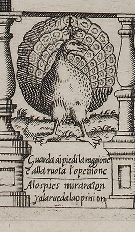
Reason looks down to the feet;
Opinion, to the wheel's conceit.
Literally: Reason looks at the feet, and Opinion at the wheel.
- Spanish, on the board
- A los pies mira razon
y a la rueda la opinion - Italian, on the board
- Guarda ai piedi la raggione
e alla ruota l'openione
(Reason looks at the feet, / and Opinion at the wheel.) - Spanish, Naples 1588 book
- A los pies mira razon,
Y a la rueda la opinion.
Rule. No penalty or bonus. The first square of the track, which every petitioner's career passes.
What you see
A peacock stands frontally on a strip of ground, its head turned to the right, its tail raised and fanned into a full wheel of eyed feathers, a small crest on its head. The tail fills the top of the bay; the numeral 1 is cut over it, directly above the crest and under the rail (board). Below it, between the pedestals, the couplet is engraved in Italian and then in Spanish: “Reason looks down to the feet; / Opinion, to the wheel's conceit.” The Italian says the same (board). No heading is engraved on the square, and the book does not name it separately: the petitioner enters by the Gate of Opinion and spreads their tail like the peacock (el Pauo[n]) (board; Barros 1588, p. 20).
Why it is here
Barros explains the peacock with the petitioner who has just come through the gate: they go about so pleased with themselves, parading their merits, that they spread their tail like the peacock, until time warns them to look down at the feet of their demerits and fold it (Barros 1588, p. 20). The wheel of feathers is their opinion of themselves; the feet are what the petitioner is. “Opinion” here is both self-regard and reputation, what a person thinks of themselves and what others say of them.
The square carries no rule. When two dice are used no throw is smaller than two, so a counter comes to rest on this square only in the one-die variant or with the six arenillas, dice marked on one face only (our observation); the peacock works as a picture every petitioner walks past on the way in.
What Barros says
Barros’s own explanation, from the Naples 1588 book (Spanish as printed; English translation by this edition). Read it in the whole book.
In the Madrid (Madrigal) edition of 1587: fol. 12v.
Historical context
Madrigal's 1587 text glosses the bird further: as the peacock that draws Juno's chariot it signifies greatness, and when it proudly makes its wheel it signifies opinion (Barros 1587, Madrigal ed., PDF 11; Collar de Cáceres 2009, 93). Collar de Cáceres adds Pierio Valeriano's Hieroglyphica, where the peacock stands for ostentation and vainglory (Collar de Cáceres 2009, 93, 103), and Martínez Millán cites Ripa on arrogance and the peacock (Martínez Millán 1996, 468). Ripa's Opinion, as Collar reports, is a richly dressed woman with wings on her shoulders and hands, because opinions change so fast (Collar de Cáceres 2009, 103).
Lucero reads the peacock as a cure for pride, a desengaño de soberbia (Lucero 2019c, 830), and links it to the “Know thyself” of the gate (Lucero 2021, 140). For him La Opinión propia y ajena es el primer motor del juego y marca también los límites en que se va a desarrollar.
(“Opinion, one's own and other people's, is the prime mover of the game and also marks the limits within which it unfolds.”) (Lucero 2021, 142). Court culture could say the opposite: Galileo, drafting a letter to the Medici secretary Vinta on how the grand duke should receive his discovery of the Medicean Stars, wrote that whoever wants to be esteemed ought to have self-esteem first
(Biagioli 1993, 135). Barros's couplet sets itself against that kind of self-promotion (our observation). The peacock's “wheel” also prepares the player for Fortune's wheel at square 51 (our observation).
Differences between the editions
- Couplet. The board's Spanish reads “y a la rueda la opinion”; the La Bella Donna blog drops the “a” (board; Fleur-de-Gigi 2013b). The Naples book prints the couplet in the same words (Barros 1588, p. 21).
- Prose. C reads engañado de pensamiento and misprints dsehaga for deshaga (Barros 1588, p. 20). The modernized transcription of the Madrid text has engañado de su pensamiento (Barros 1587, Madrigal ed., PDF 4). G spells propria where M has propia (Lucero Sánchez 2016, 186).
- Placement. Only M's “Declaración” says where the bird is: at the door of the first square, with the swan above it (Barros 1587, Madrigal ed., PDF 11). On the 1588 board it fills square 1, just past the gate (board).
What scholars say
Bidwell-Steiner reads the peacock as the petitioner's infatuation with themselves and calls it an innovation: the first square to illustrate the game's theme (Bidwell-Steiner 2024, 198). Collar ties this first square closely to the gate, as its continuation (Collar de Cáceres 2009, 93). Wilson describes the petitioner's idea of themselves as a peacock “with fanned-out tail and ugly feet” (Wilson 1968, 367). The La Bella Donna blog renders the couplet “Watch the feet for reason and the wheel for the view” (Fleur-de-Gigi 2013b).
2. A plain square
On the board: No emblem: the numeral '2' (cut like 'Z') under the top rail, and a single small flowering plant on the ground strip.
3. A plain square
On the board: No emblem: numeral '3' and a single flowering sprig on the ground strip.
4. Labor
Trabajo · trauaglio
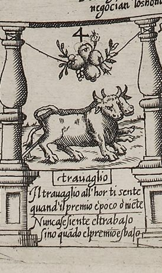
Labor's never felt at all
except when the reward is small.
Literally: Labor is never felt except when the reward is low.
- Spanish, on the board
- Nunca se siente el trabajo
sino qua[n]do el premio es bajo - Italian, on the board
- Il trauaglio all'hor ti sente
quand'il premio è poco ò nie[n]te
(Labor is felt by you [lit. "feels you"] then, / when the reward is little or nothing.) - Spanish, Naples 1588 book
- Nunca se siente el trabajo,
Sino quando el premio es baxo.
Rule. Don't stop: move on again by the number you just threw (and again, if you land on oxen once more).
What you see
A yoke of two oxen walks to the right along the ground strip, the far ox almost hidden behind the near one; a cord from the yoke runs back over the near ox to a plow beam slanting down to the ground at the lower left, half hidden by the baluster. Above them a cluster of fruit and leaves hangs at the middle of a cord slung between the two balusters, with the numeral 4 just above it. Below, under the heading trauaglio, the Italian and then the Spanish couplet: “Labor's never felt at all / except when the reward is small.” The Italian says that you feel labor only when the prize is little or nothing (our gloss) (board).
Why it is here
This is the first Labor square, the first of nine. Barros prints its couplet directly after explaining the oxen: they work hardest and feel it least while they are rewarded, and the petitioner feels their toil only when the pay their hope promised them is withheld (Barros 1588, p. 23). See “About all nine Labor squares”, below.
Historical context
Lucero reproduces this square as his example of the ox emblem (Lucero 2019c, 825). The couplet turns on pay, and Lucero stresses that court favors were graces, not wages (Lucero 2019c, 829). So the pay (paga) that Barros's gloss of the verse expects was exactly what the court did not promise (our observation). Biagioli likewise compares a courtier's reward to divine grace, which no service could guarantee (Biagioli 1993, 51). More under “About all nine Labor squares”, below.
Differences between the editions
- Book and board. The Naples book ends the Spanish couplet baxo; the board has bajo, cut with a long j (Barros 1588, p. 23; board). The board's Italian has niẽte (abbreviated) and quand'il; its Spanish has quãdo (board).
- Madrigal's worked example has a player throw 4, reach the square of Labor and move on to 8, which matches the board's square 4 (Lucero Sánchez 2016, 190). Wilson, without the board, inferred from this example that square 4 was a Labor square (Wilson 1968, 367).
- The collation we cite does not include this couplet, so G's wording of it is not known to us (Lucero Sánchez 2016, 187–88).
What scholars say
Bidwell-Steiner assigns the couplet to “casilla 4” (Bidwell-Steiner 2024, 199). The La Bella Donna blog sees “a bull” here, where the board shows two oxen (Fleur-de-Gigi 2013b; board). See “About all nine Labor squares”, below.
5. A plain square
On the board: No emblem: numeral '5' and a single flowering plant on the ground strip.
6. A plain square
On the board: No emblem: numeral '6' and tufts of grass on the ground strip.
7. The Prodigal
el Prodigo · Il prodigo
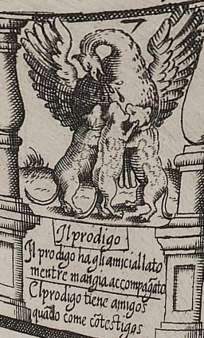
The prodigal has friends, while he
still dines where witnesses can see.
Literally: The prodigal has friends as long as he eats with witnesses.
- Spanish, on the board
- El prodigo tiene amigos
qua[n]do come co[n] testigos - Italian, on the board
- Il prodigo ha gli amici allato
mentre mangia accompag[n]ato
(The prodigal has friends at his side / while he eats in company.) - Spanish, Naples 1588 book
- El prodigo tiene amigos.
Quanto come con testigos.
Rule. No penalty here. Players sent back from False Friendship (39) arrive here after paying one stake.
What you see
A pelican with its wings raised bends its neck to pierce its own breast, and drops of blood fall. Below it, in place of its young, three cat-like animals rear up on their hind legs against its body; one licks at the wound. Its wing tips overlap the capitals of the balusters. Under the heading Il prodigo, the couplet in Italian and Spanish: “The prodigal has friends, while he / still dines where witnesses can see.” The Italian says the prodigal has friends at their side while eating in company (our gloss) (board).
Why it is here
The pelican was the classic image of self-sacrifice: it fed its young with its own blood. Here it pours out its entrails, which Barros glosses as its estate, not to its chicks but to cats (Barros 1588, p. 34). That is the petitioner who has been betrayed by false friends. Barros's remedy is for the petitioner to go back to being prodigal, even with those they most suspected, since at first everyone seems suspect until worse turn up. The picture shows the violence petitioning does to reason: a petitioner must be not only liberal to friends but prodigal to enemies, knowing how little they gain by it (Barros 1588, pp. 33–34). The verse says how long such friendship lasts: as long as the prodigal keeps a table.
The square itself has no rule. The False Friendship square at 39 sends the player back here, and its label adds “Paga” (pay one stake) (Barros 1588, p. 61; board).
What Barros says
Barros’s own explanation, from the Naples 1588 book (Spanish as printed; English translation by this edition). Read it in the whole book.
Historical context
Barros is inverting a sacred image. In the medieval bestiary the pelican kills its young and raises them with its blood after three days, a figure of Christ (abdn.ac.uk). Collar de Cáceres adds that the pelican stood for friendship and piety in Ripa and in Hadrianus Junius's Aenigmata (1565), and for folly in Valeriano (Collar de Cáceres 2009, 93, 103–4). Bidwell-Steiner cites the Physiologus, Isidore and the exegesis of Psalm 101, notes that the pelican was also an emblem of King Alfonso II of Naples, and calls the engraving a blasphemy for Christian emblematics, ya que el pelicano encarna a Cristo y los gatos pertenecen más bien a la magia negra
(“since the pelican embodies Christ and cats belong rather to black magic”) (Bidwell-Steiner 2024, 202). For Martínez Millán the pelican meant Christ's sacrifice from the late Middle Ages (Martínez Millán 1996, 479).
The cats may also carry a pun. Lucero notes that gato was the word for a purse, perhaps once made of cat's skin, and cites examples in Guzmán de Alfarache and Don Quijote (Lucero 2021, 144–45). He sets the square against Hernando de Soto's emblem Liberalis, et non prodigus (“liberal, not prodigal”), by a friend of Barros (Lucero 2021, 144). For Lucero liberality has no square of its own but works along the whole route; the Prodigal is its excess (Lucero 2021, 144).
Court writers described the same economy. Biagioli quotes Agostino Mascardi: The courtier was bound to "impoverish himself in order to become rich; to give in order to receive."
(Biagioli 1993, 39). Della Casa's Galateo advised clients to seem liberal beyond their duty (Biagioli 1993, 85).
Differences between the editions
- Couplet. The board's Spanish reads “qua[n]do come co[n] testigos” (when he eats with witnesses); the book, in Madrigal's edition and in Naples, reads “Quanto come con testigos” (as long as he eats with witnesses) (board; Collar de Cáceres 2009, 103; Barros 1588, p. 35). The board's Italian accompãgato abbreviates accompagnato; Collar prints accompag(n)to, dropping a letter (board).
- Prose. The clause saying that at first everyone is suspect until worse turn up is not in G; M adds it and C keeps it (Lucero Sánchez 2016, 185; Barros 1588, pp. 33–34). C and M read se topan otros peores (Barros 1588, p. 34; Lucero Sánchez 2016, 185); the con of the modernized transcription (se topan con otros peores) is its own (Barros 1587, Madrigal ed., PDF 7).
- Number. The prose does not number the square; the rules put the Prodigal at 7 (Barros 1588, p. 61).
- Image. Wilson, working from the Madrid text without the board, wrote of a pelican pecking its breast and a single cat licking up the blood (Wilson 1968, 368); the board shows three (board).
What scholars say
For Collar de Cáceres the bird that stood for friendship and for Christ has become an image of the spendthrift and of false friends, and the moral is blunt: El dinero lo compra todo
(“Money buys everything”) (Collar de Cáceres 2009, 93); he calls Poverty, square 60, its reverse (Collar de Cáceres 2009, 96). Lucero finds the image enigmatic and perhaps meant only to show la fuerza que se hace a la razón con la pretensión
(Lucero 2021, 144) (“the force done to reason by petitioning”). He offers the purse pun only as a possible refinement (Lucero 2021, 144–45). Bidwell-Steiner calls the lesson una cruz bastante mundana
(“a rather worldly cross”) (Bidwell-Steiner 2024, 202). The La Bella Donna blog describes “a swan and wolves”; the board shows a pelican and cats (Fleur-de-Gigi 2013b; board).
8. A plain square
On the board: No emblem: numeral '8' and a small flowering plant on the ground strip.
9. A plain square
On the board: No emblem: numeral '9' and a small flower on the ground strip.
10. Flattery
la Adulacion · Adulatione
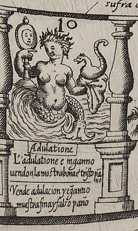
Flattery and Fraud will sell
fine samples, and false cloth as well.
Literally: Flattery and deceit sell a fine sample and false cloth.
- Spanish, on the board
- Vende adulacion y e[n]ganno
muestra fina y falso paño - Italian, on the board
- L'adulatione e inganno
uendon la mostra bona è tristo pa[n]no
(Flattery and deceit / sell the good sample and the sorry cloth.) - Spanish, Naples 1588 book
- Muestra fina, y falso panno;
Vende adulacion, y enganno.
Rule. No penalty here. Players sent back from the Change of Ministers (43) arrive here after paying one stake.
What you see
A siren rises out of the waves: a woman to the waist, with a scaly fish's tail curling up out of the waves at her side. In her right hand she holds up a hand-mirror on a handle; on her left hand sits a chameleon, a small crested lizard with a curled tail. The numeral 10 is above her head. Under the heading Adulatione, the couplet in Italian and Spanish: “Flattery and Fraud will sell / fine samples, and false cloth as well.” The Italian says the same: flattery and deceit sell a good sample and poor cloth (our gloss) (board).
Why it is here
The verse describes a draper's trick: show a fine swatch, deliver shoddy cloth (our gloss). The petitioner comes here after a change of ministers. The minister the petitioner had won over has been replaced, or has changed (the Spanish may also mean that the petitioner has moved on), so they must go back to flattery and bow to whoever has taken the patron's place (Barros 1588, pp. 35–36). Barros explains each figure. The flatterer persuades the person they mean to deceive with examples of vice among great persons, shown to the victim as in a mirror and cloaked in virtue, so that the victim copies them without recognizing them. The flatterer changes shape to suit the other's taste, as the chameleon takes the color of whatever is nearest. The flatterer's talk is the siren's song, which kills whoever, lost in their own vanity, enjoys the music and does not stop their ears with cotton (Barros 1588, pp. 36–37).
The square itself has no rule. Square 43, the Change of Ministers, sends the player back here, and its label adds “Paga” (pay one stake) (Barros 1588, p. 61; board).
What Barros says
Barros’s own explanation, from the Naples 1588 book (Spanish as printed; English translation by this edition). Read it in the whole book.
Historical context
Both animals come from the emblem tradition. In Alciato's In adulatores the chameleon feeds on air and takes on every color “except for red and white”; “Even so the flatterer feeds on the wind of popular approval” and “imitates only the black features of the prince”, in the Glasgow translation (Alciato 1621). Alciato's Sirenes shows fish-tailed sirens singing to Ulysses, bound to his mast; they carry no mirror (Alciato 1621). Collar de Cáceres takes Barros's stopped ears as an allusion to Ulysses and cites Alciato and Ripa for the chameleon as the flatterer (Collar de Cáceres 2009, 94, 104). The sources we cite do not trace the siren's mirror to an emblem model. Juan de Horozco treats the sirens in his Emblemas morales (1589), book II, emblem 30 (Collar de Cáceres 2009, 104). Sebastián de Covarrubias has sirens and a “color-changing, flattering” chameleon in his Emblemas morales of 1610 (Lucero 2021, 145; Martínez Millán 1996, 476). Both books appeared after Barros's; Martínez Millán's parallel in Ripa is also later, since the Iconologia first appeared after the Filosofía cortesana (Martínez Millán 1996, 479; Lucero Sánchez 2019, 166).
At court the chameleon was the courtier's animal. Damasio de Frías advised the discreet courtier to be a chameleon with the great in superficial things (Lucero 2021, 145). Martínez Millán cites Lope, whose Los Guzmanes del Toral calls courtiers chameleons (Martínez Millán 1996, 479–80). Díaz Gito finds it telling that fuese el camaleón el animal simbólico del cortesano
(“the chameleon should be the courtier's symbolic animal”) (Díaz Gito 2020, 185). Hernando de Soto, Barros's friend, wrote of the flatterer cuyo veneno sin sentir mata
(Collar de Cáceres 2009, 104) (“whose poison kills without being felt”) and recalled Cicero's warning that flattery sends a friend headlong where truth gives offense, as Collar de Cáceres reports (Collar de Cáceres 2009, 94, 104). In Galileo's Italy a client could test a patron, Biagioli writes, by sending “extravagantly flattering letters” and studying the answer (Biagioli 1993, 27).
Differences between the editions
- Couplet. On the board the Spanish lines run “Vende adulacion y e[n]ganno / muestra fina y falso paño”; the book reverses them, “Muestra fina, y falso panno; / Vende adulacion, y enganno” (board; Barros 1588, p. 37; Collar de Cáceres 2009, 104). The Naples book spells panno and enganno with the Italian double n for ñ; so does the board's e[n]ganno (Barros 1588, p. 37; board).
- Prose. In G the siren kills the person in suspense who enjoys her music (gustando de su música); M and C make the victim someone who, raised up in their vanity, enjoys it (elevado en su vanidad) (Lucero Sánchez 2016, 185; Barros 1588, p. 37). G has the petitioner make their reverence anew (de nuevo) to the successor; M adds en aquel lugar, in that place (Lucero Sánchez 2016, 186). C reads como en espejo, the modernized transcription of M como en un espejo (Barros 1588, p. 36; Barros 1587, Madrigal ed., PDF 7).
- Number. The prose does not number the square; the rules put Flattery at 10 (Barros 1588, p. 61).
- Martínez Millán's text prints “Maestra fina” for “Muestra fina”, a slip (Martínez Millán 1996, 479).
What scholars say
Collar de Cáceres distinguishes the two creatures: sirens are símbolo común de la seducción o el engaño
(Collar de Cáceres 2009, 94), the chameleon is the emblem propiamente de la lisonja
(“a common symbol of seduction or deceit”; “properly of flattery”) (Collar de Cáceres 2009, 94). Seville puts the pieces together differently from Barros: Flattery is represented as a Siren, whose music will kill if the ears are not stopped.
(Seville 2026, 73) In his account the mirror shows bad conduct and the chameleon makes it seem virtuous (Seville 2026, 73). Barros's text instead puts the cloak of virtue in the mirror clause and gives the chameleon the changing of shape (Barros 1588, pp. 36–37). Lucero writes Propone Barros definir esta casa con la sirena o el camaleón.
(Lucero 2021, 145) (“Barros proposes to define this square with the siren or the chameleon”); the board shows both (Lucero 2021, 145; board). Bidwell-Steiner reads the siren as speech, the chameleon as transformation and the mirror as false reflection. She counts the siren among the board's three female figures, all negative or ambiguous (Bidwell-Steiner 2024, 202–3) (the board also shows a woman in the Occasion of the top right corner (board)). The La Bella Donna blog describes “a mermaid looking into a mirror” and does not mention the chameleon (Fleur-de-Gigi 2013b).
11. A plain square
On the board: No emblem: numeral '11' and grass on the ground strip.
12. Labor
Trabajo · trauaglio
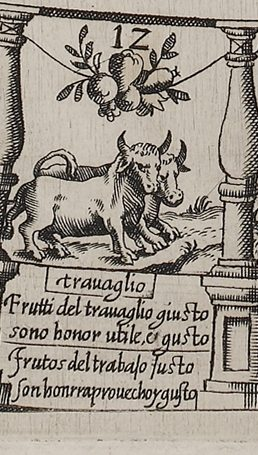
The fruits of honest toil are these:
honor, profit, and heart's ease.
Literally: The fruits of just labor are honor, profit and pleasure.
- Spanish, on the board
- Frutos del trabajo justo
son honrra prouecho y gusto - Italian, on the board
- Frutti del trauaglio giusto
sono honor utile, e gusto
(Fruits of just labor / are honor, profit and pleasure.) - Spanish, Naples 1588 book
- Frutos del trabajo justo:
Son onrra; prouecho, y gusto. - Madrid 1587, first edition, as quoted by Lucero Sánchez (Lucero Sánchez 2016, 187–88); this couplet only in the first edition
- No se siente el que es mayor, donde pone el yugo amor.
However great the yoke may prove,
it is not felt when laid by love.
Rule. Don't stop: move on again by the number you just threw (and again, if you land on oxen once more).
What you see
Two yoked oxen, the near one standing broadside with its head turned, the second beside it. Above hangs a cluster of fruit and leaves on a cord slung between the balusters. Under trauaglio: “The fruits of honest toil are these: / honor, profit, and heart's ease.” The Italian says the same (board).
Why it is here
The verse names the fruits hanging above the oxen: honor, profit and pleasure, the rewards of just labor that Barros sees strung together on one thread (Barros 1588, pp. 22–26). The license praises the work as useful, decent and pleasant (vtil … honesto y gustoso), and Cervantes's sonnet praises it for joining pleasure and profit; the couplet puts honor, profit and pleasure among labor's fruits (our observation) (Barros 1588, sig. A2v).
Historical context
Lucero observes that the couplets added in Madrigal's edition stress the fruits of work: honor, profit, pleasure, riches, hope and the palm (Lucero Sánchez 2016, 187) (the hope couplet, in fact, was already in G (Lucero Sánchez 2016, 188)). Bidwell-Steiner remarks that on every Labor square the fruit hangs out of the oxen's reach (Bidwell-Steiner 2024, 199). See “About all nine Labor squares”, below.
Differences between the editions
- Not in the princeps (G); added in M and kept in C (Lucero Sánchez 2016, 187–88).
- The board reads “Frutos del trabajo justo” (Collar prints “Frutos de trabajo”) and “honrra prouecho”; the Naples book has “onrra; prouecho” (board; Collar de Cáceres 2009, 92; Barros 1588, p. 26). The La Bella Donna blog's “honra, proveco” normalizes and misreads (board; Fleur-de-Gigi 2013b).
What scholars say
Wood attaches this couplet to all the Labor squares: Players can double their advancement in the game by landing on spaces of bulls
(Wood 2019, 463) carrying her English version of it (Wood 2019, 463). Seville's example for “the work space 12” quotes a different verse, the one engraved on square 34 (Seville 2026, 70; board).
13. A plain square
On the board: No emblem: numeral '13' and two small plants on the ground strip.
14. A plain square
On the board: No emblem: numeral '14' and a single flower on the ground strip.
15. The Pass of Hope
Passo de la esperança · Passo della speranza
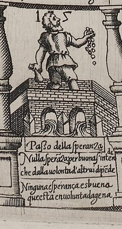
There is no hope worth having still
that rests upon another's will.
Literally: No hope is good that rests on another's will.
- Spanish, on the board
- Ninguna esperança es buena
que esta en uoluntad agena - Italian, on the board
- Nulla spera[n]za per buona s'intende
che dalla uolonta d'altrui dipe[n]de
(No hope is reckoned good / that depends on the will of others.) - Spanish, Naples 1588 book
- Ninguna esperanca es buena;
Que esta en voluntad ajena.
Rule. Don't stop here: pay one stake, move on to 26, the Favorite, and pay one more there.
On the board: Al priuato ·n[umer]º· 26. Paga — To the Favorite, no. 26. Pay.
What you see
A bearded man in a short tunic stands on a brick bridge of two round arches, with water pouring out through the arches beneath his feet. He holds up one hand, and a string of coins falls from it; in the other he keeps a purse or bag (board). The numeral 15 is cut on either side of his head (board). Under the picture are the heading Passo della speranza, an Italian couplet and a Spanish couplet: “There is no hope worth having still / that rests upon another's will” (board). A separate box in the white gutter inside the ring, facing the square, carries the rule: Al priuato ·nº· 26. Paga, “To the Favorite, no. 26. Pay” (board).
Why it is here
This is the first thing that happens to the new petitioner on starting out. They tell their friends about their petition, and the friends praise the petitioner's merits so lavishly that the newcomer comes to rate them above what they had even hoped for. The petitioner “pays the toll”, asks who has influence with the person they need, learns that it is the privado (the Favorite), and goes to the Favorite's house to ask for help. Because they are new to petitioning, having to beg hurts them, and they say the verse to themselves (Barros 1588, pp. 26–28). Hope, in other words, costs money, and it carries you straight to the Favorite's door. The verse gives the lesson: hope that hangs on someone else's will is worth nothing.
The rule follows the story. According to the 1588 rules, a player who reaches the Pass of Hope goes on to the Favorite at 26, paying one stake “for each” (Barros 1588, pp. 60–61). The Madrid rules of Pedro Madrigal (1587) spell this out as one stake for each of the two squares (Barros 1587, Madrigal ed., PDF 12; Martínez Millán 1996, 470–71). Madrigal's worked example shows the rule in use. Pedro, standing on 6, throws 9 and lands on 15. He reads the label above the square and pays one stake to the pot “for the good hope that offers itself”. When he puts his marker on 26 he pays another “for the favor he hopes for” (Barros 1587, Madrigal ed., PDF 12).
What Barros says
Barros’s own explanation, from the Naples 1588 book (Spanish as printed; English translation by this edition). Read it in the whole book.
In the Madrid (Madrigal) edition of 1587: fol. 17r–17v.
Historical context
The square adapts the bridge of the Game of the Goose. On goose boards the bridge stood at
square 6, and the rule there was to pay and jump ahead: at number six, where there is a bridge, one pays a toll and advances to the twelfth space
(Wood 2019, 458)
(Wood 2019, 458). The goose game reached Philip II's court shortly before Barros wrote. In 1585 the
king's jester Gonzalo de Liaño complained to Francesco de' Medici about the new Tuscan game,
in which, among other things, dan en una puente y meten un real
(Infantes 2010, 135)
(“they land on a bridge and put in a real”) (Infantes 2010, 134–35). Lucero
traces Barros's square to that bridge: it procede más o menos remotamente de la oca original, de ahí que sea preciso pagar el portazgo sobre el Puente
(Lucero 2021, 144)
(“derives more or less remotely from the original goose game, hence one must pay the toll
over the Bridge”) (Lucero 2021, 144). Barros moved the bridge
from 6 to 15 and made the jump lead to 26 instead of 12 (our observation). On goose boards 26
is one of the two Dice squares, reached by a lucky first throw of 6 and 3
(Lucero 2020, 122; Collar de Cáceres 2009, 102 n.68).
Barros's shortcut therefore ends on what had been a lucky square (our observation).
The Academy's dictionary defines portazgo as “Derechos que se pagan por pasar por un sitio determinado de un camino” (dues paid for passing a given point on a road) and derives it from the older portadgo (Real Academia Española n.d.). Barros's first edition, printed by the
widow of Alonso Gómez, spells it portadgo
(Lucero Sánchez 2016, 183). In Barros the toll is a figure of speech:
the text does not say who is paid. Lucero ties it to Liberality, the first of the four “means” Barros names, which No tiene, a diferencia de los restantes, una casa específica, sino que despliega una influencia transversal a lo largo de todo el itinerario
(Lucero 2021, 144) (unlike the others, has no specific square, but exerts its influence across the whole route); en ella se basa la esperanza que se ha de poner en el objetivo
(on it rests the hope that must be placed in the goal) (Lucero 2021, 144).
Traditionally, hope was shown as a ship in a stormy sea (Martínez Millán 1996, 477). Alciato's Spes proxima has a storm-tossed ship
saved by the twin stars Castor and Pollux
(Martínez Millán 1996, 477; Alciato 1621). Barros's bridge
breaks with that image, and his text does not describe the picture
(Collar de Cáceres 2009, 94). Collar de Cáceres reads the bridge as the passage
one must take to reach the far bank: El puente así mostrado es el paso obligado hacia otra orilla, que representa la esperanza en prosperar.
(Collar de Cáceres 2009, 94)
(Collar de Cáceres 2009, 94). Asking “who has influence with so-and-so” (Barros 1588, p. 27) is how
patronage worked in the courts Biagioli studies. Biagioli writes that an early modern patron was often a broker
(Biagioli 1993, 19), standing between the client and a higher source of power such as a greater patron
(Biagioli 1993, 19), and that A client's access to a patron was not just a technical matter of getting to know the right ways to contact the patron
(Biagioli 1993, 19).
Differences between the editions
- Spelling of the toll: portadgo in G, portazgo in M and C (Lucero Sánchez 2016, 183; Barros 1588, p. 27). Lucero lists this among the errata M corrected (Lucero Sánchez 2016, 183). The dictionary gives portadgo as the older form of the word (Real Academia Española n.d.), so G's form may be old-fashioned rather than wrong (our observation).
- In M the petitioner visits “friends and patrons” (amigos y valedores) (Martínez Millán 1996, 477 n.73; Barros 1587, Madrigal ed., PDF 6). C has “friends” only (Barros 1588, p. 27).
- Payment: C says one stake “por cada vna” (for each), which leaves open what is being counted (Barros 1588, p. 61). M says “por cada una de las dos” (for each of the two squares) (Barros 1587, Madrigal ed., PDF 12; Martínez Millán 1996, 470–71).
- Rule label: the Naples board reads Al priuato ·nº· 26. Paga (board). In M's worked example Pedro reads the label on the lost Madrid board; the modernized transcription gives it as “Al privado. un. 26. pi.” (Barros 1587, Madrigal ed., PDF 12). That may be a misreading of nº and pa[ga] (our observation; uncertain).
- Verse: the book and the board agree except for spelling (ajena in the book, agena on the board) (Barros 1588, p. 28; board). The Italian, Nulla spera[n]za per buona s'intende / che dalla uolonta d'altrui dipe[n]de, has the same sense (board). The plate reads per buona where Collar prints por buona (board; Collar de Cáceres 2009, 94).
What scholars say
Readers disagree about what the man is doing with the coins. Collar de Cáceres has him throwing
coins into the water, as one “paying the toll”, and reads the square as paying for favors and
buying another person's will (Collar de Cáceres 2009, 94). Bidwell-Steiner sees un monedero en la mano izquierda mientras su contenido se escurre entre los dedos de su mano derecha
(Bidwell-Steiner 2024, 200) (a purse in the left hand while its contents slip through the fingers of the right), and takes Barros to mean that the newcomer tiene que comprar la buena voluntad de sus «amigos» con un «peaje» para avanzar a la «Casa del privado»
(has to buy the goodwill of their “friends” with a “toll” to move on to the “House of the Favorite”) (Bidwell-Steiner 2024, 200). Zollinger describes le nouveau courtisan sur un pont, les mains pleines d’argent
(the new courtier on a bridge, his hands full of money) (Ciompi & Seville, giochidelloca.it).
Martínez Millán, who had not seen the board, read the square through the emblem of the ship
in a storm as a hopeful image (Martínez Millán 1996, 477). Collar rejects that reading because the board shows a bridge and a man paying (Collar de Cáceres 2009, 94, 104 n.104). Seville places at the bridge the bribe of
“first fruits” and quotes the verse that belongs to square 26
(Seville 2026, 73). In Barros's text both belong to the Favorite's house
(our observation) (Barros 1588, p. 28). The La Bella Donna blog
renders the heading “Steps of Hope” and privato as “Private”
16. A plain square
On the board: No emblem: numeral '16' and a small flowering plant on the ground strip.
17. Labor
Trabajo · trauaglio
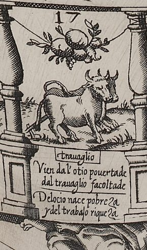
From idleness springs poverty,
and out of labor, prosperity.
Literally: From idleness is born poverty, and from labor wealth.
- Spanish, on the board
- Del ocio nace pobreza
y del trabajo riqueza - Italian, on the board
- Vien dal'otio pouertade
dal trauaglio facoltade
(From idleness comes poverty, / from labor, means.) - Spanish, Naples 1588 book
- Del ocio nazce pobreza:
Y del trabajo riqueza. - Madrid 1587, first edition, as quoted by Lucero Sánchez (Lucero Sánchez 2016, 187–88); this couplet only in the first edition
- El yugo, reja y arado no cansan por el amado.
Yoke and plowshare, plow and all,
for love's sake never tire at all.
Rule. Don't stop: move on again by the number you just threw (and again, if you land on oxen once more).
What you see
The near ox stands turned toward the viewer, a cord from its yoke looped back over its body and down to a small plow at the lower left. The second ox is half hidden behind it; only a third horn and a flank show, and the engraving does not make clear whether it lies down or stands. Above, a cluster of fruit hangs on a cord slung between the balusters. Under trauaglio: “From idleness springs poverty, / and out of labor, prosperity.” The Italian says the same, with facoltade (means, wealth) for riches (our gloss). The reclining Occasion of the top right corner (“No me pierdas”) overlaps the edge of the verse (board).
Why it is here
Idleness against labor is the opposition on which the whole board turns, as Lucero argues: the oxen stand for work, and the squares of inaction, Poverty at 60 among them, stand against Labor and Diligence (Lucero 2019c, 822, 824; Lucero Sánchez 2020, 29; Bidwell-Steiner 2024, 199). See “About all nine Labor squares”, below.
Historical context
In Lucero's words, idleness and business were “polar opposites” when Barros wrote; idleness “teaches every vice”, and games of chance were “commonly” named “among the harms of idleness” (our translation) (Lucero 2019c, 822). Barros owned the Apólogo de la Ociosidad y el Trabajo, in which Labor, rejected by Lady Idleness, marries Diligence (Lucero 2019c, 822–23). Barros came back to the idea in his praise of Guzmán de Alfarache (1599), whose hero he calls a son of idleness (Lucero Sánchez 2016, 187; Collar de Cáceres 2009, 82). In his thesis Lucero sets the squares of inaction against Labor and Diligence (Lucero Sánchez 2020, 28–29).
Differences between the editions
- Not in G; added in M and kept in C (Lucero Sánchez 2016, 187–88).
- The Naples book spells nazce, the board nace (Barros 1588, p. 26; board). The board's Italian reads “Vien dal' otio”, with the apostrophe after dal (board).
What scholars say
The La Bella Donna blog sees a “white bull” (Fleur-de-Gigi 2013b). See “About all nine Labor squares”, below.
18. A plain square
On the board: No emblem: numeral '18' and a small leafy sprig on the ground strip.
19. A plain square
On the board: No emblem: numeral '19' and a small flower on the ground strip.
20. Diligence
Diligencia · Diligentia
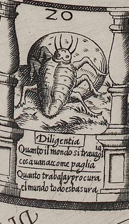
For all the world's labor and care,
it's dung and rubbish everywhere.
Literally: All that the world labors and strives for is rubbish.
- Spanish, on the board
- Quanto trabaja y procura
el mundo todo es basura - Italian, on the board
- Quanto il mondo si trauaglia
cosa uana e come paglia
(However much the world toils, / it is a vain thing, and like straw.) - Spanish, Naples 1588 book
- Quanto trabaja y procura,
El mundo todo es vasura.
Rule. No penalty here. Players sent back from “I Thought…” (55) arrive here after paying one stake, to start their diligence again.
What you see
A large beetle, a scarab or dung beetle, seen from above, pushes a big round ball that stands up behind it like a disc. It stands on the strip of ground that runs between the balusters (board). The numeral 20 is above it. Under the picture are the heading Diligentia and the two couplets. The Spanish reads, in English: “For all the world's labor and care, / it's dung and rubbish everywhere” (board). The square has no rule label (board).
Why it is here
Barros brings in Diligence only after the square of “I Thought…” (55), the idler who assumes someone else will do the work. The idler is told to go back and be diligent, and to watch how the beetle does it. With more load than strength, the beetle struggles to push a ball of dung to its hole. Everything people pursue is dung in the end, Barros says, and the beetle shows how hard the world works and for what (Barros 1588, pp. 43–44). So the square has two faces. It holds up the beetle's effort as a model, and it judges the prize worthless.
Earlier, in the House of Fortune, Barros rejects the saying that diligence is the mother of good fortune. Diligence, he says, is Fortune's daughter, nursed at her breast (Barros 1588, pp. 39–40). In play, Diligence has no effect of its own. It is the place the rules send a player from “I Thought…” (Barros 1588, p. 62).
What Barros says
Barros’s own explanation, from the Naples 1588 book (Spanish as printed; English translation by this edition). Read it in the whole book.
Historical context
Diligence is one of the four “means” Barros names for the petitioner's career, along with Liberality, Flattery and Labor (Barros 1588, p. 18). Lucero sees several squares of the board arranged on an axis of activity against inactivity (Lucero Sánchez 2019, 162), and calls this pair the plainest: La contraposición más característica en la Filosofía cortesana atañe a Pensé Que y Diligencia
(Lucero Sánchez 2019, 163). The penalty sends the lazy ass of square 55 back to the busy beetle (Lucero Sánchez 2019, 175).
The beetle had a long record in emblem books, and it could mean very different things. Juan de Borja's Empresas morales made it a “valiant warrior” (Strenuus bellator) that should shame the proud (Lucero 2019c, 830). Collar de Cáceres adds Pierio Valeriano, who gives the beetle many meanings; among them Collar quotes “labor y diligencia del hombre solo”
(Collar de Cáceres 2009, 104) (“the labor and diligence of a man on his own”). He also notes darker uses: the blind person in Horozco and the dishonest person in Lorenzo de Zamora (Collar de Cáceres 2009, 94; 104 n.106). Lucero traces to Valeriano the old belief that the beetle rolls its ball from the dung of an ox or an ass. Covarrubias's dictionary later repeated it, adding that the ball imitated the shape and motion of the heavens (Lucero Sánchez 2019, 176). Bidwell-Steiner points to Horapollo's Hieroglyphica (I.10), where the scarab, thought to be born without a mother, stands for the only-begotten (Bidwell-Steiner 2024, 204).
Barros's verse turns the image toward contempt of the world (de contemptu mundi). Lucero finds that surprising after Borja, and compares it with the Inn of the goose game, which scholars also read as a rejection of worldly goods (Lucero 2019c, 830; Lucero 2021, 144 n.15).
Differences between the editions
- Verse: the 1588 book spells it vasura (Barros 1588, p. 44), and the board basura (board). Wilson reads M as Quanto trabaja y procura (Wilson 1968, 371). Martínez Millán prints Quanto trabajo, probably a slip (Martínez Millán 1996, 480).
- The Italian couplet differs in sense: Quanto il mondo si trauaglia / cosa uana e come paglia, “however much the world toils, it is a vain thing, like straw” (board). It swaps dung for straw, and trauaglia echoes trauaglio, the Labor squares (our observation). The plate reads Quanto il mondo. Collar prints Quanto el mundo and the La Bella Donna blog Quando (board; Collar de Cáceres 2009, 94; Fleur-de-Gigi 2013b).
- No differences between G and M are recorded for this passage in the sources we cite.
What scholars say
Collar de Cáceres finds the beetle ambiguous: en lo positivo, el esfuerzo, la diligencia en el trabajo en suma; en lo negativo, la basura del mundo que arrastra, y la larvada convicción de que la sola vía del esfuerzo no conduce a la meta deseada
(on the positive side, effort, in short diligence in work; on the negative, the world's rubbish that it drags along, and the latent conviction that effort alone does not lead to the desired goal) (Collar de Cáceres 2009, 94). Lucero places the square firmly in the contempt of worldly goods. He adds that the petitioner must still be diligent, because diligence is what can bend the will of a patron or of Fortune (Lucero 2019c, 830–31). Bidwell-Steiner reads the Horapollo source, a beetle that breeds with no female, as un primer indicio a la tendencia homosocial del texto
(a first sign of the text's homosocial tendency) (Bidwell-Steiner 2024, 204). The La Bella Donna blog describes a “purple beetle” (Fleur-de-Gigi 2013b), a color the black-and-white engraving does not have (our observation).
21. A plain square
On the board: No emblem: numeral '21' and a flowering plant (lily-like) on the ground strip.
22. A plain square
On the board: No emblem: numeral '22' (cut 'ZZ') and a small leafy plant on the ground strip.
23. Labor
Trabajo · tauaglio [sic, for trauaglio]
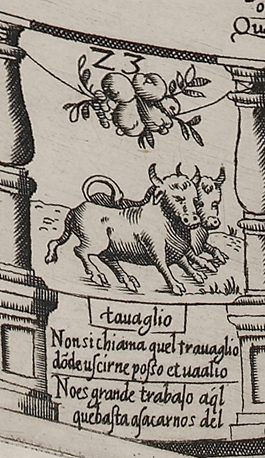
No trouble's great, if work can be
enough to set us from it free.
Literally: That is no great hardship which suffices to get us out of it.
- Spanish, on the board
- No es grande trabajo aq[ue]l
que basta a sacarnos del - Italian, on the board
- Non si chiama quel trauaglio
do[n]de uscirne posso et uaalio
(That is not called hardship / from which I can get out, and have the strength to.) - Spanish, Naples 1588 book
- No es grande trabajo aquel;
Que basta a sacarnos del. - Madrid 1587, first edition, as quoted by Lucero Sánchez (Lucero Sánchez 2016, 187–88); this couplet only in the first edition
- No oy [hay] trabajo que no acabe, al que le tiene por grave.
There is no toil but it will break
the one who deems it hard to take.
Rule. Don't stop: move on again by the number you just threw (and again, if you land on oxen once more).
What you see
Two oxen side by side, heads together, a cord from the yoke looped over the near ox's back; above them a cluster of fruit on a cord slung between the balusters, with the numeral 23 beside it. The verse box lies on the outer side of the top row, so it reads upside down to a player seated at the foot of the sheet. The heading is engraved tauaglio, without the r. The couplet: “No trouble's great, if work can be / enough to set us from it free.” The Italian says, roughly, that it is no hardship if I can, and have strength to, get out of it (our gloss) (board).
Why it is here
Here trabajo means trouble: a hardship that work can get you out of is no great hardship, so keep going. See “About all nine Labor squares”, below.
Historical context
This is one of the four couplets shared by the princeps and the later editions; in G it came last of the eight, in M and C third (Lucero Sánchez 2016, 187–88). In the classic Goose game 23 is a goose square, so here Barros's oxen fall where a goose would stand (our observation, from Collar's two lists) (Collar de Cáceres 2009, 102). See “About all nine Labor squares”, below.
Differences between the editions
- The heading tauaglio was checked in both photographs of the sheet; the other Labor cartouches read trauaglio, and Collar and the La Bella Donna blog print the regular form (board; Collar de Cáceres 2009, 92; Fleur-de-Gigi 2013b).
- The Italian second line reads uaalio for uaglio; Collar prints it as engraved (board; Collar de Cáceres 2009, 92).
- The Naples book prints grandè, with a grave accent (Barros 1588, p. 26).
What scholars say
The La Bella Donna blog renders the couplet “It is not called work if you can quit when you want” and sees “two White bulls” (Fleur-de-Gigi 2013b). See “About all nine Labor squares”, below.
24. A plain square
On the board: No emblem: numeral '24' and a small plant on the ground strip.
25. A plain square
On the board: No emblem: numeral '25' and a small flowering plant on the ground strip.
26. The Favorite
Casa del priuado · Il priuato
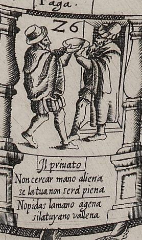
Before you ask another's hand,
fill yours, or empty-handed stand.
Literally: Do not ask for another's hand if yours does not go full.
- Spanish, on the board
- No pidas la mano agena
si la tuya no va llena - Italian, on the board
- Non cercar mano aliena
se la tua non serà piena
(Do not seek another's hand / if yours will not be full.) - Spanish, Naples 1588 book
- No pidas la mano ajena
Si la tuya no va llena.
Rule. Pay one stake, as the board's label says (the edition's decision). A player sent on from the Pass of Hope (15) pays here too, after paying at 15.
On the board: Paga. — Pay.
What you see
Two men in cloaks. On the left, a man in a brimmed hat steps forward holding up a round dish or bowl in one hand; what it holds cannot be made out. He offers it to a bearded man in a cap on the right, who stands in a doorway and reaches out for it (board). The numeral 26 is cut by the doorway. Under the picture are the heading, Il priuato (“The Favorite”, with the u cut like an n), and the two couplets (board). The Spanish reads, in English: “Before you ask another's hand, / fill yours, or empty-handed stand” (board). A small box in the white gutter carries the single word Paga., “Pay” (board).
Why it is here
Having reached the Favorite's house, the petitioner offers the Favorite “the first fruits of his estate” to win a friendly hearing. The petitioner has first waited for the right moment. Experience teaches them how much the gift matters, and they leave saying the verse (Barros 1588, p. 28). The gift buys a hearing, not yet the favor itself (our reading).
In play the Favorite costs money. The board says “Pay” (board). The rules name a payment here only within the move from the Pass of Hope, one stake at each square, and say nothing of a player who lands here directly (Barros 1588, pp. 60–61; Barros 1587, Madrigal ed., PDF 12). Collar de Cáceres reads the board's Paga as applying whether the player arrives straight from the track or from square 15 (Collar de Cáceres 2009, 94). The edition follows the board and Collar: every player who lands on 26 pays one stake, whether they arrive directly or by way of the Pass of Hope (our decision). Competition works here too. In Madrigal's worked example Rodrigo reaches 15, goes on to 26, finds Pedro there and takes his place, paying two stakes. Pedro goes back to the square Rodrigo came from and pays one stake for going back (Barros 1587, Madrigal ed., PDF 12).
What Barros says
Barros’s own explanation, from the Naples 1588 book (Spanish as printed; English translation by this edition). Read it in the whole book.
Historical context
A privado was not just any powerful person. Biagioli notes that the favorite was typical of baroque courts, and that In Spain, the title was privado and represented a specific role within court hierarchy.
(Biagioli 1993, 323 n.50). Bidwell-Steiner places the beginnings of the system of royal favorites (validos) in Philip II's centralized Madrid court (Bidwell-Steiner 2024, 209). In Barros's text the petitioner asks who has influence with “so-and-so” and is told it is the privado (Barros 1588, p. 27). The Favorite here is the person who has the ear of whoever grants the favor (our reading). Barros dedicated the book to one such man, Philip II's secretary Mateo Vázquez de Leca. Lucero writes that Vázquez had won the king's privanza (his confidence) by the early 1580s (Lucero 2019b, 37). Martínez Millán calls him imprescindible para obtener cualquier gracia
(Martínez Millán 1996, 462) (indispensable for obtaining any grace) or favor from the king at that time (Martínez Millán 1996, 462 n.5).
Barros also wrote a short manuscript piece, Discurso y difinición del privado, kept among Vázquez's papers. It paraphrases Aristotle's Nicomachean Ethics on friendship (book 8; Lucero says “capítulo 8”) (Lucero 2019b, 42; Martínez Millán 1996, 465 n.16). In it he writes that es casi una misma cosa la privanza que alcanza el menor con el mayor que el amistad que se traba entre los iguales
(“the favor the lesser wins with the greater is almost the same thing as the friendship formed between equals”) (Lucero 2019b, 42). Collar de Cáceres finds this cynical, because Barros also argues that friendship based on usefulness lasts longer than the primary kind (Collar de Cáceres 2009, 84).
The gift of first fruits belongs to an economy of gifts that historians of court patronage describe. Writing about Medici Florence, not Madrid, Biagioli argues that Gift-giving was the best investment for a client because the patron was bound by his status to reciprocate gifts in proportion to his own (rather than the client's) status.
(Biagioli 1993, 39). Barros's verse makes the same calculation from the client's side: go to the great with your hands full (our observation; Bidwell-Steiner likewise reads the gift as a climber's calculated investment (Bidwell-Steiner 2024, 201)).
Differences between the editions
- Rule: the board's Paga. stands on its own (board). The books name a payment here only as part of the move from 15, “for each” (C) or “for each of the two” (M) (Barros 1588, p. 61; Barros 1587, Madrigal ed., PDF 12). In M's worked example Pedro pays at 26 “for the favor he hopes for” (Barros 1587, Madrigal ed., PDF 12). The edition charges a player who lands here directly as well, following the board and Collar de Cáceres (our decision) (board; Collar de Cáceres 2009, 94).
- Verse: the book and the board agree except for spelling (ajena in the book, agena on the board) (Barros 1588, p. 28; board). The plate reads No pidas. The La Bella Donna blog's “No(n) pidas” is not supported (board; Fleur-de-Gigi 2013b). The Italian, Non cercar mano aliena / se la tua non serà piena, “do not seek another's hand if yours will not be full”, has the same sense (board).
- Prose: C reads aguardado coyu[n]tura, y como de la esperie[n]cia; the modernized transcription of M reads aguardando coyuntura, como de la experiencia (Barros 1588, p. 28; Barros 1587, Madrigal ed., PDF 6). M itself reads aguardado (and misprints pa for para), so the transcription's aguardando is its own (Lucero Sánchez 2016, 184).
What scholars say
Collar de Cáceres reads the square bluntly: Sólo el dinero abre las puertas para prosperar por esta vía.
(Collar de Cáceres 2009, 94) (Only money opens the doors to prospering by this route.) He calls the disillusion it teaches un verdadero ejercicio de realismo
(“a true exercise in realism”) (Collar de Cáceres 2009, 94). For Martínez Millán the gift marks the courtier's loss of independence. A petitioner who comes to the Favorite's door already willing to spend their own property in service, and who must shape every act to a superior's liking, ends with a spirit that Martínez Millán calls “pobre y servil” (poor and servile); he finds the complaint already in Antonio de Guevara (Martínez Millán 1996, 477–78). Bidwell-Steiner identifies the man in the doorway, from his posture and decorated cap, as a wealthy merchant; she compares a Neapolitan merchant in Abraham de Bruyn's costume book of 1577. In her words, la semántica de generosidad pasa de un comportamiento habitual y ostentoso de los nobles a una calculada y necesaria inversión de un trepador social
(the meaning of generosity passes from the habitual, showy behavior of nobles to the calculated and necessary investment of a social climber) (Bidwell-Steiner 2024, 200–201).
Lucero sums up the square as handing over the first fruits to one's patron (Lucero 2021, 144). The La Bella Donna blog describes “a man passing a bag to another” (Fleur-de-Gigi 2013b). The plate shows a dish or bowl (board).
27. A plain square
On the board: No emblem: numeral '27' and a small flowering plant on the ground strip.
28. The Dice
Los dados · Sorte
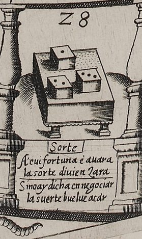
If luck won't help your case along,
your throw of dice will turn out wrong.
Literally: If there is no luck in pressing one's case, the throw turns into a losing one.
- Spanish, on the board
- Si no ay dicha en negociar
la suerte buelue acar - Italian, on the board
- A'cui fortuna è auara
la sorte diuien zara
(For him to whom Fortune is miserly, / the throw turns into "zara".) - Spanish, Naples 1588 book
- Si no ay dicha en negociar,
La suerte se buelue azar.
Rule. No effect if you land here. Players from What Will They Say? (36) are sent back here.
What you see
Three dice lie on a small table covered with a dotted cloth that has a scalloped fringe. Their upper faces show one, two and three pips (board). The numeral 28 is beside them. Under the picture are the heading Sorte (Italian for “chance” or “throw”) and the two couplets. The Spanish reads, in English: “If luck won't help your case along, / your throw of dice will turn out wrong” (board). The square has no rule label (board).
Why it is here
Barros ties this square to What Will They Say? (36). The petitioner who has “served” the fear of gossip goes back to the Dice at 28 “to seek another suerte at pressing his case”: another throw, another way of trying their luck. But for someone unlucky, who meets with azar, a losing throw, in everything they put their hand to, the best throw of all would be a quick disillusion. The dice, Barros says, are painted showing “a low azar” (Barros 1588, pp. 31–32). The board's dice make 1 + 2 + 3 = 6 (board; Lucero 2020, 124), a poor, low throw; Zollinger already calls it une chance mineure
(a minor chance) (Ciompi & Seville, giochidelloca.it). The rules give no effect to landing here directly. The square is a place the game sends you to (Barros 1588, pp. 60–63; Collar de Cáceres 2009, 94).
What Barros says
Barros’s own explanation, from the Naples 1588 book (Spanish as printed; English translation by this edition). Read it in the whole book.
Historical context
Two dice words carry the square. Suerte was a throw of the dice, and also a person's lot or luck. Bidwell-Steiner notes that the term hovers between fortune and destiny (Bidwell-Steiner 2024, 202). Azar comes from the Arabic zahr, “die”. Corominas gives the Libro de Alexandre as its first documentation; he finds the sense “unlucky throw of the dice” in Alfonso X's book of chess, dice and tables (1283), and “unlucky face of a die” in Nebrija and Covarrubias (Corominas n.d.). In the three-dice game Alfonso's book calls azar, the extreme totals, 3–6 and 15–18, were azares, and the middle totals, 7–14, were suertes (Canettieri n.d.). If Barros had that vocabulary in mind, “a low azar” would be a total from 3 to 6, and the board's 1-2-3 makes exactly 6 (our observation; the sources we cite do not make this link). The verse turns on the same word: when petitioning brings no luck, the suerte becomes an azar.
On goose boards the Dice squares stood at 26 and 53. A player who threw 9 on their first turn went straight to one of them, 26 for 6 + 3 and 53 for 4 + 5. The rule stopped a first-throw 9 from winning at once by jumping from goose to goose, and a player who later landed on either Dice square moved “from dice to dice” (Lucero 2020, 122–23). Lucero counts the Dice, with Death, among the squares the goose game owed to its arithmetic (Lucero 2020, 124 n.14). In that game they were “mechanical” squares that moved the player; Lucero still classes Barros's Dice that way: las casas de carácter mecánico, como los Dados o los Bueyes (que sustituyen a las ocas), implican un desplazamiento en el jugador que arriba a una de ellas
(Lucero 2021, 135). But he also shows that Barros cut them loose from that arithmetic: los Dados no conservan su posición estándar (se hallan en las casas 28 y 53) y no se representan con el valor supuesto que remite a la regla de la tirada inicial
(Lucero 2020, 124). Barros's rules attach no move to landing on 28 or 53 and have no first-throw rule (our observation) (Barros 1588, pp. 60–63; Barros 1587, Madrigal ed., PDF 12). Collar de Cáceres says so outright: the square carries no penalty, and Barros does not use the goose rule that jumps between the two Dice squares (Collar de Cáceres 2009, 94–95). So here the Dice only receive players sent back from other squares.
Lucero also reads the throw of the dice as the court's own logic. The petitioner's fate is identificado con la azarosa tirada de dados, y esta con la más o menos caprichosa voluntad de los señores
(“identified with the chancy throw of the dice, and this with the more or less capricious will of the lords”) (Lucero Sánchez 2020, 26).
Differences between the editions
- Verse: the book reads La suerte se buelue azar (Barros 1588, p. 32). The board reads la suerte buelue acar, with no se and no cedilla visible under the c in either photograph (board). Collar de Cáceres supplies “(se)”; he and the La Bella Donna blog print açar (board; Collar de Cáceres 2009, 94; Fleur-de-Gigi 2013b).
- The Italian couplet shifts the sense: A'cui fortuna è auara / la sorte diuien zara, “for one to whom Fortune is miserly, the throw turns zara” (board). It blames a stingy Fortune rather than bad luck in petitioning (our observation).
- M's prose for this passage matches C's (Barros 1587, Madrigal ed., PDF 6; Barros 1588, pp. 31–32).
- G's wording differs in places, as Lucero records it. G has Mándasele volver a los Dados where M has Vuelve a los Dados, and le sería lo mejor el breve desengaño where M has le sería la mejor suerte un breve desengaño. Lucero also lists G's la mejor suerte es azar against M's la suerte se vuelve azar, without saying where it stands; if it is the second line of this couplet, G's verse ended “the best throw is an azar” (Lucero Sánchez 2016, 184–86).
What scholars say
Zollinger describes the square as une chance mineure, les trois dés offrant 1, 2 et 3 points
(Ciompi & Seville, giochidelloca.it, web) (“a minor chance, the three dice showing 1, 2 and 3”) and notes that the verse distinguishes fortune, throw and chance (Ciompi & Seville, giochidelloca.it). Collar de Cáceres takes the Dice as an image of chance, with No hay penalización; sólo un fin didáctico.
(“no penalty, only a teaching purpose”) (Collar de Cáceres 2009, 94). Méndez Filesi, who had not seen the board, thought the square came from the goose game's Dice at 26 but reversed, so that players are sent to it rather than from it (Ciompi & Seville, giochidelloca.it). Bidwell-Steiner notes that Barros's text moves straight on to False Friendship: the dice come down on the side of bad luck (Bidwell-Steiner 2024, 202). The La Bella Donna blog renders the Spanish verse “luck becomes a hazard” (Fleur-de-Gigi 2013b).
29. A plain square
On the board: No emblem: numeral '29', a flowering plant and a pair of stones on the ground strip.
30. Labor
Trabajo · trauaglio
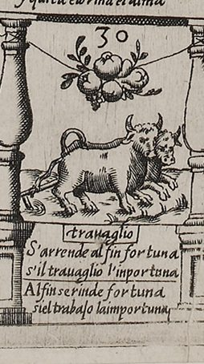
Fortune at last will yield the day
if labor will not go away.
Literally: In the end Fortune gives in, if labor pesters her.
- Spanish, on the board
- Al fin se rinde fortuna
si el trabajo la importuna - Italian, on the board
- S'arrende al fin fortuna
s'il trauaglio l'inportuna
(Fortune surrenders in the end / if labor importunes her.) - Spanish, Naples 1588 book
- Al fin se riende fortuna;
Si el trabajo la importuna. - Madrid 1587, first edition, as quoted by Lucero Sánchez (Lucero Sánchez 2016, 187–88)
- El fructo de la esperanza por el trabajo se alcanza.
The fruit to which our hopes aspire
it is by labor we acquire.
Rule. Don't stop: move on again by the number you just threw (and again, if you land on oxen once more).
What you see
Two yoked oxen pull a plow: a cord runs from the yoke back to the plow beam at the left. Above, a cluster of fruit on a cord slung between the balusters. Under trauaglio: “Fortune at last will yield the day / if labor will not go away.” The Italian says the same (board). It shows most plainly the plow of Barros's description, two oxen plowing, the share in the ground among furrow lines; on 4, 17, 34, 41 and 48 too a cord runs back from the yoke to a plow behind the oxen, and on 12, 23 and 57 there is none (our observation) (Barros 1588, p. 22).
Why it is here
Fortune gives in to labor that keeps pestering her (la importuna), as a stubborn petitioner wears down a refusal (our gloss). See “About all nine Labor squares”, below.
Historical context
Lucero quotes this couplet and that of square 48 as the board's answer to Fortune (Lucero 2019c, 828). He compares Horozco's emblem Par est fortuna labori, where Fortune's wheel is tied to an ox skull (Lucero 2019c, 827–28). He also objects that in a dice game Fortune always wins (Lucero 2019c, 829). Barros himself says elsewhere that, properly speaking, there is no Fortune, only a disposition of God's will (Barros 1588, p. 40).
Differences between the editions
- Shared by G and M; seventh of eight in G, fourth in M and C (Lucero Sánchez 2016, 187–88).
- The Naples book misprints se riende; the board has se rinde (Barros 1588, p. 26; board). The board's Italian writes l'inportuna with n, the Spanish la importuna with m (board).
What scholars say
The La Bella Donna blog sees “a bull pulling a plow with a rope” (Fleur-de-Gigi 2013b). See “About all nine Labor squares”, below.
31. A plain square
On the board: No emblem: numeral '31' and a leafy sprig on the ground strip.
32. The Well of Oblivion
Pozo del oluido · Pozzo del oblio
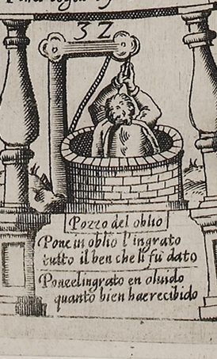
The ingrate casts, without a thought,
into oblivion all he got.
Literally: The ingrate casts into oblivion all the good he has received.
- Spanish, on the board
- Pone el ingrato en oluido
quanto bien hae recibido - Italian, on the board
- Pone in oblio l'ingrato
tutto il ben che li fù dato
(The ingrate puts into oblivion / all the good that was given him.) - Spanish, Naples 1588 book
- El ingrato echa en oluido
Quanto bien ha recebido.
Rule. Miss one round; pay one stake to each player and two to the pot, for the ropes. If someone lands on you here, you take their old square but still miss the round (the edition's decision).
On the board: Per le fune ·1· et ·2· fermesi / Para·sogas ·1· y ·2· estese — For the ropes, 1 and 2; let him stop. / For ropes, 1 and 2; let him stay.
What you see
A round brick well-head, drawn in perspective, with a winch frame and crank handle on its right. A man inside the shaft, visible from the waist up, grips the rope with both hands and tries to haul himself out (board). The numeral 32 is cut beside the winch. The heading Pozzo del oblio and the couplets are on the square's outer edge, below the picture (board). A separate two-line box in the gutter gives the rule in both languages, one of only two bilingual labels on the board (the other is the motto on the palm at 63): Per le fune ·1· et ·2· fermesi / Para·sogas ·1· y ·2· estese, “For the ropes, 1 and 2; let him stay” (board; Ciompi & Seville, giochidelloca.it).
Why it is here
Barros explains the well by the forgetfulness of the powerful. Because they take on so many affairs, they forget even those they are most obliged to, and so the Well of Oblivion stands at 32 as the place “where they throw them” (Barros 1588, pp. 28–29). A player who falls in needs “ropes of liberality” to climb out. That means winning over the people who have influence with the player's patron, so that they remind the patron of the petition. So, having sat forgotten for one round, the player pays one stake to each player and two to the pot (Barros 1588, pp. 29–30). The rules say the same: one to each player and two to the pot “for ropes”, having gone one round without playing (Barros 1588, p. 61). The board's label compresses this into “for the ropes, 1 and 2; stay” (board; Collar de Cáceres 2009, 104 n.108). The verse names the fault: “The ingrate casts, without a thought, / into oblivion all he got.”
Two cases the books do not cover. If another player lands in the Well while you are in it, the general rule moves you to the square they left; the sources we cite do not say whether you still miss the round. The edition keeps the lost round, since Barros's player gets out by paying for ropes, not, as in the goose game, by being replaced by the next to fall in (Collar de Cáceres 2009, 95) (our decision). And with the option of two throws at Fortune (51), a player whose extra throw ends in the Well loses any throw still owed (our decision).
What Barros says
Barros’s own explanation, from the Naples 1588 book (Spanish as printed; English translation by this edition). Read it in the whole book.
In the Madrid (Madrigal) edition of 1587: fol. 19r–19v.
Historical context
On goose boards the well stood at square 31 (Lucero 2020, 123 n.12; Collar de Cáceres 2009, 102 n.68). There one pays another fine and remains until another player lands on the space
(Wood 2019, 458). The version played at Philip II's court in 1585 had two wells: ay dos pozos
(“there are two wells”) (Infantes 2010, 135). Barros moved the well by one square, as Méndez Filesi had already noted (Ciompi & Seville, giochidelloca.it), and changed its rule. His player is not rescued by the next person to fall in. The player loses a round and has to pay their way out, which Collar de Cáceres finds more logical for a court (Collar de Cáceres 2009, 95). Collar also rejects Martínez Vázquez de Parga's positive reading of the goose-game well (Collar de Cáceres 2009, 104 n.109). Lucero lists the well among the squares Barros took over almost literally from the goose game (Lucero 2021, 144 n.15).
The payment reverses the Pass of Hope. There the petitioner paid for hope. Here the petitioner pays the other players, standing in for the go-betweens at court, to be remembered (our observation; Bidwell-Steiner likewise treats the other players as the courtier's peers paid to remind the patron (Bidwell-Steiner 2024, 201)). The sources we cite name no emblem-book model for the well. Rodríguez Mansilla links the forgetting to the “river of Oblivion” on which idlers drift in the engraving for La pícara Justina (1605), a parody of Barros's board (Rodríguez Mansilla 2019, 190–91).
Differences between the editions
- Verse: the book reads El ingrato echa en oluido / Quanto bien ha recebido (C; M reads the same, per Collar) (Barros 1588, p. 29; Collar de Cáceres 2009, 104 n.107). The board's Spanish is Pone el ingrato en oluido / quanto bien hae recibido (board). The Italian is Pone in oblio l'ingrato / tutto il ben che li fù dato, “the ingrate puts into oblivion all the good that was given him” (board). The fixed English translation follows the book.
- Rule: the books list the payments and the missed round (Barros 1588, pp. 29–61). The board gives only “for the ropes, 1 and 2; stay” (board).
- Prose: C reads auiendo estado oluidado vna mano; the modernized transcription of M reads habiendo estado olvidado dando una mano (Barros 1588, p. 29; Barros 1587, Madrigal ed., PDF 6). M itself reads auiendo estado oluidado una mano, as C does (C spells vna), so the transcription's dando is its own (Martínez Millán 1996, 478 n.).
- The board reads hae recibido, not recebido as the La Bella Donna blog prints it, and sogas, not sogar (so also Zollinger) (board; Fleur-de-Gigi 2013b; Ciompi & Seville, giochidelloca.it).
What scholars say
Bidwell-Steiner sees in the picture un hombre en porte de ahorcado aferrado desesperadamente a la cuerda del pozo, con el agua literalmente hasta el cuello
(Bidwell-Steiner 2024, 201)
(“a man like a hanged man, clinging desperately to the rope of the well, with the water
literally up to his neck”). For her the well doubles the cost of the patronage exchange, and she treats the other players as the courtier's peers: el cortesano caído no solamente tiene que pagar a sus iguales —es decir, a los otros jugadores— para recordar al mecenas sus grandes esfuerzos, sino que además tiene que pagar a la posta
(the fallen courtier not only has to pay his equals, that is, the other players, to remind the patron of his great efforts, but also has to pay the pot) (Bidwell-Steiner 2024, 201). Wilson, working from M, summarizes: Pay the others to remind the favourite of your existence, and pay twice what you pay them into the pool. Lose a turn.
(Wilson 1968, 368). Collar de Cáceres identifies those
thrown in the well as people the favorites forget, even the ones they are most obliged to
(Collar de Cáceres 2009, 95). The La Bella Donna blog translates the label “By
the rope. Stop on 1 and 2” (Fleur-de-Gigi 2013b). The rules show that the numbers
are payments, not squares (Barros 1588, p. 61).
The sources do not settle when the player pays: C's prose has the player pay “having been
forgotten one round”, which could mean after sitting out rather than on arrival (our observation)
33. A plain square
On the board: No emblem: a strip of ground with grass and a small leafy flowering plant (the continuous landscape strip that runs through the plain squares).
34. Labor
Trabajo · trauaglio
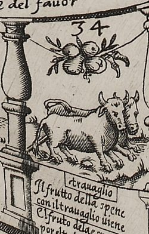
The fruit to which our hopes aspire
it is by labor we acquire.
Literally: The fruit of hope is reached through labor.
- Spanish, on the board
- El fruto dela esperança
por el trabajo se alcança - Italian, on the board
- Il frutto della spene
con il trauaglio uiene
(The fruit of hope / comes with labor.) - Spanish, Naples 1588 book
- El fruto de la esperanca;
Por el trabajo se alcanca. - Madrid 1587, first edition, as quoted by Lucero Sánchez (Lucero Sánchez 2016, 187–88)
- Aunque fortuna es mudable, al trabajo es favorable.
Though Fortune's ever changeable,
to labor she is favorable.
Rule. Don't stop: move on again by the number you just threw (and again, if you land on oxen once more).
What you see
Two yoked oxen, drawn foreshortened, walk toward the lower right, a cord running back from the yoke to a plow behind them. Above the oxen a cluster of fruit hangs on a cord slung between the balusters. Under trauaglio: “The fruit to which our hopes aspire / it is by labor we acquire.” The Italian says the same, with the old form spene for hope (board).
Why it is here
Hope pays only through labor. The verse answers the Pass of Hope at square 15, whose couplet says that no hope is good that rests on another's will (our observation). See “About all nine Labor squares”, below.
Historical context
Lucero lists “the fruit of hope” among the fruits of work stressed in the Labor couplets (Lucero Sánchez 2016, 187). See “About all nine Labor squares”, below.
Differences between the editions
- Shared by G and M; fourth in G, fifth in M and C (Lucero Sánchez 2016, 187–88). G spells fructo (Lucero Sánchez 2016, 188).
- The Naples book prints esperanca and alcanca without cedilla; the board has esperança and alcança (Barros 1588, p. 26; board).
- The board's Italian reads spene with n, as Collar prints it; the La Bella Donna transcription normalizes it to speme (board; Collar de Cáceres 2009, 92; Fleur-de-Gigi 2013b).
What scholars say
Seville quotes this verse, the fruit of hope comes through labour
(Seville 2026, 70), as the text of square 12 (Seville 2026, 70); on the board it belongs to 34 (board). See “About all nine Labor squares”, below.
35. A plain square
On the board: No emblem: ground strip with a single small flower; the wing and body of the corner swan ('Nosce te ipsum' device) overlap the outer part of the square.
36. What Will They Say?
Que diran · Che diranno
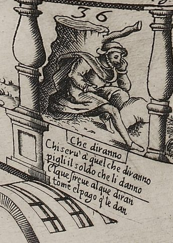
Who serves "What Will They Say?"
must take whatever they pay.
Literally: He who serves "what will they say" must take the pay they give him.
- Spanish, on the board
- El que sireue al que diran
tome el pago q[ue] le dan - Italian, on the board
- Chi seru' à quel che diranno
pigli il soldo che li danno
(Who serves "what they will say", / let him take the wage they give him.) - Spanish, Naples 1588 book
- El que sirue al que diran,
Tome el pago que le dan.
Rule. Go back to 28, the Dice, and pay one stake.
On the board: Alla sorte ·n·° 28 ·Paga — To the Throw, no. 28. Pay.
What you see
A man in a cap and cloak sits on the ground with his cheek resting on his hand, a pose of melancholy. Beside him stands a large lopped tree stump with one cut-off branch (board). The heading Che diranno and the couplets are in a box outside the square's outer edge. The Spanish reads, in English: “Who serves 'What Will They Say?' / must take whatever they pay” (board). A box along the inner edge carries the rule Alla sorte ·n·° 28 ·Paga, “To the Dice, no. 28. Pay” (board).
Why it is here
Barros's petitioner has pressed on through Labor until vexations and disillusions bring them to the fear of “what will they say”. The fear comes from seeing their ruin. Their hopes no longer have the shape they first gave them, and their money is running out before they can finish what they began. They would go home, but they dread what people will say about returning empty-handed after staking so much. The fear keeps them undecided until they resolve to shake it off and do the best they can. The verse is there to push them to that decision (Barros 1588, pp. 30–31). The petitioner then goes back to the Dice at 28 to try another suerte, another throw or way of pressing their petition (Barros 1588, p. 31).
The rules send the player from 36 back to 28 (Barros 1588, p. 61). The board adds “Pay” (board). That fits the closing clause of the rules, a stake paid “for each time he goes back, of whatever kind it may be” (Barros 1588, pp. 62–63). In the Naples text the clause follows the overshoot rule, so it may cover only the rebound from 63. Madrigal's worked example, where the displaced Pedro pays porque volvió atrás
(because he went back) (Barros 1587, Madrigal ed., PDF 12), suggests that it covers every move back; Zollinger reads it that way in his summary of the general rules (Ciompi & Seville, giochidelloca.it). The edition charges a stake for every move back except a move onto Poverty (60) or from Poverty to 53, which it reads M as exempting (our reading; see Poverty and the Dice at 53).
What Barros says
Barros’s own explanation, from the Naples 1588 book (Spanish as printed; English translation by this edition). Read it in the whole book.
Historical context
Lucero shows how long the idea stayed with Barros. More than ten years later his Proverbios morales (1598) still name the fear as a key to court life: «Ni faltará a quien condene / el miedo de qué dirán»
(“nor will there be lacking those who condemn / the fear of what they'll say”) (Lucero 2021, 143). Anti-court writers had long said that a person could not leave the court without the success they came for. Lucero cites Castillejo's Aula de cortesanos and Sebastián de Covarrubias's emblem of the courtier who never leaves, Tanta est fallatia tecti (Lucero 2021, 143). In his reading the square stands for una inmovilidad que ata al hombre no ya al ocio, sino a la frustración del logro no obtenido en la Corte
(an immobility that binds a man not to idleness but to the frustration of what he failed to win at court) (Lucero Sánchez 2019, 163).
The board pictures a posture familiar from images of melancholy, but Collar de Cáceres denies that it means melancholy: La imagen del hombre no representa en suma la melancolía, saturniano humor del temperamento creativo, sino la falta de actividad por un paralizador temor a la opinión ajena.
(In short, the man's image does not represent melancholy, the Saturnine humor of the creative temperament, but lack of activity from a paralyzing fear of others' opinion.) (Collar de Cáceres 2009, 95). Barros's text does not describe this picture at all (Lucero 2019a, 201 n.9). The sources we cite do not comment on the stump.
In the classic layout 36 is a goose square. Lucero notes that, with What Will They Say? on 36, the Labor squares could not have been evenly spaced in the goose game's manner (Lucero 2020, 126).
Differences between the editions
- Rule: the books send the player to 28 and say nothing of a payment at this point (Barros 1588, p. 61; Barros 1587, Madrigal ed., PDF 12). The board adds Paga (board).
- Verse: the board has sireue (sic) for the book's sirue (board; Barros 1588, p. 31). The Italian is Chi seru' à quel che diranno / pigli il soldo che li danno, “who serves 'what they will say', let him take the pay they give him” (board). Soldo is also a soldier's wage (our observation).
- Prose: C misprints le na faltando for M's le va faltando (Barros 1588, p. 30; Barros 1587, Madrigal ed., PDF 6).
- G has y para que ansí haga where M has y para que así lo haga and C y para que assi lo haga (Lucero Sánchez 2016, 186; Barros 1588, p. 31); no other G reading for this square is recorded in the sources we cite.
What scholars say
Bidwell-Steiner reads the square through the honor-and-shame code of Mediterranean societies, drawing on the anthropologists Peristiany and Pitt-Rivers. The work, she argues, makes all effort worthless without society's approval, and so este pasaje contradice las interpretaciones que sitúan el texto en una vertiente neoestoica
(“this passage contradicts the readings that place the text in a Neostoic line”) (Bidwell-Steiner 2024, 201). Lucero stresses the player's dilemma: they cannot go back, and the court becomes a labyrinth (Lucero 2021, 143). Collar de Cáceres, as above, rejects a reading through melancholy (Collar de Cáceres 2009, 95). Wilson calls the square “Fear of censure” (Wilson 1968, 368). The La Bella Donna blog describes “a man sitting next to a chopped down tree” (Fleur-de-Gigi 2013b).
37. A plain square
On the board: No emblem: ground strip with grass and a small leafy sprig.
38. A plain square
On the board: No emblem: ground strip with grass and a single flowering plant.
39. False Friendship
Falsa amistad · Falsa amicitia
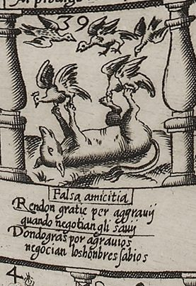
The wise, when wronged, give thanks instead,
and so their cases go ahead.
Literally: Giving thanks for injuries, wise men press their cases.
- Spanish, on the board
- Dondo gra[cia]s por agrauios
negocian los honbres sabios - Italian, on the board
- Rendon gratie per aggrauij
quando negotian gli sauij
(The wise give thanks for injuries / when they press their cases.) - Spanish, Naples 1588 book
- Dando gracias por agrauios;
Negocian los hombres sabios.
Rule. Go back to 7, the Prodigal, and pay one stake.
On the board: Al prodigo ·n·° 7 ·Paga — To the Prodigal, no. 7. Pay.
What you see
A fox lies on its back with its legs in the air and its tail curled under it, playing dead. Five birds have come to it: two have landed on its raised paws, and three more fly down from above, near the engraved number 39 (board). The rule label above the square, in Italian only, reads “Al prodigo ·n·° 7 ·Paga” (“To the Prodigal, no. 7. Pay”) (board). Below the square are the heading “Falsa amicitia” and the verse in Italian and Spanish; in English: “The wise, when wronged, give thanks instead, / and so their cases go ahead.” (board).
Why it is here
By square 39 the petitioner has passed the Dice at 28 and now meets false friends. Barros likens them to the fox that lies as if dead until the birds come down to peck at her and she can seize them: such friends turn meek and pliable, promise what can never be done, and keep it up until they have got whatever they can (Barros 1588, pp. 32–33). His advice is not to break with them. The petitioner should hide what they know, avoid turning friends into open enemies and look content with the false friends' goodwill, which is what the verse says: thank them for the injuries (Barros 1588, p. 33).
The penalty sends you back to 7, the Prodigal, because Barros's remedy is to start spending again, lavishly, even on the people you trusted least; at first everyone seems suspect, he says, until worse ones turn up (Barros 1588, pp. 33–34). Square 7 shows a pelican giving its entrails, which Barros glosses as its estate, to cats instead of its young (Barros 1588, p. 34). The “Paga” on the board means paying one stake into the pot (Collar de Cáceres 2009, 103).
What Barros says
Barros’s own explanation, from the Naples 1588 book (Spanish as printed; English translation by this edition). Read it in the whole book.
Historical context
The fox that feigns death to catch birds is an old animal fable. Bidwell-Steiner traces it to the Physiologus and to the Spanish Libro de los gatos (exemplum 50) (Bidwell-Steiner 2024, 202); Lucero, following Hernández, calls the tale menos común de lo que se cree
(Lucero 2021, 142) (less common than is believed) and finds its antecedent in the Physiologus (Lucero 2021, 142 n.9).
Emblem books used false friendship as a warning. Joannes Sambucus's “Fictus Amicus” (Emblemata, Antwerp 1564) shows two men shaking hands, one of them wearing a fox skin; much later, an eighteenth-century expanded edition of Ripa added a “Falsa amicizia” by the abate Cesare Orlandi, with a hyena (Collar dates it 1716) (Collar de Cáceres 2009, 96–97, 104). Hernando de Soto, a close friend of Barros, has an emblem “Amicus infidus”, and Antonio de Guevara, as Lucero quotes him, held that La cosa más necesaria de que el cortesano tiene necesidad es tener en la corte un fiel y verdadero amigo, no para que le lisonjee, sino para que le reprenda
(the thing a courtier most needs is to have at court a faithful and true friend, not to flatter him but to reprove him) (Lucero 2021, 142 n.8). Lucero calls false friendship an anti-court commonplace (Lucero 2021, 142).
Barros also wrote on friendship himself. His short Discurso y difinición del privado, kept among Mateo Vázquez's papers, paraphrases Aristotle's Nicomachean Ethics on friendship (Lucero says “capítulo 8”; the subject is that of book VIII) and argues that the favor a lesser person wins from a greater is almost the same thing as friendship between equals (Lucero 2019b, 40, 42). Collar de Cáceres calls this view cynical (Collar de Cáceres 2009, 84). Martínez Millán describes dissimulation as the basic rule of court life, citing Guevara among others (Martínez Millán 1996, 477–478). Half a century later Saavedra Fajardo still accepted dissimulation in a ruler, but through the arts of the serpent, not those of the fox (Lucero 2021, 142).
Differences between the editions
Board: the Spanish verse is engraved “Dondo gra[cia]s por agrauios / negocian los honbres sabios”, with “Dondo” a slip for “Dando” and “gras” carrying an abbreviation stroke (board). Collar also reads “Dondo (sic)” (Collar de Cáceres 2009, 95); Zollinger, as reproduced on giochidelloca.it, prints “Donda” (Ciompi & Seville, giochidelloca.it). The Italian verse, “Rendon gratie per aggrauij / quando negotian gli sauij”, says that the wise give thanks for injuries when they press their cases (board).
Books: C prints “Dando gracias por agrauios; / Negocian los hombres sabios.” (Barros 1588, p. 33), and M has the same couplet (Barros 1587, Madrigal ed., PDF 7; Wilson 1968, 370). In the prose, C reads “hasta cojer lo que pueden” and “hasta que se topan otros peores” where the modernized transcription of M reads “puedan” and “se topan con otros peores” (Barros 1588, pp. 33–34; Barros 1587, Madrigal ed., PDF 7). Lucero gives M itself as “se topan otros peores”, so the con is the transcription's (Lucero Sánchez 2016, 185).
Rule: the board adds “Paga”; the rules at the end of C say only that from 39 one goes back to the Prodigal, at 7 (Barros 1588, p. 61; board).
What scholars say
Collar de Cáceres takes the fox to be the petitioner: La zorra es el Engaño, pero no el ajeno sino el que ha de ejercer el propio aspirante para el logro de aquello que pretende
(Collar de Cáceres 2009, 96) (the fox is Deceit, not other people's but the deceit the petitioner himself must practice to get what he seeks). He sees this as the reverse of emblem books that warn against false friends (Collar de Cáceres 2009, 96).
Lucero allows two readings: La casa prima facie advierte sobre los demás, pero se puede leer en sentido contrario: se trata de emplear medios discretos, no prudentes, como el disimulo que se ha de tener con los falsos amigos
(Lucero 2021, 142) (at first sight the square warns about others, but it can be read the other way round: the point is to use discreet, not prudent, means, such as the dissimulation one must practice with false friends), incluso convertirse en la raposa, si es menester, ser cazador y no presa
(Lucero 2021, 142) (even becoming the fox, if need be: hunter, not prey). He links the square to Barros's two decades at court (Lucero 2021, 142).
Bidwell-Steiner calls the animal a vixen and counts her among the board's three female figures, all negative or ambiguous (with Flattery's siren and Fortune) (Bidwell-Steiner 2024, 202); the board also has a fourth, Occasion in the top right corner (our observation) (board). Wilson describes the fox as shamming sleep (Wilson 1968, 368), whereas Barros's text has it playing dead (Barros 1588, p. 32). The La Bella Donna blog took it for a wolf (Fleur-de-Gigi 2013b).
40. A plain square
On the board: No emblem: ground strip with grass and a flowering plant with three blooms. The cord from which square 41's fruit cluster hangs is tied to the top of the 40/41 baluster.
41. Labor
Trabajo · trauaglio
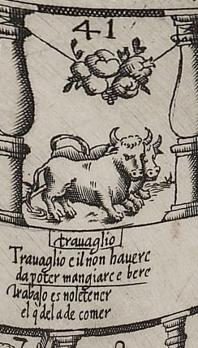
To have no work is work indeed
for one who works to meet his need.
Literally: It is hardship not to have it [work], for one who must eat by it.
- Spanish, on the board
- Trabajo es no le tener
el q[ue] del a de comer - Italian, on the board
- Trauaglio e il non hauere
da poter mangiare e bere
(Hardship is not having [the means] / to be able to eat and drink.) - Spanish, Naples 1588 book
- Trabajo no le tener;
El que del ha de comer. - Spanish, Madrid 1587 (Madrigal), in Ciompi and Seville’s modernized transcription
- Trabajo es no le tener el que de él ha de comer.
- Madrid 1587, first edition, as quoted by Lucero Sánchez (Lucero Sánchez 2016, 187–88); this couplet only in the first edition
- Trabajando halla quietud quien de fuerza hace virtud.
Who makes a virtue of his need
by working finds his rest indeed.
Rule. Don't stop: move on again by the number you just threw (and again, if you land on oxen once more).
What you see
Two yoked oxen walk up toward square 42, a cord running back from the yoke to a plow behind them. Above them a cluster of fruit hangs on a cord slung between the balusters. Under trauaglio: “To have no work is work indeed / for one who works to meet his need.” The Italian gives a plainer sense: it is hardship not to have the means to eat and drink (our gloss) (board).
Why it is here
The verse plays on the two meanings of trabajo: for someone who lives by their work, having no work is the real hardship. It echoes the book's motto that no son of Adam eats without labor (Barros 1588, p. 19). The Italian loses the pun (our observation). See “About all nine Labor squares”, below.
In the Madrid (Madrigal) edition of 1587: fol. 17r.
Historical context
Added in Madrigal's edition (Lucero Sánchez 2016, 187–88). In the classic Goose game 41 is a goose square, like 23 (our observation, from Collar's list of goose squares) (Collar de Cáceres 2009, 102). See “About all nine Labor squares”, below.
Differences between the editions
- Not in G; added in M and kept in C (Lucero Sánchez 2016, 187–88).
- The Naples book, as the page image shows, prints “Trabajo no le tener” without es; the board and M have “Trabajo es no le tener”, which the sense needs (Barros 1588, p. 26; board; Lucero Sánchez 2016, 188). The modernized text on giochidelloca.it prints this couplet twice in its list (Ciompi & Seville, giochidelloca.it).
- The board has no le tener, as Collar reads it; the La Bella Donna blog's and giochidelloca.it's no lo tener is a misreading (board; Collar de Cáceres 2009, 92; Fleur-de-Gigi 2013b; Ciompi & Seville, giochidelloca.it).
What scholars say
See “About all nine Labor squares”, below.
42. A plain square
On the board: No emblem: ground strip with grass and a curling leafy plant along the outer edge.
43. The Change of Ministers
Mudança de ministros · Mutanza d'ministri
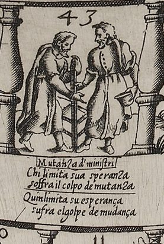
Who narrows all his hope to one
must bear the blow when change has come.
Literally: Whoever limits his hope, let him suffer the blow of change.
- Spanish, on the board
- Quin limita su esperança
sufra el golpe de mudança - Italian, on the board
- Chi limita sua speranza
soffra il colpo de mutanza
(Who limits his hope, / let him suffer the blow of change.) - Spanish, Naples 1588 book
- Quien limita su esperança
Sufra el golpe de mudança.
Rule. Go back to 10, Flattery, and pay one stake.
On the board: Alla adulatione·n·° 10 ·Paga — To Flattery, no. 10. Pay.
What you see
Two bearded men in long gowns stand face to face. The man on the left, in a cloak, grips a tall staff that stands upright between them; the man on the right, in a buttoned gown, reaches his right hand toward it and holds his hat in his left (our observation) (board). Between their legs, behind or joined to the staff, is a frame with three or four cross-bars running to a thinner second upright: a chair seen from the side, or a ladder whose rail is the staff; the engraving does not settle which (our observation) (board). Collar de Cáceres reads the staff as a baton of command being handed over (Collar de Cáceres 2009, 96). The rule label along the inner edge, in Italian only, reads “Alla adulatione·n·° 10 ·Paga” (“To Flattery, no. 10. Pay”) (board). Outside the square are the heading “Mutanza d'ministri” and the verse in Italian and Spanish; in English: “Who narrows all his hope to one / must bear the blow when change has come.” (board).
Why it is here
Here the petitioner has spent all their strength winning over someone important, the minister who handles their case and on whom they were counting, and then that minister is moved, or changes (the Spanish may also mean that the petitioner moves on); left alone and without a welcome, they can only say the verse (Barros 1588, pp. 35–36). The rule sends the petitioner back to 10, Flattery, to bow to whoever now holds the post (Barros 1588, p. 36).
Lucero uses this square to show that Barros kept some relative positions for the story's sake: quien padece la Mudanza de Ministros debe comenzar el proceso de la Adulación de otro valedor que lo sustituya
(Lucero 2020, 125) (whoever suffers the Change of Ministers must begin the process of flattering another patron to replace the first), hence the move from 43 back to 10; Lo contrario carecería de sentido
(the opposite would make no sense) (Lucero 2020, 125). He reads the verse as a reproach: se reprocha al solicitante haberse atenido a un solo valedor
(Lucero 2021, 145) (the petitioner is blamed for relying on a single patron).
What Barros says
Barros’s own explanation, from the Naples 1588 book (Spanish as printed; English translation by this edition). Read it in the whole book.
Historical context
Barros dedicated the book to Mateo Vázquez de Leca, Philip II's secretary (Barros 1588, sig. A1r), who had become secretary in 1573 (Wilson 1968, 365, 367). Martínez Millán places Barros in the “castellanista” faction that formed round Vázquez after Cardinal Diego de Espinosa's death in 1572. It was opposed to a Rome-leaning “papista” group that included Don Juan of Austria, the secretary Antonio Pérez and the Princess of Éboli (Martínez Millán 1996, 463–464).
That rivalry came to a head with the murder in Madrid of Don Juan's envoy, and later with the fall of Antonio Pérez (Bidwell-Steiner 2024, 210). The sources we cite do not date these events, and give no full account of who planned the murder. Bidwell-Steiner writes that the plot was hatched by castellanistas led by Vázquez, and follows Lucero in reading Barros's book as part of that contest (Bidwell-Steiner 2024, 210); Wilson says more cautiously that Vázquez probably helped to bring about the disgrace of the notorious Antonio Pérez
(Wilson 1968, 365). On Wilson's account, then, Barros's dedicatee was one of those who gained by the most spectacular change of ministers of the reign (our observation).
By 1587 Vázquez's own star was falling. Lucero dates his decline to about 1585, made worse by the creation of the Junta de Noche (Lucero 2019b, 37). Martínez Millán says the faction peaked after 1578, was strengthened by the union with Portugal in 1580, declined from 1586 to 1590, and lost most of its members to death in the early 1590s (Martínez Millán 1996, 464). Vázquez died in 1591 (Lucero 2019d, 109 n. 21). Barros later saw another change of this kind at first hand: his patron García de Loaysa was stripped of his court offices by Philip III within days of the new reign in 1598, a fall Lucero links to Loaysa's earlier failed attempt to keep Lerma from the prince (Lucero 2019d, 112).
Biagioli describes the same pattern at the papal court, where each new pope brought his own nephews and clients to power (Biagioli 1993, 316). He quotes Panfilo Persico's remark that at Rome everybody turns himself toward the rising sun, leaving the setting one
(Biagioli 1993, 320). Biagioli also argues that Major leaps in social status could not be achieved by compounding the patronage of many small patrons but could result only from the patronage of a single great patron
(Biagioli 1993, 29), which is exactly the dependence Barros's verse warns against (our observation).
Differences between the editions
Board: the Spanish verse is engraved “Quin limita su esperança / sufra el golpe de mudança”, with “Quin” a slip for “Quien”; the Italian reads “Chi limita sua speranza / soffra il colpo de mutanza” (board). Collar prints “di mutanza” and “Quien”, and Zollinger, as reproduced on giochidelloca.it, “Che limita su speranza” (board; Collar de Cáceres 2009, 96; Ciompi & Seville, giochidelloca.it). Books: C prints “Quien limita su esperapca / Sufra el golpe de mudança”, a misprint (Barros 1588, p. 36); M reads “Quien limita su esperanza sufra el golpe de mudanza” (Barros 1587, Madrigal ed., PDF 7). Lucero records that G gives a square number as the numeral “43” where M spells out “cuarenta y tres casas” (Lucero Sánchez 2016, 186); he does not say where, but in M that phrase occurs only in this passage (our observation). Rule: the board adds “Paga”; the rules at the end of C say only that from 43 one goes back to Flattery, at 10 (Barros 1588, p. 61; board). Numbering: Biagioli, working from Geoffrey Parker, calls square 43 “Your patron dies” (Biagioli 1993, 35); in the 1588 book and on the board the patron dies at 46, and 43 is the Change of Ministers (Barros 1588, pp. 35–38; board).
What scholars say
Collar de Cáceres describes the image as un hombre que entrega un bastón, simbolizando el relevo en el mando
(Collar de Cáceres 2009, 96) (a man handing over a staff, standing for the change of command) and calls the square a particularly serious setback (Collar de Cáceres 2009, 96). Lucero pairs it with the Death of the Patron as the board's two critical moments, both of which punish reliance on one patron (Lucero 2021, 145). Seville glosses the move to 10: the courtier needs to flatter the incoming minister
(Seville 2026, 73).
The engraving leaves open who is who. The man holding his hat may be the petitioner making a bow to the new holder of the staff, as Barros's rule requires, or the outgoing minister (our observation). The La Bella Donna blog calls the scene “two men meeting” (Fleur-de-Gigi 2013b).
44. A plain square
On the board: No emblem: ground strip with grass and a flowering plant.
45. A plain square
On the board: No emblem: ground strip with grass and a small flowering plant.
46. The Death of the Patron
Muerte del valedor · Morte de lo ualitore
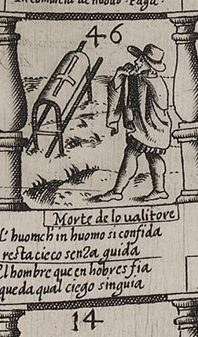
Who trusts in men is left, you'll find,
without a guide, like one gone blind.
Literally: The man who trusts in men is left like a blind man without a guide.
- Spanish, on the board
- El hombre que en ho[m]bres fia
queda qual ciego sin guia - Italian, on the board
- L'huom ch'in huomo si confida
resta cieco senza guida
(The man who trusts in man / remains blind without a guide.) - Spanish, Naples 1588 book
- El hombre que en hombres fia,
Queda qual ciego sin guia.
Rule. Your patron has died: go back to the start and begin again, paying one stake.
On the board: In camincia de nuouo ·Paga· — He begins anew. Pay.
What you see
A bearded man in a broad-brimmed hat and a short cloak faces a funeral bier and walks toward it, holding the edge of his cloak to his face. The bier is a coffin-shaped frame covered with a pall marked with a cross, propped at a slant on its two carrying poles (our observation of the details) (board). Collar de Cáceres identifies the man as the blind man of the verse (Collar de Cáceres 2009, 96). The engraving shows him with no stick or guide (our observation). The rule label along the inner edge, in Italian only, reads “In camincia de nuouo ·Paga·” (“Begin anew. Pay”) (board). Outside the square are the heading “Morte de lo ualitore” and the verse in Italian and Spanish; in English: “Who trusts in men is left, you'll find, / without a guide, like one gone blind.” (board).
Why it is here
Just when the petitioner expected to reach the goal of their desire, the person who most favored them dies. From square 46 the petitioner goes back in tears to begin the game again and look for another patron's favor (Barros 1588, p. 38). The verse explains why: whoever puts their trust in people is left like someone blind with no one to lead them (Barros 1588, p. 38). The cloak held to the man's face may show those tears (our observation).
This is the harshest square on the board: everything gained is lost. Collar de Cáceres writes Pero el mayor revés está en la Muerte del Valedor
(Collar de Cáceres 2009, 96) (but the greatest setback is the Death of the Patron). Lucero stresses that death on this square has only a literal meaning: Aquí la muerte solo admite una interpretación recta, no simbólica, como en el juego de la oca.
(Lucero 2021, 145) (here death allows only a literal reading, not a symbolic one, as in the Game of the Goose).
Barros's own career followed this square. His patron Mateo Vázquez died in 1591 (Lucero 2019d, 109 n. 21). His next patron, García de Loaysa, archbishop of Toledo and dedicatee of the Proverbios morales, was sidelined in 1598 and died in February 1599. Lucero reads this as Barros's own Death of the Patron, which devuelve a Barros a la casilla de salida de su tablero de la Filosofía cortesana
(sends Barros back to the starting square of his board) (Lucero 2019d, 112, 120).
What Barros says
Barros’s own explanation, from the Naples 1588 book (Spanish as printed; English translation by this edition). Read it in the whole book.
Historical context
In the Game of the Goose that Barros adapted, square 58 is Death, which sends the player back to the start (Collar de Cáceres 2009, 96, 102; Seville 2026, 73). Lucero explains Death's fixed place at 58 as a remedy for a flaw in the goose game's numbers. He argues that Barros, by turning Death into the death of a patron and moving it to 46, dropped that numerical logic without even raising the problem (Lucero 2020, 123–124).
Biagioli's study of Galileo shows how real this square was. He writes that deaths of great patrons—especially of monarchs like popes, who were not members of a hereditary dynasty—were perceived by contemporaries as major patronage crises.
(Biagioli 1993, 34) He describes clients' careers as paths broken by such crises (Biagioli 1993, 30). After Cosimo II died in 1621, for instance, Galileo could not be sure that the new ruler would confirm his post (Biagioli 1993, 279), and the mathematician Federico Commandino twice lost papal patronage when his pope died (Biagioli 1993, 318). Biagioli cites Barros's game, through Geoffrey Parker, as proof that the pattern was well known: those who landed on square 43 ("Your patron dies") had to go back to the start.
(Biagioli 1993, 35)
Collar found no model for this emblem in the emblem books and takes it to be Barros's own invention. He notes that a bier appears on another Italian board, the Gioco del Barone (square 55) (Collar de Cáceres 2009, 96, 104), which Lucero dates to about 1620, after its probable engraver, Jacques Callot, though some place it in the 1580s (Lucero Sánchez 2020, 44). The verse recalls Jeremiah 17:5, which curses the man who trusts in man (our observation; none of the sources we cite makes this link).
Differences between the editions
Board: the rule is engraved “In camincia de nuouo ·Paga·” (“camincia”, with a, in both photographs), while Collar, Zollinger and the La Bella Donna blog all print “Incomincia” (board; Collar de Cáceres 2009, 96; Ciompi & Seville, giochidelloca.it; Fleur-de-Gigi 2013b). The Italian verse is engraved “L'huom ch'in huomo si confida / resta cieco senza guida” (Collar “chi in”, the blog “cieca”); the Spanish reads “El hombre que en ho[m]bres fia / queda qual ciego sin guia” (board). Books: C has the same Spanish couplet as the board (Barros 1588, p. 38), and so does M (Barros 1587, Madrigal ed., PDF 7). G misprints the square's name as “Muerte del velador”, which M corrects to “Valedor” (Lucero Sánchez 2016, 183). Lucero lists the petitioner's return “with tears” as an M addition (Lucero Sánchez 2016, 184); C keeps it (Barros 1588, p. 38). Rule: the board adds “Paga”; the rules at the end of C say only that from 46 one begins the game again (Barros 1588, p. 62; board). Numbering: Biagioli, working from Parker, puts the patron's death at square 43 (Biagioli 1993, 35). Barros's text and the board both give 46 (Barros 1588, pp. 38–62; board).
What scholars say
Collar de Cáceres sees the square as the petitioner's greatest reverse and a sign of Barros's disillusion: all the work done so far has been for nothing (Collar de Cáceres 2009, 96). Lucero takes it literally and pairs it with the Change of Ministers, since in both the petitioner is blamed for relying on one patron (Lucero 2021, 145). Seville compares the rule to the Goose game's death square (Seville 2026, 73). Méndez Filesi, writing before the board was found, made the same comparison with the Goose game's Death at 58 (Ciompi & Seville, giochidelloca.it). Biagioli treats the square as the emblem of a patronage crisis, though his square number differs from Barros's (Biagioli 1993, 35). The La Bella Donna blog renders valedor as “helper” and the image as “a man at a grave” (Fleur-de-Gigi 2013b).
47. A plain square
On the board: No emblem: ground strip with grass and a tall leafy plant along the outer edge.
48. Labor
Trabajo · trauaglio
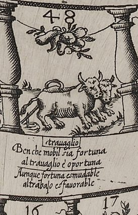
Though Fortune's ever changeable,
to labor she is favorable.
Literally: Although Fortune is changeable, she is favorable to labor.
- Spanish, on the board
- Aunque fortuna es mudable
al trabajo es fauorable - Italian, on the board
- Ben che mobil sia fortuna
al trauaglio è oportuna
(Although Fortune be changeable, / to labor she is opportune.) - Spanish, Naples 1588 book
- Aunque fortuna es mudable;
Al trabajo es fauorable. - Madrid 1587, first edition, as quoted by Lucero Sánchez (Lucero Sánchez 2016, 187–88)
- Al fin se rinde fortuna si el trabajo la importuna.
Fortune at last will yield the day
if labor will not go away.
Rule. Don't stop: move on again by the number you just threw (and again, if you land on oxen once more).
What you see
Two yoked oxen face the upper left, toward square 49, a cord running back from the yoke to a plow behind them. Above them a cluster of fruit hangs on a cord slung between the balusters. Under trauaglio: “Though Fortune's ever changeable, / to labor she is favorable.” The Italian says the same: though Fortune be fickle, she is favorable to labor (our gloss) (board).
Why it is here
Fortune is changeable but favors those who work. The House of Fortune itself is three squares on, at 51 (our observation). See “About all nine Labor squares”, below.
Historical context
Lucero quotes this couplet with that of square 30 (Lucero 2019c, 828). Martínez Millán thought Barros the first to treat fortune “scientifically”, as something with a logic a petitioner could learn (Martínez Millán 1996, 468–69). Lucero, for his part, stresses that the dice always decide (Lucero 2019c, 829). See “About all nine Labor squares”, below.
Differences between the editions
- Shared by G and M; fifth in G, seventh in M and C (Lucero Sánchez 2016, 187–88).
- The board and the Naples book agree (“fauorable”); Collar prints “favorable” (board; Barros 1588, p. 26; Collar de Cáceres 2009, 92).
What scholars say
See “About all nine Labor squares”, below.
49. A plain square
On the board: No emblem: ground strip with grass and leafy plants along the outer edge.
50. A plain square
On the board: No emblem: ground strip with grass and a small flowering plant.
51. The House of Fortune
Casa de la fortuna · Casa della fortuna
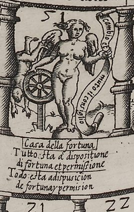
All things are at the disposition
of Fortune and of God's permission.
Literally: Everything is at the disposal of Fortune and [divine] permission.
- Spanish, on the board
- Todo :esta a dispusicion
de fortuna y permision - Italian, on the board
- Tutto :sta à dispositione
di fortuna et permissione
(All stands at the disposition / of Fortune and permission.) - Spanish, Naples 1588 book
- Todo esta a dispusicion,
De fortuna, y permission.
Rule. Fortune smiles: throw the dice again (you play twice).
On the board: Giuoca ·2· uolte · — Plays twice.
What you see
Fortune stands with one foot on a sphere: a nude young woman with wings and a single face (board; Collar de Cáceres 2009, 96). With her left hand she holds a long banderole that curls down to the ground, inscribed in Italian “cambio et / muto il consiglio” (“I change and alter counsel”) (board). Her right hand rests on the rim of a spoked wheel mounted on a post, and behind the wheel a man tumbles head-first with his arms hanging down (our observation of the hand) (board). A tuft of hair seems to blow up from the crown of her head, beside the engraved number 51 (our observation) (board). Below are the heading “Casa della fortuna” and the verse in Italian and Spanish; in English: “All things are at the disposition / of Fortune and of God's permission.” (board). The rule label reads “Giuoca ·2· uolte ·” (“Play twice”) (board).
Why it is here
After adverse fortune comes good fortune, Barros writes: no one is so unlucky that she never comes to their door to help them, if they know how to seize the moment (Barros 1588, pp. 38–39). Her motto in the book, “I exchange and alter counsel”, means that she disposes our plans and guides our actions, deciding whether we make our efforts or leave them undone. It follows, he says, that diligence is not the mother of good luck, as people claim, but her daughter, nursed at her breast (Barros 1588, pp. 39–40). Then he corrects himself: properly speaking there is no Fortune, only a disposition of the will of God, whose purpose is to teach us to bear our troubles with patience (Barros 1588, p. 40). Hence the verse joins Fortune and (divine) permission.
The player who lands here plays twice, like a lucky person, to test whether they really are lucky, since too much luck often harms someone who does not know how to use it. From 51, Barros says, some throws can win the pot and others lose it or put it off (Barros 1588, p. 41). In his list of the petitioner's hazards he names “fortune ill used” (Barros 1588, p. 18). Lucero thinks Fortune sits at 51 so that a double six on the extra throw can reach 63 (Lucero 2020, 125).
What Barros says
Barros’s own explanation, from the Naples 1588 book (Spanish as printed; English translation by this edition). Read it in the whole book.
In the Madrid (Madrigal) edition of 1587: fol. 37r, fol. 38v–39r, fol. 39r–39v.
Historical context
The board's Fortune combines two traditions, according to Collar de Cáceres: the medieval wheel of Fortune that lifts some and throws down others, as in Gregor Reisch's Margarita philosophica (1503), and the Renaissance nude Fortune standing on a sphere, often winged and often merged with Occasion (Collar de Cáceres 2009, 96). Collar and Lucero also see the whole board's spiral of balusters as an unrolled wheel of Fortune (Collar de Cáceres 2009, 88, 90; Lucero 2021, 147).
The Madrigal edition (M) added a separate woodcut of Fortune, with a long description; Collar de Cáceres calls it the only image in the book's text, though M's title page also carries Vázquez's coat of arms (Lucero 2019b, 38; Collar de Cáceres 2009, 90). The oval woodcut carries the motto NO SERIA FORTVNA SI FVESE SIEMPRE VNA (“Were she always just the same, / she would not deserve the name.”) round its edge (Wilson 1968, 366). Collar de Cáceres sums up the figure: con dos caras, joven, desnuda y alada, de pie sobre una esfera, con una palma y un yugo (victoria y derrota) y una sonaja y una espada (alegría y rigor, también la muerte) en sus manos, y con un mechón en la frente
(with two faces, young, nude and winged, standing on a sphere, with a palm and a yoke, victory and defeat, and a rattle and a sword, joy and rigor and also death, in her hands, and with a forelock) (Collar de Cáceres 2009, 90; Wilson 1968, 368–369). Barros explains each element. The globe is the universe she rules; she is nude because she acts without consideration; her arms hold up the weak and throw down the proud; she is young because her strength never fails; her wings let her fly from her favorites; her two faces are kind to some and harsh to others. The palm and yoke show that yesterday's victor may be today's slave, and the sonaja (a jingling rattle) and the sword show death in the midst of pleasure (Barros 1588, pp. 55–59; Barros 1587, Madrigal ed., PDF 10–11). Wilson found many of these attributes in the mythographers Pérez de Moya and Baltasar de Vitoria, but the yoke and the timbrel, however, seem unusual
(Wilson 1968, 369). For Collar, Esta imagen de la Fortuna (fig. 11) con dos rostros es no obstante más propia del siglo XV
(Collar de Cáceres 2009, 90) (this two-faced image is more typical of the fifteenth century), as in Hans Burgkmair's woodcut of before 1515, used as the frontispiece of Pistorius's Dialogus de Fato et Fortuna (Augsburg 1544) (Collar de Cáceres 2009, 90). Barros owned a Castilian version of Girolamo Garimberto's book of the marvels of changeable Fortune, the Theatro de varios y marauillosos acontecimientos de la mudable Fortuna (Salamanca 1572), and a Petrarch that Dadson thought might well be the Remedies against Both Kinds of Fortune (Collar de Cáceres 2009, 90).
Fortune and Providence: Martínez Millán reads Barros's correction (no Fortune, only God's will) as a Counter-Reformation Christianizing of the pagan goddess (Martínez Millán 1996, 480). Lucero calls it a resignation between Senecan and Christian, and recalls, after Badillo, Christian writers' fear that Fortune might displace Providence (Lucero 2021, 147). Biagioli notes that Fortuna and the dangers of court intrigues had been privileged tropes of court treatises since the fifteenth century
(Biagioli 1993, 324).
Occasion: the board's top-right corner shows Occasion, a half-reclining woman, bare to the waist, with a single lock of hair and the motto “No me pierdas” (“Don't lose me.”) (board); Collar de Cáceres describes her as seated and clothed (Collar de Cáceres 2009, 93). Barros describes her as a woman with a handful of hair on her forehead and a bald head (Barros 1588, p. 52). In M he gives the forelock to Fortune too, as a warning to seize the chance before she turns and shows her bald head (Barros 1587, Madrigal ed., PDF 10). Collar traces the merger of the two figures to Alciato's emblem “In occasionem”, with its razor, and to Panofsky's account of their fusion (Collar de Cáceres 2009, 93). Lucero observes that Fortuna y Ocasión truecan sus atributos de antiguo
(Lucero 2021, 146) (Fortune and Occasion have long exchanged attributes). A seventeenth-century poem quoted by Biagioli shows clients rushing to Rome after a papal election to try to seize the waving forelock
(Biagioli 1993, 34) of the one who flees (Biagioli 1993, 34–35).
Differences between the editions
Banner: the board has the Italian “cambio et muto il consiglio” (board). Collar misreads it as “Cambio e moto” (Collar de Cáceres 2009, 96). The book gives the words in Spanish, as “a letter in her hand”: “Yo trueco, y mudo el co[n]sejo” in C (Barros 1588, p. 39), “Yo trueco y mudo el consejo” in M (Barros 1587, Madrigal ed., PDF 8). Collar cites the book as “Yo trueco y mudo consejo”, without the article (Collar de Cáceres 2009, 104). On the board the banner is in Italian only, while the square's verse is in both languages (our observation) (board).
Verse: both engraved first lines carry a colon-like mark, “Tutto :sta” and “Todo :esta” (board); C prints “Todo esta a dispusicion, / De fortuna, y permission.” (Barros 1588, p. 40).
Fortune and God: where M and C say there is no Fortune “but a disposition of the will of God”, G says “but the permission of God” (Lucero Sánchez 2016, 184–185).
The book's Fortune image: G has neither the woodcut nor its description (Lucero Sánchez 2016, 188–189); M adds both (Lucero 2019b, 38). C keeps the description but, in the Vienna copy, prints no picture (our observation from the transcription) (Barros 1588, pp. 54–59); Lucero notes that Cacchij's edition avoids the woodcuts that were not essential (Lucero Sánchez 2016, 180). C also lacks three passages of M: the ball on which she stands, which easily turns top to bottom; a longer account of her two faces (the proud forget her and credit their own worth); and the paragraph on her forelock (Barros 1588, pp. 55–57; Barros 1587, Madrigal ed., PDF 10).
Board against book: the board's Fortune has one face and no palm, yoke, rattle or sword, and adds the wheel with the falling man (board; Collar de Cáceres 2009, 90, 96). Rodríguez Mansilla and Zollinger both note that she is not the Fortune of the woodcut (Rodríguez Mansilla 2019, 191; Ciompi & Seville, giochidelloca.it). Bidwell-Steiner, citing Lucero, calls Fortune's iconography one of the most significant variants between the editions (Bidwell-Steiner 2024, 203).
What scholars say
Collar de Cáceres reads the wheel behind the figure as the threat of her other side: Detrás aparece la rueda, con un hombre que cae, expresión de la amenaza de su lado adverso, siempre factible y en esta ocasión ausente.
(Collar de Cáceres 2009, 96) (behind her the wheel with a falling man expresses the threat of her adverse side, always possible but absent this time). Bidwell-Steiner describes Fortune as turning the wheel with her right hand, which agrees with the engraving, and holding a banner she quotes in the book's Spanish words (Bidwell-Steiner 2024, 203). She reads the yoke of the book's woodcut as turning triumph into defeat, which makes the petitioner a Sisyphus (Bidwell-Steiner 2024, 205).
Lucero sees a contradiction at the heart of the work: a book that praises work runs on dice, and Entonces, Fortuna siempre vence.
(Lucero 2019c, 829) (then Fortune always wins). Martínez Millán, who had not seen a board, put Fortune in a supposed fourth corner of the sheet (Martínez Millán 1996, 475); on the Naples board she is square 51 (board).
On the rule, Wilson could not follow Barros's Spanish and suggested, tentatively, that two throws totalling exactly twelve win, while more send you back to pay (Wilson 1968, 368). Lucero and Bidwell-Steiner point to a double six, 51 + 12 = 63 (Lucero 2020, 125; Bidwell-Steiner 2024, 203). The La Bella Donna blog translates the verse as “All things are possible with fortune and permission” (Fleur-de-Gigi 2013b).
52. A plain square
On the board: No emblem: ground strip (inverted, along the outer edge at the top) with grass and a small flowering plant.
53. The Dice (the throw of eleven)
Los dados / la suerte · Sorte
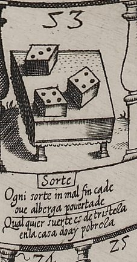
In a house where poverty lies,
every throw's a throw of sighs.
Literally: In the house where there is poverty, any throw is one of sadness.
- Spanish, on the board
- Qual quier suerte es de tristeza
en la casa do ay pobreza - Italian, on the board
- Ogni sorte in mal fin cade
oue alberga pouertade
(Every throw comes to a bad end / where poverty lodges.) - Spanish, Naples 1588 book
- En la casa do ay pobreza:
Qualquier suerte es de tristeza.
Rule. No effect here. Players sent from Poverty (60; 59 in the first edition) arrive with one stake of alms from each player, and pay nothing for going back (our reading of M).
What you see
Three dice lie on a dice-tray, a board with a raised rim and turned posts at the corners, drawn in perspective. Their upper faces show four, four and three pips: a throw of eleven (board). The numeral 53 is above. Below, on the square's outer edge, are the heading Sorte and the couplets. The Italian reads Ogni sorte in mal fin cade / oue alberga pouertade, “every throw comes to a bad end where poverty lodges” (board). The Spanish reads Qual quier suerte es de tristeza / en la casa do ay pobreza (board). The square has no rule label (board).
Why it is here
This square receives the petitioner ruined by Poverty (60). They are given alms so that they can go and seek another suerte at pressing their case, and they go to the Dice at 53. There, Barros says, is “a throw of eleven”, which is usually a good and welcome throw for the player. But for the poor no throw is good, even one they choose. Hence the verse: “In a house where poverty lies, / every throw's a throw of sighs” (Barros 1588, pp. 46–47).
The rules send the player from Poverty to 53, and “they give him alms” (Barros 1588, p. 62). Madrigal's rules specify one stake from each player (Barros 1587, Madrigal ed., PDF 12). M's overshoot rule adds that a player who lands on Poverty does not pay but receives a stake from everyone; Wilson and Zollinger take this to mean a player who counts back onto 60 (Wilson 1968, 368; Ciompi & Seville, giochidelloca.it). The edition applies the exemption to the move from 60 to 53 as well, so the poor player pays nothing for going back (our reading). The rules attach nothing to landing on 53 directly (our observation) (Barros 1588, pp. 60–63). Collar de Cáceres likewise finds here no hay penalidad, ni favor, sólo el adagio
(no penalty, no favor, only the saying) (Collar de Cáceres 2009, 96).
What Barros says
Barros’s own explanation, from the Naples 1588 book (Spanish as printed; English translation by this edition). Read it in the whole book.
Historical context
Why is eleven “good”? Lucero, in a note to his edition, explains that eleven is the winning number in many betting games (Bidwell-Steiner 2024, 204 n.38). In the three-dice game Alfonso X's book calls azar, eleven falls among the middle totals, the suertes (Canettieri n.d.). The two Dice squares may therefore form a pair: a low azar at 28, which is bad, and a good suerte at 53, which poverty spoils (our observation). Bidwell-Steiner notices a snag: Los números son 4, 4, 3, que, al sumar 11 parecen un error, pues solo faltan 10 para ganar.
(“The numbers are 4, 4, 3, which, adding up to 11, look like a mistake, since only 10 are needed to win”) (Bidwell-Steiner 2024, 204 n.38). Under Barros's exact-throw rule, a throw of eleven from 53 would pass the palm at 63 by one and bounce the player back to 62, with a stake to pay (our observation) (Barros 1588, pp. 62–63).
Of the goose game's two Dice squares, 53 is the one whose number Barros kept; in the goose game a first throw of 4 + 5 jumped there (Lucero 2020, 122). Barros kept the number but not the mechanism: his Dice show three dice, not two, and are not tied to the first-throw rule (Lucero 2020, 124). In Madrigal's rules the players throw two dice, or six arenillas (dice marked on one face only) (Barros 1587, Madrigal ed., PDF 11; Real Academia Española n.d.); G and C speak of el dado (Lucero Sánchez 2016, 189; Barros 1588, p. 60). The three painted dice are a picture of a throw, not the equipment of play (our observation).
Differences between the editions
- The throw of eleven is not in the first edition. G reads, in Lucero's collation, “the Dice, fifty-three, but since for the poor man no throw is good”. M adds “where there is a throw of eleven, which is usually good and welcome for the one who plays”. C follows M (Lucero Sánchez 2016, 184; Barros 1588, p. 46).
- In G, Poverty stands at 59, not 60:
Y de la Pobreza, que está a cincuenta y nueve, vuelve a la Suerte cincuenta y tres, y danle limosna
(Lucero 2019a, 204; Lucero Sánchez 2016, 180, 189). M, C and the board put it at 60 (Lucero Sánchez 2016, 180; board). - Order of the verse: G has “Cualquier suerte es de tristeza / en la casa do hay pobreza” (Lucero Sánchez 2016, 187). M and C reverse the lines (Wilson 1968, 371; Barros 1588, p. 47). The board keeps G's order (board; Rodríguez Mansilla 2019, 190). The fixed English translation follows the book's (M and C) order.
- Alms: C has only “they give him alms” (Barros 1588, p. 62). M says one stake from each player (Barros 1587, Madrigal ed., PDF 12). The label at 60 reads Limosina et alla sorte·53 (board).
- The plate reads pouertade, not Collar's pobertade (board).
What scholars say
Zollinger notes that the three dice give eleven points, but that the square's verse undercuts the good throw (Ciompi & Seville, giochidelloca.it). Collar de Cáceres, as noted above, finds only the saying here, and chance appearing de nuevo en su forma hostil
(again in its hostile form) (Collar de Cáceres 2009, 96). Bidwell-Steiner sees 53 as another chance to reach the goal with one good throw, and flags the eleven as an apparent mistake (Bidwell-Steiner 2024, 204). She also writes that the poor player must give alms at 60. Madrigal's rules say the alms come from the other players, as Rodríguez Mansilla reports (Bidwell-Steiner 2024, 204; Barros 1587, Madrigal ed., PDF 12; Rodríguez Mansilla 2019, 190). The La Bella Donna blog renders the verse “All luck is sadness (ends badly) in the house where there is poverty” (Fleur-de-Gigi 2013b).
54. A plain square
On the board: No emblem: ground strip with grass and a leafy plant along the outer edge.
55. “I Thought…”
El penseque · Pensar che
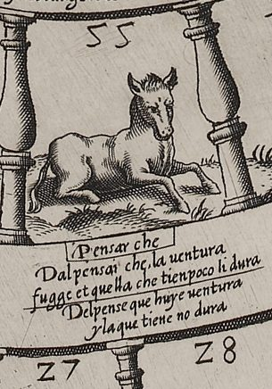
From "I Thought…" good fortune flies,
and what he has soon fades and dies.
Literally: From "I thought that" good fortune flees, and what he has does not last.
- Spanish, on the board
- Del pense que huye uentura
y la que tiene no dura - Italian, on the board
- Dal pensai che, la uentura
fugge et quella che tien poco li dura
(From "I thought that", good fortune / flees, and what he has lasts him little.) - Spanish, Naples 1588 book
- Del penseque huy[?] ventura:
Y la que tiene no dura.
Rule. Go back to 20, Diligence, and pay one stake.
On the board: Alla diligentia n·° 20 ·Paga — To Diligence, no. 20. Pay.
What you see
An ass lies couched on the ground with its hind legs folded under it and its forelegs stretched out in front, head up and ears pricked (board). Below it, in a small cartouche, is the heading “Pensar che” (“to think that…”), and under that the verse in Italian and Spanish; in English: “From “I Thought…” good fortune flies, / and what he has soon fades and dies.” (board). The rule label along the inner edge, in Italian only, reads “Alla diligentia n·° 20 ·Paga” (“To Diligence, no. 20. Pay”) (board).
Why it is here
“Pensé que”, “I thought that…”, is the excuse of whoever failed to act. Coming straight after Fortune, the square answers her: Fortune has a hand in which efforts we choose, Barros says, but we must not leave everything to her (Barros 1588, pp. 41–42). Complacent half-heartedness is the idler's shield, above all for those who do nothing in their own affairs and expect others to do it. Because carelessness comes easily to the lucky, the “penseque” is painted at 55 as an ass lying down, since whoever says “who would have thought it?” and fails to see what is coming is like one (Barros 1588, pp. 42–43).
The careless player is sent back to 20, Diligence, to learn from the dung-beetle that pushes a ball of dung bigger than its strength toward its hole (Barros 1588, pp. 43–44). Lucero calls the contrast between “I Thought…” and Diligence the most characteristic opposition in the work (Lucero Sánchez 2019, 163).
What Barros says
Barros’s own explanation, from the Naples 1588 book (Spanish as printed; English translation by this edition). Read it in the whole book.
Historical context
The name comes, Lucero argues, from a satirical tradition of burlesque family trees of Foolishness. “Pensé que” or “Penseque” was already a set phrase for fools, first found in a Genealogía de la Necedad of the early sixteenth century (Lucero Sánchez 2019, 167). Juan Pérez de Moya's Filosofía secreta (1585), the author best represented in Barros's library, tells it in its chapter on the descendants of dullards: Dicen que el Tiempo Perdido se casó con la Ignorancia, y hubieron un hijo, que se llamó Pensequé
(Lucero Sánchez 2019, 168) (they say that Lost Time married Ignorance, and they had a son called I-Thought-That). Pensequé in turn married Youth and fathered “I didn't know”, “I didn't think”, “I didn't look into it” and “Who would have said?”, and the line ends in poverty, the hospital and death (Lucero Sánchez 2019, 167–168). Lucero notes that some versions of the family tree include Poverty and “What Will They Say?”, two of Barros's own squares (Lucero Sánchez 2019, 168).
The ass was joined to the name in proverbs: Juan de Mal Lara (1568) already made Pensé Que the son of Lost Time and Ignorance, and Gonzalo Correas later recorded “Penseque, asneque y burreque, todos son hermanos” (“I-thought-that, ass-that and donkey-that are all brothers”) (Lucero Sánchez 2019, 171). Correas glosses the phrase: Pensé que es voz de necios. (Dícese esto a los que se excusan de sus descuidos en negocios de importancia, diciendo: ‘no pensé’, ‘quién pensara’; porque el prudente todo ha de mirar)
(“I thought that” is fools' talk: it is said to those who excuse their lapses in important business by saying “I didn't think”, “who would have thought it”, for the prudent man must look to everything) (Lucero Sánchez 2019, 171).
Lucero argues that the ass's usual meanings (stupidity, stubbornness, lust, patient labor) do not make laziness an archetypal trait (it is attributed to the ass only sporadically), and that Barros inverts the image of the ass as a working animal to set it against the ox of Labor (Lucero Sánchez 2019, 163, 165, 167). A lying beast does not always mean sloth: Juan de Borja's ox lying on hay, “Quies bona”, stands for rest earned in old age (Lucero Sánchez 2019, 165). The word had a long life after Barros, in La pícara Justina, Gracián, Quevedo and Tirso's play El castigo del penseque (Lucero Sánchez 2019, 172–173).
Differences between the editions
Board: the heading reads “Pensar che” (infinitive, “to think that”) while the Italian verse begins “Dal pensai che,” (“from I-thought-that”) (board). Zollinger, as reproduced on giochidelloca.it, normalizes the verse to “Dal pensar che” and prints “tiene” for the engraved “tien” (board; Ciompi & Seville, giochidelloca.it). The Italian second line, “fugge et quella che tien poco li dura”, says that what he has lasts him little, where the Spanish says it does not last (board). The Spanish verse is engraved “Del pense que huye uentura / y la que tiene no dura” (board).
Books: C prints “Del penseque huy[?] ventura: / Y la que tiene no dura.”, with one or two letters obscured by show-through (evidently huye) (Barros 1588, p. 43). G has a shorter gloss. M adds the warning not to trust everything to Fortune, the idler's “shield” and the words “and does not foresee it”, and C follows M (Lucero Sánchez 2016, 185–186; Barros 1588, pp. 42–43). Smaller C–M differences: “escudo de holgãzanes[sic]” against “de los holgazanes”, “otros las haran” against “lo harán” (Barros 1588, p. 42; Barros 1587, Madrigal ed., PDF 8).
Rule: the board adds “Paga”; the rules at the end of C say only that from 55 one goes back to Diligence, at 20 (Barros 1588, p. 62; board).
What scholars say
Collar de Cáceres reads the square as sloth, one of the seven deadly sins: La torpe Acidia (casa 55), pecado de los capitales
(Collar de Cáceres 2009, 97) (clumsy Sloth, square 55, one of the capital sins). He compares Ripa's image of Sloth, which can be a woman lying beside a lying ass, and a drawing attributed to Guido Reni inscribed “Acidia vestita di nero” (Collar de Cáceres 2009, 97).
Lucero doubts this. Ripa's first edition is later than Barros's book; Lucero takes Ripa's sloth to be the woman, and asks whether the lying ass is essential to the emblem or incidental (Lucero Sánchez 2019, 166). Lucero himself infers laziness from the posture: Holgazán, suponemos, porque está tumbado.
(Lucero Sánchez 2019, 164) (Idle, we suppose, because it is lying down). His conclusion is that the tradition stresses foolishness over laziness, and that Barros alone reverses the proportions, making idleness primary while keeping the lack of foresight in view (Lucero Sánchez 2019, 175). He also finds the likeness between the lying ass and the reclining Occasion of the 1588 board striking, though Barros's text does not call for that posture (Lucero Sánchez 2019, 172).
Bidwell-Steiner calls the ass an embodiment of procrastination and, citing Lucero's edition, traces its iconography to Aesop (Bidwell-Steiner 2024, 203); in his article on the square, Lucero says the ass is not lazy in Aesop (Lucero Sánchez 2019, 165). The La Bella Donna blog left the verse untranslated and took the animal for a horse (Fleur-de-Gigi 2013b).
56. A plain square
On the board: No emblem: ground strip with grass and a tall leafy plant along the outer edge.
57. Labor
Trabajo · trauaglio
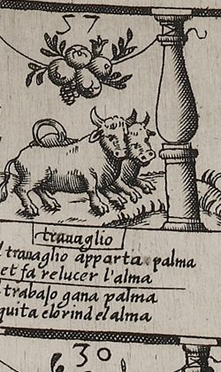
Labor wins the palm, and then
scours the soul of rust again.
Literally: Labor wins the palm and removes the rust from the soul.
- Spanish, on the board
- El trabajo gana palma
y quita el orin del alma - Italian, on the board
- Il trauaglio apparta palma
et fa relucer l'alma
(Labor brings [engraved "apparta", sets apart] the palm / and makes the soul shine.) - Spanish, Naples 1588 book
- El trabajo gana palma;
Y quita el orin del alma. - Madrid 1587, first edition, as quoted by Lucero Sánchez (Lucero Sánchez 2016, 187–88)
- No es grande trabajo aquel que basta a sacarnos dél.
No trouble's great, if work can be
enough to set us from it free.
Rule. Don't stop: move on again by the number you just threw (and again, if you land on oxen once more).
What you see
The last yoke of oxen, heads toward the bottom of the sheet (toward square 58), with a cluster of fruit on a cord between the balusters above them. Under trauaglio: “Labor wins the palm, and then / scours the soul of rust again.” The Italian reads that labor wins the palm and “makes the soul shine again” (our gloss); its verb is engraved apparta (board).
Why it is here
The palm is the goal: it grows through the gate of Victory at 63, the center of the board (board). Barros explains that the palm crowned those who had shown courage in suffering (Barros 1588, p. 47). A player who reaches 57 with a throw of six and moves six more lands exactly on 63 (our observation). A player who counts back from the palm onto 57 is also sent on by the same throw, as the Labor rule says, and so may pass the palm again and pay a second stake for going back: 58 + 11 runs to 57 and on to 58 (the edition's decision). See “About all nine Labor squares”, below.
Historical context
Lucero lists the palm and the cleansing of the soul among the fruits that the couplets new in Madrigal's edition add to labor (Lucero Sánchez 2016, 187). See “About all nine Labor squares”, below.
Differences between the editions
- Not in G; added in M and kept in C (Lucero Sánchez 2016, 187–88).
- The board's Italian reads apparta, as Collar prints it; the giochidelloca.it and La Bella Donna transcriptions normalize it to apporta, “brings” (board; Collar de Cáceres 2009, 92; Ciompi & Seville, giochidelloca.it; Fleur-de-Gigi 2013b). The Spanish is engraved with odd spacing, elorind elalma for el orin del alma (board).
What scholars say
Bidwell-Steiner counts five Labor squares, the last three among them, where the rear ox shows only one horn. Resulta tentador concluir que la trayectoria de un cortesano implique dejarse los cuernos
(Bidwell-Steiner 2024, 199) (“It is tempting to conclude that a courtier's career means leaving one's horns behind”), she writes, though she prefers to explain the detail by the way the whole landscape is laid out (Bidwell-Steiner 2024, 199). See “About all nine Labor squares”, below.
58. A plain square
On the board: No emblem: ground strip with grass and a tall leafy plant along the outer edge.
59. A plain square
In the first edition (Madrid, widow of Alonso Gómez, 1587) Poverty stands on square 59, not 60; the board printed with that edition is lost. See square 60.
On the board: No emblem: ground strip with grass and a leafy flowering plant along the outer edge.
60. Poverty
Pobreza · Casa d'la pouerta
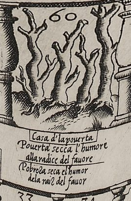
In the first edition Poverty stands on 59, so under that edition’s rules this square is plain. On the surviving board (and in the later editions) it is Poverty.
Want dries up the sap, and so
favor's root can no more grow.
Literally: Poverty dries up the moisture of the root of favor.
- Spanish, on the board
- Pobreza seca el humor
dela raiz del fauor - Italian, on the board
- Pouertà secca l'humore
alla radice del fauore
(Poverty dries the sap / at the root of favor.) - Spanish, Naples 1588 book
- Pobreza seca el vmor
De la rayz del fauor.
Rule. Go back to 53, the Dice; each other player gives you one stake as alms.
On the board: Limosina et alla sorte·53 — Alms, and to the Throw, 53.
What you see
Three dead trees, with no leaves and bare, twisted branches, grow from the strip of ground at the square's outer edge toward the center of the board (board). Outside the square are the heading “Casa d'la pouerta” (“House of Poverty”) and the verse in Italian and Spanish; in English: “Want dries up the sap, and so / favor's root can no more grow.” (board). The rule label along the inner edge, in Italian only, reads “Limosina et alla sorte·53” (“Alms, and to the Dice, 53”), and unlike most penalty squares it has no “Paga” (board).
Why it is here
With time, deceit and delay the petitioner comes to poverty. Barros shows it as land so dry that the trees have neither leaf nor fruit, to show the passage from the spring of plenty to the winter of need (Barros 1588, pp. 44–45). Above all, poverty acts on the patron. As soon as the patron sees that the petitioner has become poor, the patron's words dry up, though words are leaves blown by the wind, and the deeds even more, though deeds are the fruit of what we owe one another. While the petitioner still had leaves and fruit to win goodwill it was the other way round; now the watering has stopped and everything has withered (Barros 1588, pp. 45–46). Hence the verse about sap and root.
The petitioner is given alms so that they can go and look for another suerte at pressing their case: here “another way”, but the word also means a throw of the dice, and so they go to the Dice at 53, where there is a throw of eleven, usually a good one, but for a poor person no throw is good (Barros 1588, pp. 46–47). The dice engraved at 53 show 4, 4 and 3 (board). The verse there reads: “In a house where poverty lies, / every throw's a throw of sighs.” (Barros 1588, p. 47).
What Barros says
Barros’s own explanation, from the Naples 1588 book (Spanish as printed; English translation by this edition). Read it in the whole book.
Historical context
Emblem books had their own images of poverty. Collar de Cáceres sets two of them beside the board. In Alciato's emblem 120 (Paupertatem summis ingeniis obesse ne provehantur) poverty is un hombre que aspira a elevarse con un brazo alado, impidiéndoselo la piedra que lleva atada a la otra mano
(Collar de Cáceres 2009, 96) (a man who tries to rise with a winged arm, prevented by the stone tied to his other hand); Ripa's Poverty is a woman lying on dry branches; and Barros opta por el árbol que ha perdido sus hojas
(Barros opts for the tree that has lost its leaves) (Collar de Cáceres 2009, 96).
Poverty was a real danger for petitioners: Martínez Millán notes that the cost of life at court ruined many of them (Martínez Millán 1996, 480–481). Lucero warns that whoever reaches Poverty no encontrará poderoso que de él se apiade
(will find no powerful man to take pity on him) (Lucero 2021, 144), and he places Poverty, with What Will They Say?, at the idle pole of the axis whose other end is Diligence (Lucero 2021, 146). As to its causes, he calls it resultado quizá de no controlar la propia liberalidad en el empeño cortesano o producto acaso de los vicios asociados a la ociosidad pródiga
(perhaps the result of not keeping one's liberality in check in the courtly effort, or perhaps the product of the vices that go with prodigal idleness) (Lucero Sánchez 2019, 163). Collar de Cáceres calls the square the reverse of square 7, the Prodigal, with the same moral: Viene a ser el reverso de lo mostrado en la casa 7, con indéntica enseñanza moral.
(Collar de Cáceres 2009, 96) (it is the reverse of square 7, with the same moral lesson; “indéntica” as printed).
The alms rule has a real-life echo. Collar links it to Barros's later concern with public poor relief (Collar de Cáceres 2009, 96). Barros wrote a letter of approval for Cristóbal Pérez de Herrera's Discursos del amparo de los legítimos pobres (1598), a proposal for poor relief (Collar de Cáceres 2009, 82). The idea that poverty is born of idleness, in one of the Labor verses M added (“From idleness springs poverty, / and out of labor, prosperity.”), appears again in Barros's praise of Guzmán de Alfarache (Lucero Sánchez 2016, 187).
Differences between the editions
59 or 60: the first edition (G) twice places Poverty at 59 (Lucero 2019a, 204). M and C put it at 60, which Lucero calls la corrección del número de casilla de la Pobreza, donde se prefiere M y es tal y como aparece en la pintura de Cartaro que acompaña a esta edición de 1588
(Lucero Sánchez 2016, 180) (the correction of Poverty's square number, where M is preferred, just as it appears on Cartaro's board issued with this 1588 edition). Because G repeats the number, Lucero holds that it is not a slip and infers a lost first board with Poverty at 59. He admits that the discrepancy propone varias preguntas y deja abiertas todas las respuestas
(raises several questions and leaves all the answers open) (Lucero 2019a, 204). On Cartaro's board square 59 is blank (our observation) (board).
Alms: C's rules say only “and they give him alms”, as G does (Barros 1588, p. 62; Lucero 2019a, 204). M specifies one stake from each player (Barros 1587, Madrigal ed., PDF 12; Lucero Sánchez 2016, 189). Its overshoot rule adds that a player who lands on Poverty does not pay but receives a stake from everyone (Barros 1587, Madrigal ed., PDF 12); Wilson and Zollinger take this to mean a player who counts back onto 60 (Wilson 1968, 368; Ciompi & Seville, giochidelloca.it). The edition applies the exemption to the move from 60 to 53 as well, so the poor player pays nothing for going back (our reading). The board's label has no “Paga”, which fits that reading (our observation) (board). In the prose, C has “MAndanle dar limosna”, M “Mándale” (Barros 1588, p. 46; Barros 1587, Madrigal ed., PDF 9).
Verse: the board reads “Pobreza seca el humor / dela raiz del fauor”, the Italian “Pouertà secca l'humore / alla radice del fauore” (board); C prints “Pobreza seca el vmor / De la rayz del fauor.” (Barros 1588, p. 46). Collar gives “de la raíz de fauor” and the heading as “Casa del pouertà”; the plate has “del fauor” and “Casa d'la pouerta” (Collar de Cáceres 2009, 96; board). Zollinger drops “et” from the rule label (Ciompi & Seville, giochidelloca.it; board).
The verse of 53, where the poor player lands: G and the board put “Any throw is sad” first, while M and C reverse the lines (Lucero Sánchez 2016, 187; Rodríguez Mansilla 2019, 190; Barros 1588, p. 47; board).
What scholars say
Bidwell-Steiner, citing Lucero's edition, reads the rule as ordering the poor player to give alms, and finds the remedy contradictory (Bidwell-Steiner 2024, 204); her reading may come from the moral text's MAndanle dar limosna, which can be read either way (Barros 1588, p. 46) (our conjecture). Wilson and Rodríguez Mansilla, reading M, take it as the other players giving the poor player alms (Wilson 1968, 368; Rodríguez Mansilla 2019, 190), and M's rules say so explicitly (Barros 1587, Madrigal ed., PDF 12). Seville writes that Poverty at once dries up the support he has been receiving
(Seville 2026, 73). Collar reads the square as the reverse of the Prodigal (Collar de Cáceres 2009, 96). The La Bella Donna blog translated the rule label as “Beg for luck at n.53” and favor as “luck” (Fleur-de-Gigi 2013b).
61. A plain square
On the board: No emblem: ground strip with grass and a curling leafy plant.
62. A plain square
On the board: No emblem: ground strip with grass and a small plant; the square ends against the scroll (volute) at the foot of the Vitoria aedicule.
63. Victory, the Palm
casa de la vitoria · VITORIA (cartouche; the heading is the same in both languages)
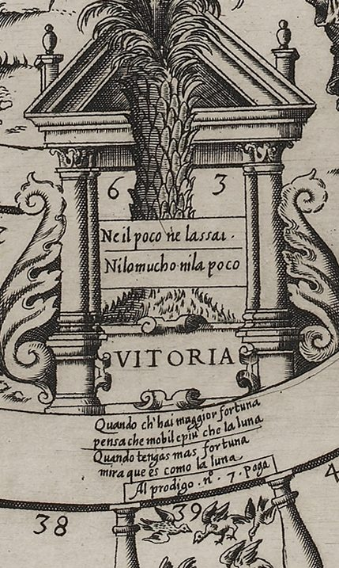
When fortune's fullest, bear in mind:
the moon is of the selfsame kind.
Literally: When you have the most fortune, see that it is like the moon.
- Spanish, on the board
- Quando tengas mas fortuna
mira que es como la luna - Italian, on the board
- Quando ch'hai maggior fortuna
pensa che mobil e più che la luna
(When you have greater fortune, / think that it is more changeable than the moon.) - Spanish, Naples 1588 book
- Quando tengas mas fortuna,
Mira que es como la luna.
Rule. Reach 63 by exact count to win the pot. Overshoot counts back and costs one stake, unless you land on Poverty (60; 59 in the first edition).
On the board: Ne il poco ne lassai · / Ni lo mucho·ni la poco — Neither the little nor the much. / Neither the much nor the little.
What you see
In the lower middle of the central sea stands a small classical gate (an aedicule): a triangular pediment with finials, two pairs of columns, and a large curling acanthus scroll on each side. A tall palm grows up through it. Its scaly trunk fills the opening, and its crown of arching fronds, hung with bunches of dates, spreads above the pediment. The numerals 6 and 3 are cut on either side of the trunk. Below them a ruled panel carries two lines, Italian above Spanish: “Ne il poco ne lassai ·” and “Ni lo mucho·ni la poco” (“Neither too much nor too little”). Between the column bases a strapwork cartouche reads VITORIA. Under the gate, in the band above the rule label of square 39, are two couplets, Italian above Spanish: “Quando ch'hai maggior fortuna / pensa che mobil e più che la luna” and “Quando tengas mas fortuna / mira que es como la luna” (“When fortune's fullest, bear in mind: / the moon is of the selfsame kind”) (board). The man reaching up to the palm on the right, and the sea around the gate, have their own notes (see “The Man Outside” and “The Sea of Suffering”).
Why it is here
The palm is the prize of the whole petition: the office or favor the courtier has been chasing. Barros says it is the palm with which the ancients crowned those who showed endurance in adversity and good fortune in the outcome. The words on it, “Neither too much nor too little”, are both a rule and a moral: you must reach the palm with exactly the points needed, just as a petitioner should make neither more nor fewer efforts than their case requires. They also teach temperance, keeping to the mean: not growing proud when you win, not losing heart when you lose (Barros 1588, pp. 47–48). Because nothing obtained is secure, least of all high office, the verse below warns that fortune at its fullest is like the moon, which does not stay full (Barros 1588, pp. 48–49). In play, only an exact throw wins. If the dice give more points than are needed, the counter goes back by the surplus, and the player pays one stake each time they have to go back (Barros 1588, pp. 62–63). The number 63 itself comes from the Game of the Goose, which Barros adapted (see Historical context, below).
What Barros says
Barros’s own explanation, from the Naples 1588 book (Spanish as printed; English translation by this edition). Read it in the whole book.
Historical context
The exact finish, with the surplus counted back, is the rule of the Game of the Goose, the 63-square race game that had reached Philip II's court by 1585; Barros kept it along with the number of squares, so that his board stayed recognizable (Lucero 2020, 122–25; Seville 2026, 66; Infantes 2010, 134–35). Lucero ties the number 63 to the ages of human life and to the climacteric years, the seventh-year thresholds of life that were thought dangerous. He cites Pedro Mexía's Silva de varia lección, where the most feared of all was the sixty-third: el más temido de todos era el año sesenta y tres
(Lucero 2020, 125) (“the most feared of all was the sixty-third year”), and notes that such warnings reached Philip II himself (Lucero 2020, 125). Seville reads the Goose game's 63 in the same way, as the Grand Climacteric i.e., the critical year of a person’s life
(Seville 2026, 64), and Bidwell-Steiner recalls the reckoning 7 × 9 = 63 (Seville 2026, 64; Bidwell-Steiner 2024, 211). The palm as the victor's crown, and as the tree that bends under a weight and rises again, belongs to the emblem books. Alciato's emblem Obdurandum adversus urgentia (“One must hold out against pressure”) shows a boy hanging from palm fronds; Collar de Cáceres and Martínez Millán place Barros's palm in that line, and Collar adds the device of Francesco Maria, Duke of Urbino, a bent palm with the motto Inclinata resurgit, glossed from Pliny on the palm's springing back (Collar de Cáceres 2009, 97, 99, 104; Martínez Millán 1996, 481; Alciato 1621). The moon as the image of Fortune's changes is old: Bidwell-Steiner recalls the medieval Latin song O Fortuna velut luna (“O Fortune, like the moon”) (Bidwell-Steiner 2024, 204–5). In the woodcut of Fortune in the Madrid edition of Pedro Madrigal, the palm reappears in Fortune's right hand beside an ox yoke, the victor's sign and the vanquished's (Lucero 2021, 147; Wilson 1968, 369; Bidwell-Steiner 2024, 205); on the board the last Labor square, 57, promises that labor wins the palm (board).
Differences between the editions
- Motto. The 1588 book says the words “Ni lo mucho, ni lo poco” are on the palm's trunk (Barros 1588, p. 47); on the board they stand on a separate panel under the numerals (our observation). The board's Spanish reads “Ni lo mucho ni la poco” (engraved run together, “Nilomucho·nila poco”); its Italian, “Ne il poco ne lassai”, is to be read “ne l'assai” (“nor the much”) and reverses the order, little before much (board). Collar de Cáceres prints the motto in exactly these forms (Collar de Cáceres 2009, 97).
- Verse. The board's Spanish couplet agrees with the 1588 book (Barros 1588, p. 49). The Italian goes further: “think that it [fortune] is more changeable than the moon” (engraved “mobil epiu'”), where the Spanish says only that it is like the moon (board) (our observation).
- Name. The Madrid princeps of the widow of Alonso Gómez (G) has “Victoria”; the Madrid edition of Pedro Madrigal (M) has “Vitoria” (Lucero Sánchez 2016, 187); the 1588 book (C) has “la casa de la vitoria” (Barros 1588, p. 47); the board, “VITORIA” (board).
- Winning rule. Only M says that whoever lands exactly on square 63, where the palm is, takes everything in the pot, both the opening stakes and all later payments (Barros 1587, Madrigal ed., PDF 12; Lucero Sánchez 2016, 189–90). G ends with the overshoot rule and “Deo gratias” (Lucero 2019a, 204); C also ends with the overshoot rule, never states how the game is won, and never numbers the palm's square (Barros 1588, pp. 62–63). In its overshoot rule M also exempts a player who lands on Poverty from paying (Barros 1587, Madrigal ed., PDF 12).
- Neither book mentions the numerals 6 and 3 that the board shows (our observation).
What scholars say
Collar de Cáceres reads the exact-throw motto as Barros's lesson of temperance (Collar de Cáceres 2009, 97), and Seville likewise: one should not make more effort or less than necessary to achieve what is intended; and one should keep in all things the middle ground
(Seville 2026, 73). Martínez Millán connects the motto with the exact span of years a life allows for a petition and, above all, with Stoic impassibility before Fortune (Martínez Millán 1996, 481). Lucero holds that Barros emptied the Goose board's numbering of its numerological meaning, probably through ignorance, but kept the total of 63 (Lucero 2020, 125–26). The link to the climacteric is Lucero's: he says Barros knew Mexía's book well, no va más allá de lo expuesto
(Lucero 2020, 125) (“he goes no further than what is set out”), that is, Barros himself does not mention the climacteric (Lucero 2020, 125). Lucero also argues that in Barros's game one never quite loses, even without the prize, because the strategy and self-mastery learned are their own reward (Lucero 2021, 146). For Bidwell-Steiner the guiding principle seems to be that se consigue la palma de la victoria cuando se ha perdido enteramente la confianza y solamente se sigue adelante por el «valor de sufrimiento»
(“the palm of victory is won when confidence has been entirely lost and one goes on only by the 'valor of suffering'”) (Bidwell-Steiner 2024, 204). Wood reads the center as a choice of ends: either the ‘sea of suffering’ for a sinful life or the ‘palm of victory’ for the moral and successful contestant
(Wood 2019, 463); Barros's text does not present the sea as a losing end (our observation).
Around the track
The Entrance: the Swan above the Gate
la puerta de la opinion (with “vn Cisne” above it) · Guarda / l'fine (under the arch); Noscete ipsum (Latin, issuing from the trumpet)
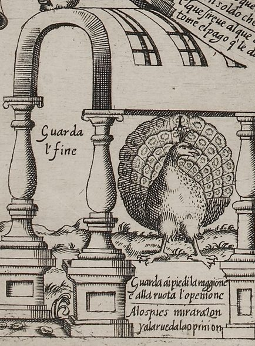
Rule. Every counter starts outside this gate. Your first throw counts squares from here into the track.
What you see
At the bottom left of the sheet, just before square 1, stands a round arch on two pillars, its vault drawn in perspective and ribbed in a grid; a small obelisk rises in the hilly landscape to its left. On the crown of the arch lies a human skull. A swan stands on the skull with one foot, its wings raised; its other foot is lifted and grips a long straight trumpet, held in its beak, whose bell points down to the left; from the bell runs the Latin motto “Noscete ipsum” (Nosce te ipsum, “Know thyself”, engraved as one word). Between the two pillars, in Italian only, is engraved “Guarda / l'fine” (“Look to the end”) (board). Barros calls the skull a muerte, a death, and says the swan has one foot raised on it (Barros 1588, p. 21).
Why it is here
In Barros's allegory this is where a career at court begins. Whoever starts to seek office enters by the Gate of Opinion, misled by their own self-esteem and by the confidence they place in their patrons (Barros 1588, p. 20). Above the gate the swan stands on a death, the end of all things, and trumpets that everyone should know themselves and look to the end of what they seek, so that they will not complain of Fortune later if she goes against them, since perhaps she does them no wrong; the difficulties of the end, Barros says, are often born of the choice made at the beginning (Barros 1588, pp. 20–21). The board splits that one sentence of Barros's into two mottoes, “Know thyself” in Latin and “Look to the end” in Italian (our observation); Collar, Lucero and Zollinger each read both mottoes against this passage (Collar de Cáceres 2009, 93; Lucero 2021, 140; Ciompi & Seville, giochidelloca.it).
How a game begins. Each player puts one stake (a tanto, of whatever value the players agree) into the pot and takes a marker unlike anyone else's; in Barros's worked example three players use a ring, a silver two-real coin and a gold doubloon (Barros 1587, Madrigal ed., PDF 11; Lucero Sánchez 2016, 189). Madrigal's 1587 rules say to play with two dice, or with six “arenillas”, dice marked on one face only (Barros 1587, Madrigal ed., PDF 11; Real Academia Española n.d.). Players throw in turn; each counter comes in through this gate and is set on the square whose number equals the points thrown (Barros 1588, p. 60). If a counter lands where another already stands, the newcomer stays and the other must take the square the newcomer came from, which Barros calls the custom of rivalry (Barros 1588, pp. 21–60). Madrigal's text adds that at the very start of the game the displaced player is left with no square at all, that is, back outside the gate (Barros 1587, Madrigal ed., PDF 12). Only Madrigal's edition says in so many words that the first to reach 63 with the exact count takes the pot (Lucero Sánchez 2016, 189–90); the Naples book gives the exact count but never says how the game is won (Barros 1588, p. 62).
What Barros says
Barros’s own explanation, from the Naples 1588 book (Spanish as printed; English translation by this edition). Read it in the whole book.
Historical context
Collar de Cáceres finds the board's kinship with the Goose game in the creature that summons players at the entrance, a goose on Goose boards and a monkey on Altiero Gatti's board of 1588; Barros's swan, he writes, is enteramente asimilable a la oca que aparece en varias versiones del juego original
(“entirely comparable to the goose that appears in several versions of the original game”) (Collar de Cáceres 2009, 88). Lucero makes the same point: La sonora trompeta del cisne sobre la calavera que timbra el arco de entrada, trasunto peculiar de la oca primitiva
(“the ringing trumpet of the swan on the skull that crowns the entrance arch, a peculiar likeness of the primitive goose”) (Lucero 2021, 140). Wood reads Gatti's Game of the Monkey, printed the same year, as a parody: It replaces the memento mori of the Courtly Philosophy Game’s entryway with a trumpeting monkey
(Wood 2019, 475).
The swan was believed to sing before it died; Collar traces the idea to Horapollo's Hieroglyphica and to Plato's Phaedo 85c (Collar de Cáceres 2009, 93, 103). Madrigal's 1587 text gives the twist: this swan announces not its own end, as swans do, but someone else's (Barros 1587, Madrigal ed., PDF 11; Collar de Cáceres 2009, 103). Alciato used the bird otherwise: Alciato's Insignia poetarum makes the swan, sacred to Apollo, the badge of poets (Alciato 1621).
“Nosce te ipsum” is the maxim of Apollo's temple at Delphi, which Collar calls Socratic (Collar de Cáceres 2009, 93). Martínez Millán makes self-knowledge the first of the petitioner's two tools; the second is the four means Barros names, liberality, flattery, diligence and labor (Martínez Millán 1996, 468). Lucero quotes Álvarez-Ossorio on court learning, which adoptó el principio del Nosce te ipsum como pilar primordial de su cosmovisión
(Lucero 2021, 140) (adopted the principle of Nosce te ipsum as a chief pillar of its worldview), ties the maxim to humility, and cites Guevara's warning that not everyone is made for the court (Lucero 2021, 140). The book opens on the same note, as Lucero points out (Lucero 2021, 140): its first sentence says that the end of the work is its beginning, since a house is planned for living in before its first stone is laid (Barros 1588, pp. 16–17); Bidwell-Steiner points out the double sense of fin, end and purpose (Bidwell-Steiner 2024, 197). Barros knew the gate from inside: he had held the modest post of royal aposentador (quartermaster of the court) since 1563 and spent years seeking more (Lucero 2021, 137).
Differences between the editions
- The swan's foot on the death. The Madrid princeps of the widow of Alonso Gómez (G) describes only a swan with a trumpet; Madrigal's edition (M) adds the foot raised on a death as the end of things, and the Naples book (C) keeps it (Lucero Sánchez 2016, 185; Barros 1588, p. 21).
- The maxim on beginnings. G says the choice of the beginning is the cause (es causa) of the difficulties of the end; M and C say those difficulties are born (nacen) of it (Lucero Sánchez 2016, 184; Barros 1588, p. 20).
- Board and book. Neither “Noscete ipsum” nor “Guarda l'fine” is printed in the book; they exist only on the board (board). Lucero notes that the only mottoes not given in both languages lie outside the track: the corner mottoes, which have no Italian, and the admonition under the portico, which is Italian only (Lucero 2019a, 203).
- Engraved forms. The sheet reads “Noscete ipsum” as one word and “Guarda / l'fine”; “Guarda il fine” is a normalization (board). Collar and Lucero read “Guarda l'fine” (Collar de Cáceres 2009, 93; Lucero 2019a, 203).
- Rules. C prints only a short section of rules; M alone has the long “Declaración del juego” with the stake, the markers, the two dice and the worked example (Barros 1588, p. 60; Lucero Sánchez 2016, 189–90). G and C speak of throwing the die (el dado) in the singular (Lucero Sánchez 2016, 189; Barros 1588, p. 60); M, after prescribing two dice, also says el dado in its rules (Barros 1587, Madrigal ed., PDF 11–12). In M's example the displaced player also pays one stake for going back; C's only such clause follows its overshoot rule (Barros 1587, Madrigal ed., PDF 12; Barros 1588, pp. 60–63).
What scholars say
Collar de Cáceres reads the swan as joining three ideas: the swan-song and death, the convocatoria a participar en el juego de las aspiraciones cortesanas
(Collar de Cáceres 2009, 93) (“summons to take part in the game of courtly ambitions”), and la invocación a que con antelación cada uno calibre sus pretensiones de acuerdo con sus méritos
(“the call for each to weigh their claims beforehand against their merits”) (Collar de Cáceres 2009, 93). Wood reads the portal as a memento mori that opens a “virtual pilgrimage” and, in her words, “asks the player to look to the end”, which for her is either the sea of suffering or the palm of victory (Wood 2019, 463, 466). Wilson, working from the Madrid book and without the board, took the trumpet for fame: A swan blows the trumpet of fame and rests his foot on a death's head.
(Wilson 1968, 367). Martínez Millán, also writing before the board was found, supposed that a fourth corner held a Fortune (Martínez Millán 1996, 475); on the 1588 sheet that corner is this gate (board). Zollinger calls the entrance typically Italian: “une case non numérotée formée par un arc supporté par deux colonnes” (“an unnumbered square formed by an arch on two columns”) (Ciompi & Seville, giochidelloca.it). Bidwell-Steiner reads the invitation to return to the start, where the swan proclaims “Nosce te ipsum”, as the last step of an active life (Bidwell-Steiner 2024, 212). The La Bella Donna blog renders the gate motto “Watch for the end” (Fleur-de-Gigi 2013b).
Labor (the nine squares of the Oxen)
las casas del Trabajo (los bueyes) · trauaglio (on 4, 12, 17, 30, 34, 41, 48, 57); tauaglio [sic] on 23
Rule. Don't stop: move on again by the number you just threw (and again, if you land on oxen once more).
What you see
Nine squares, 4, 12, 17, 23, 30, 34, 41, 48 and 57, carry the same device: a yoke of two oxen on the strip of ground that runs through every bay (board). On every Labor square a cluster of fruit and leaves hangs at the middle of a cord slung between the two balusters, above the oxen (board). Each Labor square has a small cartouche headed trauaglio, Italian for labor, and its own couplet in Italian and in Spanish. The oxen are posed differently each time, walking, standing or turning their heads. On six of the squares, 4, 17, 30, 34, 41 and 48, a cord runs back from the yoke over the near ox to a plow behind them, most plainly on 30; on 12, 23 and 57 no plow is shown (our observation) (board). The eight couplets of squares 12 to 57 stand along the track in the order in which the 1588 book prints them (board; Barros 1588, p. 26); Bidwell-Steiner's list already pairs the book's couplets, in that order, with squares 4 to 57 (Bidwell-Steiner 2024, 199).
Why it is here
Barros names four means by which a petitioner advances: liberality, flattery, diligence and labor (Barros 1588, p. 18). Labor gets the most squares, and you may not rest on one. There must be no moment of rest in petitioning, he says, or the thread of the fruits that labor yields will break. Hence the picture: two oxen plowing under fruit strung on a thread, the fruits of just labor, each hanging from the next (Barros 1588, pp. 22–23). Oxen were chosen because they work hardest and feel it least if they are fed and rewarded; so the petitioner feels their fatigue only when the pay their hope promised them is refused (Barros 1588, p. 23). Everything a person seeks must come through labor, and labor is a duty inherited from our first parents; so the player who lands on a Labor square must not balk but go cheerfully on as many squares again as they threw (Barros 1588, pp. 23–25). Barros's word trabajo means both work and hardship, and several couplets play on both senses.
Why the oxen are scattered. Barros says the Labor squares keep no order because the subject, a petition at court, has none; besides the first there are eight more, and their verses teach the petitioner not to fear labor but to seek it (Barros 1588, p. 25). In the Goose game the geese come at regular steps, so a lucky first throw could run from goose to goose to the end, and the Goose game needed a special first-throw rule to prevent it (Lucero 2020, 122–23). With Barros's irregular oxen no first throw can win the game at once (Lucero 2020, 126). Madrigal's text says the rule applies every time one lands on oxen (Barros 1587, Madrigal ed., PDF 12); read that way, a throw of seven can carry a counter from 34 to 41 to 48 and on to 55, “I Thought…”, which sends it back to Diligence at 20 (our observation).
The book also gives the whole picture a motto about labor: “No son of Adam can be fed / unless by labor for his bread.” It closes Barros's introduction: no lot in life lacks its trabajos, its hardships (Barros 1588, p. 19). That motto is not engraved on the board (board).
What Barros says
Barros’s own explanation, from the Naples 1588 book (Spanish as printed; English translation by this edition). Read it in the whole book.
Historical context
The ox takes the goose's place, and the scholars we cite treat that as the key choice of the design. Lucero: No puede considerarse una cuestión menor o accidental que el buey sustituya a la oca en el tablero.
(“It cannot be thought a minor or accidental matter that the ox replaces the goose on the board.”) (Lucero 2019c, 825). Collar de Cáceres calls labor el verdadero motor del juego
(“the real motor of the game”) (Collar de Cáceres 2009, 91). Bidwell-Steiner sets the two animals against each other: La oca del juego original representa suerte, abundancia y diversión.
(Bidwell-Steiner 2024, 199) (“The goose of the original game stands for luck, abundance and fun.”) and En marcada oposición, Barros la reemplaza por una pareja de bueyes uncidos al arado que simboliza el ajetreo continuo, la sumisión y la seriedad.
(“In marked contrast, Barros replaces it with a pair of oxen yoked to the plow, standing for ceaseless toil, submission and seriousness.”) (Bidwell-Steiner 2024, 199). González Ramírez, reviewing Lucero's edition, reports his equation of the goose with idleness (oca, ocio) and of the ox with labor (González Ramírez 2020).
At court the choice had a political edge. Lucero ties the praise of labor to the “Castilian” faction of Barros's dedicatee, the royal secretary Mateo Vázquez de Leca, hombre de dudoso linaje, que ha conseguido medrar, sin embargo, por su infatigable esfuerzo personal
(“a man of doubtful lineage, who has nonetheless managed to rise by his tireless personal effort”) (Lucero 2019c, 822), and reads it as a criticism of an idle nobility (Lucero 2019c, 825). He also notes the paradox that the Madrigal title page carries Vázquez's coat of arms, which asserts noble blood against the board's praise of work (Lucero 2019b, 49). Earlier writers had made the ox an image of servitude at court: Castillejo's courtier bows their head to the patron “like the ox”, and Barros himself later wrote that no submission is more servile than petitioning for favor (Lucero 2019c, 825–26). Lucero's sharpest objection is that the game runs on dice: favors at court were graces, not wages, and Entonces, Fortuna siempre vence.
(“Then Fortune always wins.”) (Lucero 2019c, 829). Biagioli describes the same structure in Italian courts: a courtier's reward from the prince was structurally analogous to a Christian's receiving grace from God
(Biagioli 1993, 51), since in both cases, one's actions could not guarantee the achievement of grace
(Biagioli 1993, 51).
Emblem sources. For Pierio Valeriano plowing oxen foretell abundance of fruits; Collar also cites the device “Passo a Passo” of René of Anjou (in Giovio) and one of Gabriel Simeoni's devices (Collar de Cáceres 2009, 91, 103). Bidwell-Steiner adds Simeoni's two oxen at the plow as true companions (Bidwell-Steiner 2024, 200). Lucero's closest parallel is Juan de Horozco's Emblemas morales (Segovia, 1589), book II, emblem 3: an ox skull under Fortune's winged wheel, motto Par est fortuna labori (“Fortune matches labor”) (Lucero 2019c, 827; Lucero 2021, 137). He also cites Juan de Borja's Ex labore fructus and the Apólogo de la Ociosidad y el Trabajo, a book Barros owned, where the ox is Labor's most precious gift (Lucero 2019c, 822, 824, 827). Lucero conjectures that Barros and Horozco, both tied to Segovia, knew each other (Lucero 2019c, 828).
The Adam motto. Lucero calls it una letra nueva con raíces bíblicas que rubrica la fuerza de la Fortuna-Providencia
(“a new motto with biblical roots that confirms the power of Fortune-as-Providence”) (Lucero Sánchez 2016, 185). The root is God's sentence on Adam, “in the sweat of thy face shalt thou eat bread” (Genesis 3:19; our identification). Collar heads his section on the oxen with it (Collar de Cáceres 2009, 91). The Labor couplets had readers of their own: as Cristóbal Pérez Pastor had noticed, Gutierre Marqués de Careaga quoted them, “with approval” in Wilson's phrase, in his Desengaño de Fortuna (Madrid, 1612) (Wilson 1968, 370; Lucero Sánchez 2016, 174).
Differences between the editions
- Number of squares. M and C speak of the first Labor square and eight others, nine in all, as on the board (Barros 1588, p. 25; Lucero 2019a, 203); G too prints eight couplets for the squares after the first (Lucero Sánchez 2016, 187–88). Wilson, before the board was found, wrote of eight (Wilson 1968, 367).
- The couplets of G. The princeps prints a different set of eight couplets for the squares after the first. Only four of them survive in M and C, and those four are reordered (Lucero Sánchez 2016, 187–88). G's other four are: “However great the yoke may prove, / it is not felt when laid by love”; “Yoke and plowshare, plow and all, / for love's sake never tire at all”; “There is no toil but it will break / the one who deems it hard to take”; and “Who makes a virtue of his need / by working finds his rest indeed” (Lucero Sánchez 2016, 187–88). G's order is: yoke of love; yoke and plow; the toil that breaks; the fruit of hope (34 on the board); Fortune kind to labor (48); virtue of need; Fortune yields (30); no great trouble (23). M drops the two love-and-yoke couplets and the other two, and adds those of squares 12, 17, 41 and 57 (Lucero Sánchez 2016, 187–88). Lucero thinks the dropped pair suited love more than labor. In his view the new ones stress the fruits of work, the reordering is unexplained, and the changes are Barros's own (Lucero Sánchez 2016, 187–88). The collation we cite does not include the first couplet, “Labor's never felt at all…”, so G's wording of it is not known to us (Lucero Sánchez 2016, 187–88).
- Lost boards. Lucero, who takes these to be the only mottoes that change between editions, argues that the lost board issued with G must have differed from the Naples one (Lucero 2019a, 203 n. 15). The order of the lines at 53 also changes, and the Dice verse at 28 may differ as well (see those squares). He adds that Barros cared little where the oxen stood, so they may have sat on different nearby squares on different boards (Lucero 2019a, 203–4). In his thesis he suggests that the princeps board spread them more evenly (Lucero Sánchez 2020, 20).
- Wording of the prose. G misprints buyes … fructas, which M corrects to bueyes … frutas (Lucero Sánchez 2016, 183). G says only that the squares keep no order; M and C name them as the squares of Labor (Lucero Sánchez 2016, 184; Barros 1588, p. 25). G speaks of the fatigue de lo que trabaja, M of that de sus trabajos (Lucero Sánchez 2016, 186); C misprints cansacio (Barros 1588, p. 23).
- The Adam motto is absent from G, added in M and kept in C (Lucero Sánchez 2016, 185; Barros 1588, p. 19).
- Rules. C's short rules say only that a player who lands on the oxen goes on as many squares again (Barros 1588, p. 60). M's worked example has a player throw 4, reach the square of Labor and go on to 8 (Lucero Sánchez 2016, 190).
- Board and book. The book prints the couplets in Spanish only; the board adds Italian versions and differs in small spellings, noted square by square (board; Barros 1588, p. 26). Every cartouche reads trauaglio except square 23's tauaglio (board).
What scholars say
Lucero: Se trata de la casilla más importante, la de más frecuente aparición, la más cargada simbólicamente y la que da nombre al juego de procedencia.
(“It is the most important square, the most frequent, the most symbolically loaded, and the one that gives the parent game its name.”) (Lucero 2019c, 825); he also classes them, with the Dice, as “mechanical” squares that move the player, unlike the marked squares of court life (Lucero 2021, 135). On the scattering, Collar reads Barros's “no order” as a refusal of the Goose game's numerical rationale and its supposed symbolism (Collar de Cáceres 2009, 91, 102). Lucero first put Barros's disregard of the numbering down to ignorance, “a buen seguro” (“surely”) (Lucero 2020, 126). Later he hedged: “probably from ignorance, or perhaps by design” (Lucero 2021, 135). Zollinger takes Barros at his word: the fruits of labor need no order (Ciompi & Seville, giochidelloca.it). Bidwell-Steiner speaks of nine oxen replacing nine geese (Bidwell-Steiner 2024, 196, 199); Collar counts fourteen geese on the Goose board (Collar de Cáceres 2009, 102). Bidwell-Steiner also notes that the nine pictures vary only in details, such as the rear ox's hidden horn, and reads the oxen as castrated beasts, a stand for merit against inherited nobility (Bidwell-Steiner 2024, 199–200). Wood calls them “spaces of bulls” on which players double their advance (Wood 2019, 463); Seville calls them work spaces that double the throw (Seville 2026, 70). Rodríguez Mansilla links the plowing oxen to the bull and the sleeping Idleness in the frontispiece engraving of La pícara Justina (Rodríguez Mansilla 2019, 190). The La Bella Donna blog calls the oxen “a bull” or “bulls” (Fleur-de-Gigi 2013b).
The Swan on the Skull (“Know thyself”)
vn Cisne con vn pie leuantado sobre una muerte
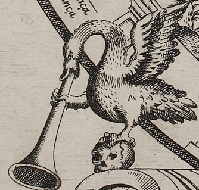
Rule. Not a square. The emblem over the entrance gate; no effect in play.
What you see
On the crown of the round entrance arch at the bottom left lies a human skull. A swan stands on it with one foot and its wings raised; its other foot is lifted and grips a long straight trumpet, held in its beak, whose bell points down to the left. From the bell, in italic, the words “Noscete ipsum” (Latin, “Know thyself”) run steeply down the margin (board). For the arch itself and its Italian motto “Guarda l'fine”, see the Gate of Opinion.
Why it is here
Barros describes the swan in his account of the entrance, not with the three corner figures: to show that the difficulties of the end often come from the choice made at the beginning, a swan stands over the door with one foot raised on a death's head, the end of all things, and a trumpet, crying out that each should know themselves and look to the end of what they seek, so that they do not complain of their fortune afterward (Barros 1588, pp. 20–21). Barros counts only three figures in the outer corners (Barros 1588, p. 51); on the board the swan over the gate fills the fourth corner, as Collar de Cáceres and Lucero both note (Collar de Cáceres 2009, 88; Lucero 2019a, 203).
Historical context
Collar de Cáceres finds three ideas joined here: the swan's song, sung before its death, as in Horapollo's Hieroglyphica and Plato's Phaedo; the convocatoria a participar en el juego de las aspiraciones cortesanas
(Collar de Cáceres 2009, 93) (“summons to take part in the game of courtly ambitions”); and la invocación a que con antelación cada uno calibre sus pretensiones de acuerdo con sus méritos
(Collar de Cáceres 2009, 93) (“the call for each to weigh their petitions beforehand against their merits”). The motto is the one inscribed on the temple of Apollo at Delphi (Collar de Cáceres 2009, 93, 103). In Alciato the swan is the poets' bird, not a sign of death (Alciato 1621). The swan also takes the goose's place. Collar notes that early goose boards open with a herald animal calling players to the game, un animal-heraldo llamando al juego (oca, cisne, mona en su caso)
(“a herald animal calling to the game: goose, swan, or monkey as the case may be”) (Collar de Cáceres 2009, 88). Gatti's Game of the Monkey (1588) puts a trumpeting monkey in the same place (Wood 2019, 475). Self-knowledge was part of the courtly vocabulary of the time; Lucero cites Álvarez-Ossorio on courtly knowledge adopting Nosce te ipsum, and Martínez Millán notes that Hernando de Soto, Barros's friend, used the Socratic maxim in the prologue to his emblem book (Lucero 2021, 140; Martínez Millán 1996, 468).
Differences between the editions
- G has only
un cisne con una trompa
(Lucero Sánchez 2016, 185) (a swan with a trumpet); M and C add the raised foot on a death's head (Lucero Sánchez 2016, 185; Barros 1588, p. 21). - The Latin motto is on the board only; the books put the call in Spanish prose (our observation). The plate has “Noscete ipsum” as one word (board); Lucero prints “Nosce te ipsum” (Lucero 2019a, 203).
What scholars say
Lucero sees in the swan a transformation of the original goose: La sonora trompeta del cisne sobre la calavera que timbra el arco de entrada, trasunto peculiar de la oca primitiva
(Lucero 2021, 140) (“the ringing trumpet of the swan on the skull that crowns the entrance arch, a peculiar copy of the original goose”), which for Lucero impide ignorar estos avisos
(Lucero 2021, 140) (“makes it impossible to ignore these warnings”): before passing the Gate of Opinion one has to choose a way of life with care, porque no todo hombre está hecho para la Corte
(“because not every man is made for the court”) (Lucero 2021, 139–40). Wood reads the portal as a memento mori opening a virtual pilgrimage toward salvation (Wood 2019, 463, 466). Wilson, from the 1587 text, reads the trumpet as fame and the skull as death: good credit, but remember death and weakness (Wilson 1968, 367). Bidwell-Steiner sees in the swan's call a return to the beginning that, in Barros's logic, is the last step after an active life (Bidwell-Steiner 2024, 212). Martínez Millán, writing without the board, supposed Fortune in the fourth corner (Martínez Millán 1996, 475); the surviving board has the swan there (board).
Dolphin and Anchor (“Make haste slowly”)
vn Delfin con vna ancora
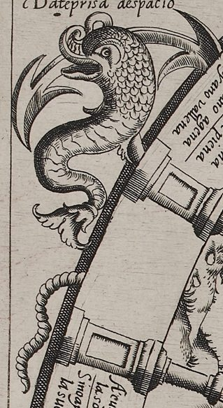
Rule. Not a square. A corner emblem outside the track; no effect in play.
What you see
In the top left corner, outside the track, a scaly dolphin with a curled snout and open mouth twists its body downward round the shank of an anchor, whose curved arms project behind its head to left and right. A twisted cable hangs below along the outside of the track. Above, in italic: “Dateprisa aespacio”, that is “Date prisa a espacio” (“Make haste slowly”) (board).
Why it is here
Barros closes his book with the three figures in the outer corners. The dolphin with an anchor means speed and firmness. Read together with the woman (Occasion) and the clock, they say that in a petition nothing is safe until its end, so the petitioner must persist with great care and firmness, fearing neither labor nor cost, and losing neither occasion nor time, because what is lost of these is never recovered. Time for making efforts is given up to the last hour and no more, and the efforts made will, after death, bear witness to the life; this holds for everything pursued, from earth to heaven (Barros 1588, pp. 51–53). The dolphin gives the speed and the anchor the firmness; the motto joins them: hurry, but steadily.
Historical context
The motto is the Spanish form of the Latin festina lente, a much-glossed adage that Erasmus treats in the Adagia (Lucero 2019c, 826–27). Collar de Cáceres traces it to the Hypnerotomachia Poliphili (1499), where a marble relief of a circle and an anchor with a dolphin is read “Semper Festina Tarde”; to the printer's device of Aldus Manutius; to Roman coins of Titus and Domitian; and to the reliefs of the patio of the University of Salamanca (Collar de Cáceres 2009, 92, 95, 103). Alciato used the image in Princeps subditorum incolumitatem procurans (Martínez Millán 1996, 473; Alciato 1621). Collar thinks Barros most likely took it from Paolo Giovio's Imprese, where it is the device of the emperor Titus; a codicil of 27 July 1604 shows that Barros then had in his house a book of Giovio's belonging to the licentiate Vélez of Jaén (Collar de Cáceres 2009, 93). Martínez Millán cites the Spanish Giovio (Seville, 1561), where Titus prefers the dolphin and anchor to Vespasian's butterfly and crab (Martínez Millán 1996, 473). The four corner mottoes have no Italian, unlike the verses on the track (Lucero 2019a, 203).
Differences between the editions
- The motto is on the board only; the book gives the figure and its meaning, not the words (Barros 1588, p. 51).
- Reading. The plate has “Dateprisa aespacio”, with a clear “a” before “espacio” and no “d” (board). Zollinger and the giochidelloca catalog read “Date prisa a espacio” (Ciompi & Seville, giochidelloca.it); Lucero and Collar de Cáceres print “Date prisa despacio” (Lucero 2019a, 203; Collar de Cáceres 2009, 92); the La Bella Donna blog prints “Date prisa e espacio” (Fleur-de-Gigi 2013b).
- The sources we cite record no difference between G, M and C in the corner passage.
What scholars say
Collar de Cáceres reads the dolphin as constancy, one of three notions, constancia, ocasión y medida del tiempo
(Collar de Cáceres 2009, 92) (“constancy, occasion and the measure of time”), that guide the courtier's effort to rise (Collar de Cáceres 2009, 92, 99). Lucero links the corner to the labor squares: el ancla y el delfín, que ocupan la esquina superior izquierda, sugieren paciencia en esa constancia
(Lucero 2021, 146) (“the anchor and dolphin in the top left corner suggest patience in that constancy”), diagonally opposite the clock (Lucero 2021, 146; Lucero 2019c, 826–27). Martínez Millán reads the dolphin as movement and the anchor as stillness, and notes that Diego López's commentary on Alciato applied the pair to royal government (Martínez Millán 1996, 473). Rodríguez Mansilla sums up the three corners: the courtly petition exige celeridad, sentido de la oportunidad y manejo eficaz del tiempo
(“demands speed, a sense of opportunity and the efficient handling of time”) (Rodríguez Mansilla 2019, 190).
Occasion (“Don't lose me”)
la ocasion (the book: “vna muger con vn manojo de cabellos en la frente, y la cabeça calua”)
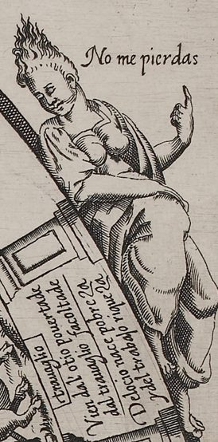
Rule. Not a square. A corner emblem outside the track; no effect in play.
What you see
In the top right corner a woman half-reclines along the outer rim of the track, leaning on the balustrade by squares 17 and 18. Her hair is drawn up into a single lock that rises from her crown like a flame. Her breasts are bare and a cloak covers her lower body. She raises her left hand and points with the index finger to the words beside her head: “No me pierdas” (“Don't lose me”) (board).
Why it is here
Barros names her: a woman with a bunch of hair on her forehead and a bald head, meaning Occasion (Barros 1588, p. 52). In the old image Occasion is bald behind, with a forelock blown by the wind (Collar de Cáceres 2009, 93): a chance can be caught by the forelock as it comes toward you, and not at all once it has passed. Her words speak for her. In Barros's lesson of the three corners, the petitioner must lose neither occasion nor time, because neither can be recovered (Barros 1588, pp. 52–53).
Historical context
Occasion, the Greek Kairos, merged with Fortune in medieval and Renaissance images, as Panofsky showed; Collar de Cáceres and Martínez Millán both cite this fusion (Collar de Cáceres 2009, 93, 103; Martínez Millán 1996, 473). In Alciato's emblem In occasionem (headed “Fortuna” in some editions) she stands nude on a wheel in the sea, with winged feet, a razor, a forelock, and a bald nape (Collar de Cáceres 2009, 93, 95, 103; Alciato 1621). Martínez Millán adds Ripa and Daza Pinciano's Spanish Alciato (Martínez Millán 1996, 473). Seizing the forelock was a stock courtly image. Biagioli quotes a later poem by Jacopo Soldani on the office-seekers who went to Rome at the election of Urban VIII (1623) to seize the waving forelock
(Biagioli 1993, 34) of the one who flees, only to wait in vain for her return (Biagioli 1993, 34–35). Barros's own Fortune in the Madrid edition of Pedro Madrigal also had a forelock, as Wilson noted (Wilson 1968, 368): M explains why she wears hair only on her forehead, a paragraph the 1588 book omits (Barros 1587, Madrigal ed., PDF 10; Barros 1588, p. 57).
Differences between the editions
- The motto is on the board only; the book gives the figure and its meaning (Barros 1588, p. 52).
- The book calls the head bald; on the board the back of the head is not shown (Collar de Cáceres 2009, 93; board).
- The sources we cite record no difference between G, M and C in the corner passage.
What scholars say
Collar de Cáceres describes a seated, clothed woman looking into the board, not the fused Fortune-Occasion type (which is, he says, the Fortune of square 51); with Alfredo Aracil he reads Occasion as la puerta de escape que de no existir obligaría a considerar en un contexto laico la Fortuna como un inexorable Fatum
(“the escape hatch without which Fortune, in a secular setting, would have to be taken as inexorable Fate”) (Collar de Cáceres 2009, 93). She is in fact bare to the waist and clothed only below (our observation). Lucero describes her as sorprendentemente reclinada sobre el límite exterior del recorrido, casi yacente, que resulta tan peculiar o anómala
(“surprisingly reclining on the outer edge of the course, almost lying down, which is so peculiar or anomalous”) (Lucero 2019a, 201); he notes that she is marked only by her forelock and that Fortune and Occasion exchange attributes in the work (Lucero 2021, 146–47), and he finds the likeness to the lying ass of square 55 (“I Thought…”) striking, while noting that el texto de Barros no pide de manera precisa esa postura
(“Barros's text does not precisely call for that posture”) (Lucero Sánchez 2019, 172). Martínez Millán treats Occasion and Fortune as sharing the same attributes, and quotes Barros's whole Fortune ekphrasis at this point (Martínez Millán 1996, 473–74). The giochidelloca catalog, in the machine-translated copy we have, describes “a female figure with half-shaved hair” (Ciompi & Seville, giochidelloca.it), and the La Bella Donna blog “a female figure with hair half-shaved” (Fleur-de-Gigi 2013b); the plate shows the hair gathered up, not visibly shaved (our observation).
The Clock (“Until the last”)
vna mano señalando las horas de vn Relox
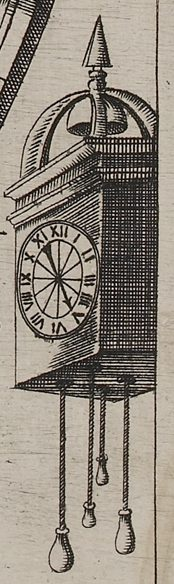
Rule. Not a square. A corner emblem outside the track; no effect in play.
What you see
In the bottom right corner hangs a weight-driven wall clock: a dial with Roman numerals and a single hand, a domed bell-cage topped by a pointed finial, and four weights hanging on cords below. From behind the outer rim of the track a clothed arm with a turned-back cuff reaches in, and the hand points its index finger toward the clock and the words beside it, which read upward: “Haesta la postrera” (“Until the last [hour]”) (board).
Why it is here
Barros describes a hand pointing to the hours of a clock, with the words “Until the last”, meaning time and how it passes (Barros 1588, p. 52). The lesson of the corners ends here: time for making efforts is granted up to the last hour and no more, and those efforts will, after death, bear witness to the life (Barros 1588, p. 53). For the player: keep going to the end, because nothing in a petition is settled before it.
Historical context
Martínez Millán reads the clock as the vanity and fleetingness of life, with parallels in the enigmas of Cristóbal Pérez de Herrera, a member of Barros's circle (Collar de Cáceres 2009, 82), in Panofsky's study of Father Time, in Guevara, and in the verses on time of the Epístola moral a Fabio (Martínez Millán 1996, 474–75). Collar de Cáceres takes it as el tiempo que corre de modo inexorable
(Collar de Cáceres 2009, 93) (“time that runs on inexorably”), a thing that, like occasion, must not be let slip (Collar de Cáceres 2009, 93). Rodríguez Mansilla reads the title-page engraving of La pícara Justina (1605) as a parody of Barros's board; there Time, an old man with a clock on his head, steers the rogues' ship (Rodríguez Mansilla 2019, 188, 190).
Differences between the editions
- The book gives the words as “Hasta la postrera” and calls them the clock's verse, with the misprint “leira” for letra (Barros 1588, p. 52). The plate has “Haesta la postrera”, with H-a-e-s-t-a cut as one word (board).
- The sources we cite record no difference between G, M and C in the corner passage.
What scholars say
Collar de Cáceres reads the plate as “Ha esta la postrera” and calls it somewhat cryptic (Collar de Cáceres 2009, 93); Lucero normalizes it to “Hasta la postrera” (Lucero 2019a, 203); Zollinger prints “Haesta” and adds “lire Hasta”, and the giochidelloca catalog keeps “Haesta” (Ciompi & Seville, giochidelloca.it); our transcription keeps the engraved form without deciding between “Hasta” with an intrusive e and “Ha esta” (board). Lucero links the clock to the Labor squares: labor lasts “until the last”, to the final breath, and the clock stands diagonally opposite the dolphin and anchor (Lucero 2021, 146). Martínez Millán places the danger not in the hours spent courting patrons but in ambition kept waiting on false promises while life runs out (Martínez Millán 1996, 475).
The Sea of Suffering
Mar de Sufrimiento (the book: “vn mar, que se llama de Sufrimiento”) · Mare di soffrimento
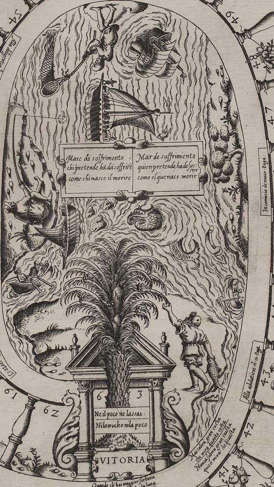
Rule. Not a square: the sea at the center of the board; no effect in play.
What you see
Inside the innermost ring lies an oval of rough sea drawn in wavy lines, with rocky shores at left and right. Its figures face different edges of the sheet, some upright for a reader at the bottom, others turned sideways or upside down (board); players seated round the board would each see part of it the right way up (our observation). What it contains:
- A strapwork cartouche in two panels, Italian left and Spanish right: “Mare di soffrimento / chi pretende hà dà soffrire / come chi nasce il morire” and “Mar de suffrimiento / quien pretende ha de sus: srir / como el que nace morir” (“Who seeks advancement must endure, / as death for all the born is sure”).
- A galley under sail, drawn on its side: a dark hull with a bank of oars and rowers' heads, a lateen yard with two bellying sails, a small grapnel or anchor at the bow.
- A round-hulled sailing ship upside down, its hull and bent masts turning in the circles of a whirlpool.
- At the top, a man drawn head-down (upright for a reader at the top edge), his feet against the rim, reaching into the water with a long-handled landing net.
- Beside the net, a long tapering shape covered in lattice: a large scaly fish or a conical fish-trap; the engraving does not settle which.
- On the left shore, an angler in a cap reclining against the rocks, his line running out to a float beside the galley.
- A second sailing ship on its side with one large sail.
- Three fish heads breaking the surface, mouths open.
- The head of a sea monster or whale, with a large round eye, toothed jaws and a curled snout.
- A finned coil and a curved tubular form rising from the water, probably parts of a sea serpent (uncertain).
- A small rowing boat with two men in hats, one at the oars.
- A small skiff at the right rim with a small figure and an oar or pole (indistinct).
- The rocky right shore with bushes and small flowering plants, and a grassy bank at the lower left.
- At the lower end, the palm and the Victory gate (square 63) and the man reaching up to the palm (see their notes) (board).
Why it is here
Barros puts in the middle of the board a sea called Suffering, “sufrimiento” in its old sense of patient endurance, because of the endurance needed by anyone who plunges into this abyss of petitions. They must always go in anxiety, running through different fortunes, with more patience than a rod fisherman, whose submission is as forced as the verse says (Barros 1588, pp. 50–51). In sea language correr fortuna is to ride out a storm, so “different fortunes” are also different storms (our observation). The couplet compares the petitioner's suffering to death: both come with the condition, to petition and to be born.
Historical context
The sea of petitions was already a figure in the book's preliminaries: Cervantes's sonnet, printed in M and C but not in G (Lucero Sánchez 2016, 179–81), promises that “whoever sails across the maddened gulf of the sea of petitions will see, upon the instant, the thread of the labyrinth of the court” (our translation) (Barros 1588, sig. A5r). Bidwell-Steiner takes the board's center as that sea made visible (Bidwell-Steiner 2024, 197). Barros opens his book with the same metaphor, warning against putting out to the high sea in so small a ship (Barros 1588, p. 17), and Collar de Cáceres, who sets Cervantes's sea of petitions beside Barros's own preference for the metaphor, notes that he used the stormy sea of life again in his praise of Guzmán de Alfarache (1599) (Collar de Cáceres 2009, 99, 104). Collar describes the center as a rough sea with ships and a whale, and on its shore fishermen with rod or net (Collar de Cáceres 2009, 99). Rodríguez Mansilla sees la figura de un delfín (aunque tiene aspecto de pez) del que asoman cabeza y cola
(Rodríguez Mansilla 2019, 188) (“a dolphin, though it looks like a fish, with head and tail showing”) and suggests, as his own conjecture, that it may stand for the rescuer of the shipwrecked in Alciato; Barros says nothing of it (Rodríguez Mansilla 2019, 188). Wood connects the sea monsters with maps: the Courtly Philosophy Game reflects some elements of maps, particularly its sea monsters
(Wood 2019, 466), fitting for an engraver who was also a working cartographer (Wood 2019, 466). A central sea is unusual: Rodríguez Mansilla notes that the contemporary Italian goose boards reproduced by Infantes share the spiral but not the sea (Rodríguez Mansilla 2019, 190). Gatti's Game of the Monkey, published in the same year, puts dancing monkeys and a bagpiper where this board has its sea (Wood 2019, 475).
Differences between the editions
- Ships or fisherman. G explains the endurance by the ships painted there (“como los navíos que están pintados”); M and C replace this with the rod fisherman (Lucero 2019a, 205; Lucero Sánchez 2016, 185–86; Barros 1588, p. 51). Lucero reads M's change as written with a new engraving in view (Lucero 2019a, 205).
- Name. M calls it “un mar que se llama Sufrimiento”; C adds “de” (Barros 1587, Madrigal ed., PDF 9; Barros 1588, p. 50).
- Verse. The 1588 book, as printed, reads “Quien pretende ha le sufrir; / Co.no quien nace morir”, with damaged type for “de” and “Como” (Barros 1588, p. 51); the edition's transcription of the book (C-057a) gives the evident letters, “ha de sufrir; / Como”, and records the damage in its note. The board has “como el que nace” (not “como quien”), “suffrimiento”, and “ha de sus:” with “srir” cut under the line end, that is “sussrir” for “suffrir”, as Zollinger and Collar also read (board; Ciompi & Seville, giochidelloca.it; Collar de Cáceres 2009, 99). Collar's Italian “pretente” is not on the plate, which has “pretende” (board).
What scholars say
Lucero calls the couplet el epigrama que cierra el camino espiriforme que conduce a la Palma de la Victoria o al Mar del Sufrimiento
(Lucero 2021, 137) (“the epigram that closes the spiral path leading to the Palm of Victory or to the Sea of Suffering”), which, he says, strikes home en un reto de infatigable constancia
(“in a challenge of tireless constancy”) (Lucero 2021, 137); Gómez Canseco, reviewing Lucero's edition, puts it that the palm is reached within a sea of suffering (Gómez Canseco 2021, 431). Wood makes the sea the destination of a sinful life
(Wood 2019, 463) and the palm that of the virtuous player (see Victory) (Wood 2019, 463). Martínez Millán, writing of the Pass of Hope, recalls that the ship in a stormy sea traditionally stood for hope, a tempest that can be weathered, and that Barros uses the image at the start of his book (Martínez Millán 1996, 477). The identifications of the lattice form (fish or trap) and of the coils (serpent) remain uncertain (board).
The Man Outside
el hombre por defuera · (no heading; Italian verse “Mai salirà gran costa / che mira quanto costa”)
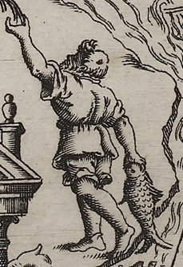
Rule. Not a square. A picture beside Victory; it has no effect in play.
What you see
On the shore to the right of the Victory gate a man, seen from behind with his head turned over his shoulder, reaches up with one hand toward the fronds of the palm; in the other he holds a large fish by the head. One foot is shod; the other appears bare, and a shoe lies on the ground by his feet. In the band at the lower right of the sea's rim, reading steeply upward, are two couplets, Italian above Spanish: “Mai salirà gran costa / che mira quanto costa” and “Nunca subira gran cuesta / quien mira · lo q[ue] cuesta” (“No one will climb a great ascent / who counts each penny to be spent”) (board).
Why it is here
Barros describes a man “outside” (por defuera) holding on to the branches of the palm and straining to raise himself above the lowness of his lot. The palm bends and does not break, and by nature it lifts whoever leans on it, so the pair figure the contest between the brave person and adverse fortune. He seems to have caught a fish in the sea of his labor, but he leaves a shoe behind: nothing is gained for nothing, and there is no true victory without risk, labor and cost. The cost will seem greater than the return, and so, that the cost should not deter him, his verse follows (Barros 1588, pp. 49–50). The verse turns on a pun: cuesta is “a slope” and also “it costs”. Whoever stops to count what the climb costs will never get up the hill.
Historical context
The image adapts the emblem-book palm. In Alciato's Obdurandum adversus urgentia a boy hangs from palm fronds to reach the sweet fruit, which, Collar de Cáceres says, Alciato understands en clave espiritual
(Collar de Cáceres 2009, 99) (“in a spiritual key”); and Collar reports Ripa thus: el muchacho asido a la palma, que simboliza la Virtud, viéndose así levantado del suelo indica la Perseverancia
(“the boy clinging to the palm, which symbolizes Virtue, seeing himself thus lifted from the ground, signifies Perseverance”) (Collar de Cáceres 2009, 99, 104; Alciato 1621). Martínez Millán calls Barros's version a classical emblem with alterations of his own, and quotes the passage on the fish and the lost shoe in full (Martínez Millán 1996, 481). The fish and the shoe are the price of the catch; Wilson's summary of the 1587 text puts it plainly: He has caught his fish in the sea of troubles, but his fishing has cost him his shoe
(Wilson 1968, 368). The man stands at the edge of the sea where the angler of the center also waits with his rod (see “The Sea of Suffering”).
Differences between the editions
- Book and board verse. Both the 1588 book and the Madrid texts give the second line as “Quien mirare lo que cuesta” (Barros 1588, p. 50; Martínez Millán 1996, 481). On the board both photographs show “quien mira”, a gap with a dot, then “lo q[ue] cuesta”; there is no “mirare” on the plate (board). Zollinger and the giochidelloca catalog (“mirare”) and Collar de Cáceres (“mirare lo q questa”) print the book's form (Ciompi & Seville, giochidelloca.it; Collar de Cáceres 2009, 99); “questa” is not on the plate (board).
- The Italian couplet keeps the pun, since Italian costa is both “slope” and “it costs” (our observation).
- G describes only
un hombre como haciendo fuerza
(a man as if exerting himself) (Lucero Sánchez 2016, 187); M and C say he is holding the palm's branches, outside, straining to rise (Barros 1588, p. 49). - The book has him hanging from the branches; the board shows him standing on the shore and reaching up to one frond (our observation).
What scholars say
Lucero takes the man as proof that even the winner is not spared: ha perdido un zapato en el intento
(Lucero 2021, 137) (“he has lost a shoe in the attempt”); La Corte exige siempre su peaje, ya sea en forma de la pérdida de libertad que supone el servicio a un patrón, ya en el camino de la pobreza
(“the court always demands its toll, whether as the loss of freedom that serving a patron entails or on the road to poverty”) (Lucero 2021, 137). Seville repeats Barros's moral: nothing is achieved for free
(Seville 2026, 73). The giochidelloca catalog and the La Bella Donna blog describe him as a fisherman (Ciompi & Seville, giochidelloca.it; Fleur-de-Gigi 2013b).
Title, Privileges and Engraver's Signature
Filosofia cortesana de Alonso de Barros, criado del Rey n[uest]ro S[eñ]or · Con priuilegio di Sua Ecc[ellenz]a per ·X· anni nel Regno di Napoli
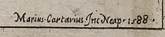
Rule. Not a square. The sheet's title, privileges and the engraver's signature.
What you see
Along the top margin, in spaced roman capitals with swash initials, runs the title: “FILOSOFIA CORTESANA” at the left and “DE ALONSO DE BARROS” at the right. At the bottom right it is completed by “CRIADO DEL REY NR̃O S.ᵒʳ” (a tilde over the R, a raised “or” after the S), and under this, in italic, “Con ſu priuilegio”, with a knot flourish. To the left of the flourish two italic lines read “Con priuilegio di Sua Ecc.ª per ·X· / anni nel Regno di Napoli –“. At the extreme bottom right a small italic signature reads “Marius·Cartarius.Jnc Neap·1588·” (board). Expanded: “The Courtly Philosophy of Alonso de Barros, servant of the King our lord. With his privilege.” “With the privilege of His Excellency for ten years in the Kingdom of Naples.” “Mario Cartaro engraved [this] at Naples, 1588.”
Why it is here
The title is the name under which the king licensed the picture: the royal privilege printed in the books speaks of a picture entitled Filosofia Cortesana on a large sheet, which Barros had given a moral explanation in a separate text (Barros 1588, sig. A2r). The book's title adds “moralizada”; the board does not (our observation). “Criado del Rey” was Barros's standing style on every title page. He was a minor royal servant, an aposentador, one of the officers who found lodgings for the court (Collar de Cáceres 2009, 82; Seville 2026, 70). A privilege was a monopoly. Philip II's, dated Madrid, 9 February 1587, gave Barros for ten years the sole right to print and sell the picture and its moral explanation in the king's kingdoms and lordships; unlicensed copies, with the plates and tools used, were to be forfeit and a fine of 50,000 maravedís paid for each offense (Barros 1588, sig. A2r). The sheet carries a second grant, from His Excellency, the viceroy, for ten years in the Kingdom of Naples (Ciompi & Seville, giochidelloca.it; Lucero 2019a, 202); Naples was a separate kingdom with its own licensing (our observation). “Jnc” stands for incidit, “engraved”: Cartaro signs as engraver; the book was printed by another man, Iosep Cacchij (Collar de Cáceres 2009, 86; Infantes 2010, 130).
Historical context
Mario Cartaro (Viterbo, 1540/45 – Naples, 16 April 1620) was, in the words of the British Museum catalog as Seville quotes it: “Engraver, print dealer and publisher” (Seville 2026, 70 n. 16). He was active in Rome from the late 1550s, worked with Antoine Lafréry on the Speculum Romanae Magnificentiae, and valued Lafréry's estate after his death in 1577 (Seville 2026, 70; Borroni 1977). His Roman work included the engraving of Vignola's design for the façade of the Gesù (1573), a celestial globe (1577), maps of Rome, and prints after Michelangelo (Collar de Cáceres 2009, 102; Metropolitan Museum of Art n.d.). In Naples he drew maps and plans of the Kingdom for the Regia Camera, from 1586 according to the Dizionario Biografico, Collar de Cáceres and Wood (Borroni 1977; Collar de Cáceres 2009, 102; Wood 2019, 462); Zollinger calls him the viceroy's official cartographer from 1583 to 1594, and the British Museum's biography has him in Naples “by 1588” (Ciompi & Seville, giochidelloca.it; Seville 2026, 70). Bartsch lists 28 prints by Cartaro and not this one (Collar de Cáceres 2009, 102). In Rome he belonged to the same circle as the publishers of other game sheets, Giovanni Antonio de Paoli and Altiero Gatti (Wood 2019, 462). The sheet is etched and engraved on paper and measures 531 × 404 mm (British Museum n.d.; Collar de Cáceres 2009, 86). That is at the top of the usual size of printed game sheets, which Wood gives as roughly 35 to 40 centimetres by 46 to 53 centimetres, printable on a royal folio and then trimmed
(Wood 2019, 479). A copper plate, unlike a woodcut, made it easy to cut small lettering such as rules and verses into the design (Seville 2026, 66). Seville calls it the unique example of the sheet, and Lucero knows no sheet for either Madrid edition (Seville 2026, 70; Lucero 2019a, 202). The British Museum acquired it in 1869 at the Sotheby's sale of 24–27 February, through the dealer Edward Daniell, from the collection of José de Salamanca y Mayol, Marquis of Salamanca; José de Madrazo owned it earlier (British Museum 2012; British Museum n.d.). Early Italian goose boards from the same purchase sit under neighboring numbers, among them Gargano's 1598 goose game, 1869,0410.2465.+ (Seville 2026, 65; British Museum n.d.). Scholars had long taken the board for lost: De éste, dado por perdido, se conserva un ejemplar en el British Museum
(“thought lost, a copy survives in the British Museum”) (Collar de Cáceres 2009, 81–82). Zollinger reports that an Australian blogger put it online in 2008 without knowing what it was (Ciompi & Seville, giochidelloca.it). Collar de Cáceres published it in 2009 and Zollinger, independently, in January 2010 (Infantes 2010, 130, 133; Lucero 2019a, 202). It was shown in the British Museum's exhibition “Prints in Play” in 2017 (British Museum n.d.). Image credit for every reproduction: © The Trustees of the British Museum, 1869,0410.2463.+ (image numbers AN137041001 and 605314001) (Seville 2026, 71; British Museum 2012; British Museum n.d.).
Differences between the editions
- Title. G's title page reads “Philosophia CORTESANA moralizada … CON PRIVILEGIO”; M's “FILOSOFIA Cortesana, moralizada … Tassado en medio Real”; C's “FILOSOFIA CORTESANA MORALIZADA”, with no date in the imprint (Seville 2026, 70, 72; Barros 1588, sig. A1r). The board's title lacks “moralizada” (board).
- Privileges. The 1588 book reprints the Castilian privilege of 1587 and ends “Con licencia y Priuilegio” (Barros 1588, sig. A2r); only the board carries the Neapolitan privilege (board). A third grant, for the Indies, was issued at El Pardo on 17 November 1587; the sources we cite do not say whether an Indies edition followed (Collar de Cáceres 2009, 84, 88, 101).
- Language. Of the lettering in the title block, only the Neapolitan privilege (Italian) and the engraver's signature (Latin) are not Spanish; the title stays in Spanish (Lucero 2019a, 203; board).
- Readings. The plate reads “Cartarius” (board); Collar de Cáceres renders the signature in Italian as “Mario Cartaro inc Naep. 1588” (Collar de Cáceres 2009, 86). The raised “or” gives “S[eñ]or” (board). The La Bella Donna blog translates “Criado del Rey” as “Created with permission”; it belongs to Barros's name (“servant of the King”) (Fleur-de-Gigi 2013b; board).
- Holding. The giochidelloca catalog, in the machine-translated copy we have, gives the owner as “British Museum. Donation Lady Charlotte Schreiber” (Ciompi & Seville, giochidelloca.it); the museum's record gives purchase through Daniell in 1869 (British Museum n.d.), and the Schreiber gift of goose boards came in 1893 (Collar de Cáceres 2009, 86). Infantes and Lucero write “British Library” for the British Museum (Infantes 2010, 130; Lucero 2019a, 202).
What scholars say
Lucero takes the sheet for lo que parece ser una copia fidedigna del año siguiente
(Lucero 2019a, 202) (“what seems to be a faithful copy from the following year”) of a lost Madrid print; for him a bilingual board printed in Naples, a territory of the Spanish crown, was aimed at the Spanish colony there and at the local court (Lucero 2019a, 202–3). Infantes also suspects a faithful copy of the Madrid picture, while stressing that it is in Castilian (Infantes 2010, 135). Zollinger calls it Il s’agit du plus ancien jeu de l’oie daté connu.
(“the oldest dated game of the goose known”) (Ciompi & Seville, giochidelloca.it); Wood, more cautiously, counts it with Gatti's Game of the Monkey (also 1588) among two prints of a decade before the earliest sheet titled as a goose game (Gargano, 1598) (Wood 2019, 454). Wood calls Cartaro the “printer” in her captions and the game's “creator” in her text (Wood 2019, 463, 466); the signature makes him its engraver, and the book names Barros as author (board; Barros 1588, sig. A1r). The British Museum's curatorial comment judges it “likely” that the sheet accompanied the Naples edition (Ciompi & Seville, giochidelloca.it).
A Plain Square
Rule. Stay here. If someone lands on you, you take the square they have just left, paying one stake if that square is behind you.
What you see
A bay between two balusters holding nothing but its engraved number and a strip of hillocky ground with grass and a single small plant, flowering or leafy, different from bay to bay. The ground strip runs on from bay to bay round the whole track. Thirty-seven of the 63 squares are plain: 2, 3, 5, 6, 8, 9, 11, 13, 14, 16, 18, 19, 21, 22, 24, 25, 27, 29, 31, 33, 35, 37, 38, 40, 42, 44, 45, 47, 49, 50, 52, 54, 56, 58, 59, 61 and 62. Like all the lettering, the numbers face outward, so some (49, 50, 52) are upside down for a reader at the foot of the sheet; the 2 is cut like a Z; square 62 ends against the scroll at the foot of the Victory gate (board).
Why it is here
In the Madrid edition of Pedro Madrigal, Barros explains that the sheet is painted with 63 squares, which are the years of life spent in a petition, and also the years that wear the petition out (M, fol. 42r) (Barros 1587, Madrigal ed., PDF 11; Martínez Millán 1996, 470). A plain square is one of those years in which nothing marked happens, but which still pass. In play they are where most throws end, and where rivals meet. Two counters may not share a square: the newcomer stays and the one already there takes the square the newcomer left, since that, Barros says, is the custom of rivalry (Barros 1588, pp. 21–60). Near the end they decide the exact count. With two dice the smallest throw is 2, so a counter on 62 cannot land exactly on 63 and must count back; with Madrigal's alternative of six arenillas, dice marked on one face only, a throw of 1 is possible (our observation).
Historical context
Lucero puts the squares' meaning this way: Las casas del recorrido son para Barros «los años de la vida que se gastan en una pretensión y los que también la gastan a ella», hasta el climaterio
(“For Barros the squares of the course are 'the years of life spent in a petition, and those that also wear it out', up to the climacteric”) (Lucero 2020, 125). He adds that Barros kept the Goose game's division into marked and unmarked squares (Lucero 2020, 125). Wood cites Mascheroni and Tinti for the reading of the Goose game's own 63 squares as 63 years of life, and Seville reads them as a spiritual journey through a life (Wood 2019, 466; Seville 2026, 64). Collar de Cáceres notes that the strip of land runs continuously from start to end, joining the Labor squares (Collar de Cáceres 2009, 91). M's worked example shows the swap: Pedro throws 6 and puts his ring on square 6, later reaching the Favorite at 26 by way of the Pass of Hope; Rodrigo, coming the same way from square 5, finds Pedro's ring on 26 and takes the square, and Pedro goes back to 5, where Rodrigo had been, paying a stake because he went back (Barros 1587, Madrigal ed., PDF 11–12; Lucero Sánchez 2016, 190).
Differences between the editions
- The set of plain squares was not fixed. In G, Poverty stands at 59, so G's board (lost) would have had a plain 60 and a marked 59; M, C and the board have Poverty at 60 and 59 plain (Lucero 2019a, 204; Lucero Sánchez 2016, 180). Lucero also infers that G's Labor squares may have been spread more evenly along the track (Lucero Sánchez 2020, 20).
- Sharing a square. C gives the swap rule twice (Barros 1588, pp. 22–60); M adds that at the start of the game the displaced player is left without a square, and its example charges a stake for going back (Barros 1587, Madrigal ed., PDF 12).
- The “years of life” passage belongs to M's “Declaración del juego”, which the 1588 book lacks (Lucero Sánchez 2016, 189–90; Barros 1588, p. 60); Lucero places Barros's first mention of the separate sheet in M (Lucero 2019a, 200–201).
What scholars say
Bidwell-Steiner takes the 63 squares as the length of a court career, una carrera cortesana que, según el autor, demora 63 años
(“a court career which, according to the author, lasts 63 years”) (Bidwell-Steiner 2024, 205). Martínez Millán relates the exact finish to the exact number of years a life allows for a petition (Martínez Millán 1996, 481). Wood writes that the game represents an austere year of a courtier’s life
(Wood 2019, 463); Barros's text speaks of the years of a life, not of one year (our observation). Lucero adds the climacteric to Barros's “years of life”, while noting that Barros himself goes no further than the years (Lucero 2020, 125). Méndez Filesi, writing without the board, supposed the Labor squares evenly spaced every six or seven squares (Ciompi & Seville, giochidelloca.it).